Akademia AI · darmowy poradnik · edycja 22.09.2026
ChatGPT w praktyce.Pełny przewodnik od zera.
Zakładamy, że nigdy wcześniej nie korzystałeś z ChatGPT. Zaczynamy od zupełnych podstaw — jak wygląda ekran, co znaczy każdy przycisk — a kończymy na Projektach, Deep Research, Codeksie i analizie danych. Z prawdziwymi zrzutami ekranu, słowniczkiem pojęć i promptami gotowymi do skopiowania.
To, co czytasz, pochodzi z Akademii AI Probatum — platformy, w której uczysz się AI robiąc konkretne zadania, nie oglądając wykłady. W środku znajdziesz m.in.:
Moje projekty — dziewięć większych zadań na kilka wieczorów, np. własna strona WWW zbudowana z pomocą AI albo bajka z ilustracjami dla dziecka.
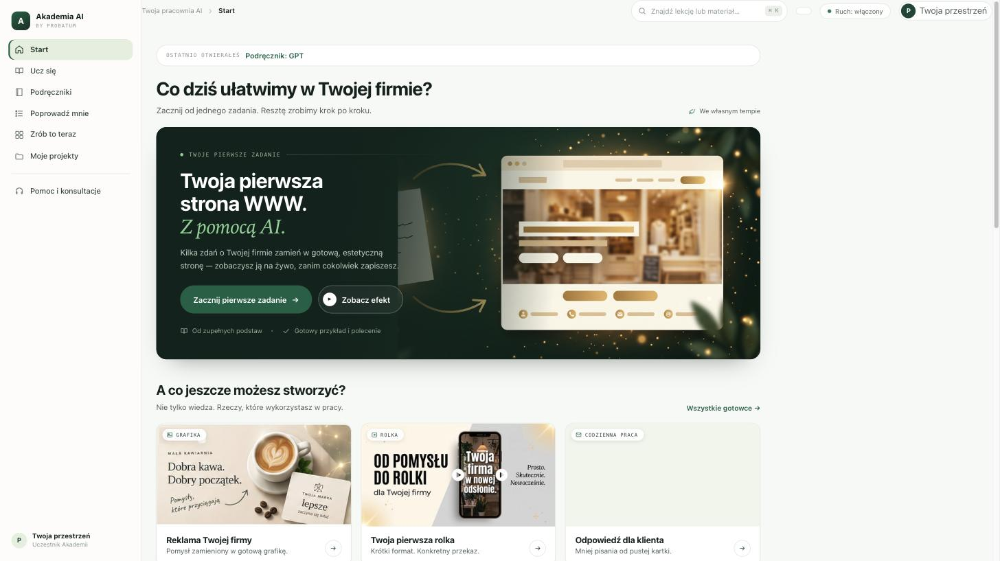
Start — Twoje pierwsze zadanie
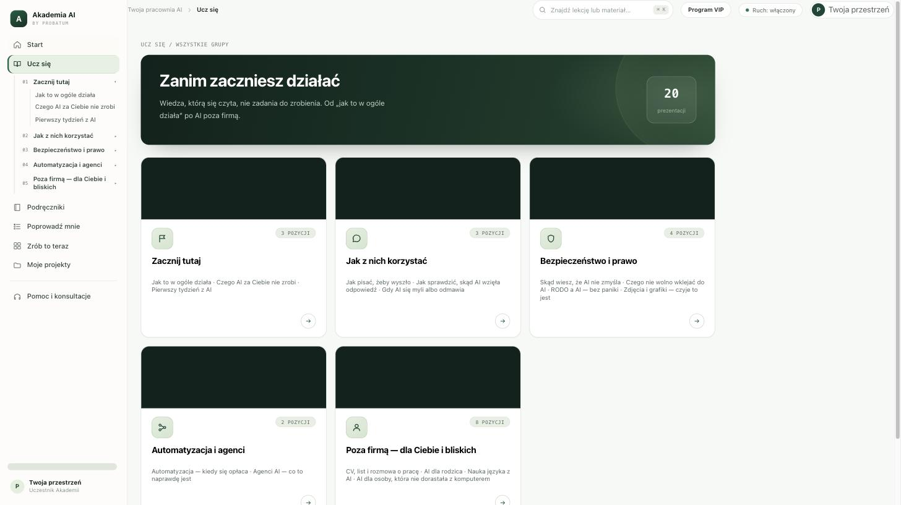
Ucz się — 20 prezentacji
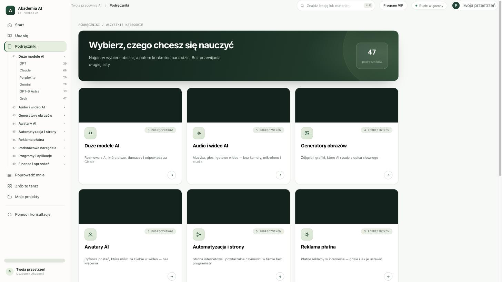
Podręczniki — 47 przewodników
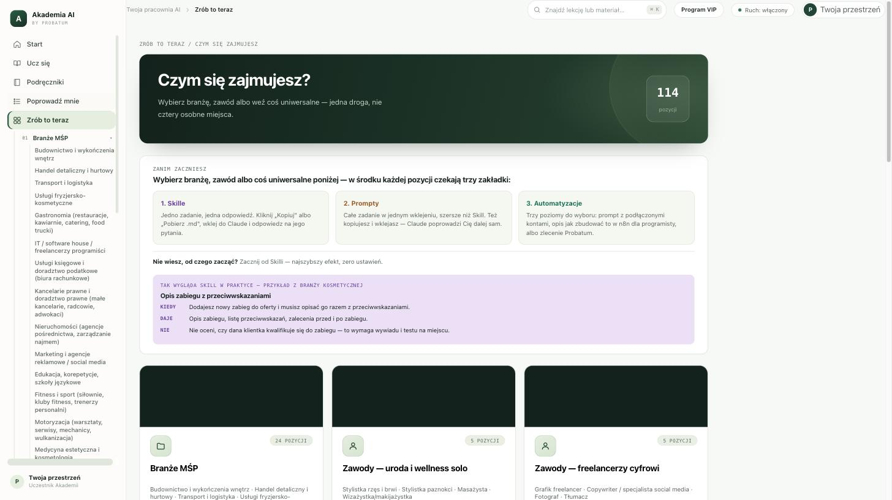
Zrób to teraz — 114+ gotowców
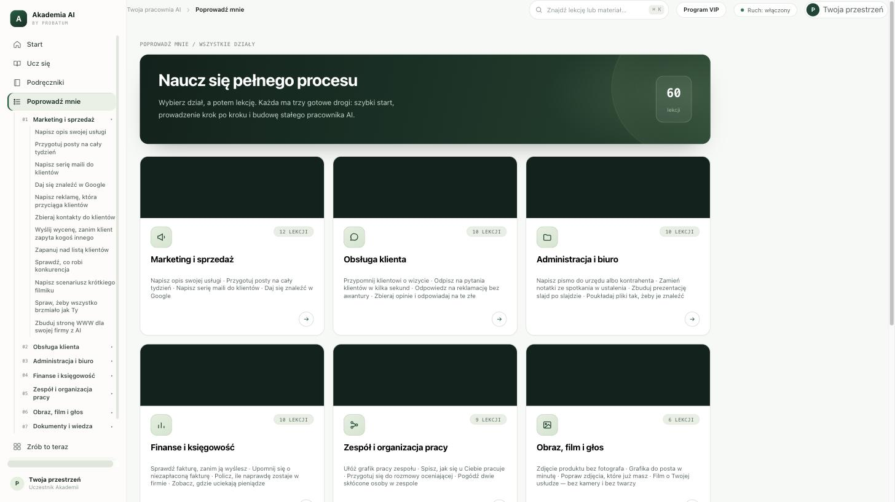
Poprowadź mnie — 60 lekcji
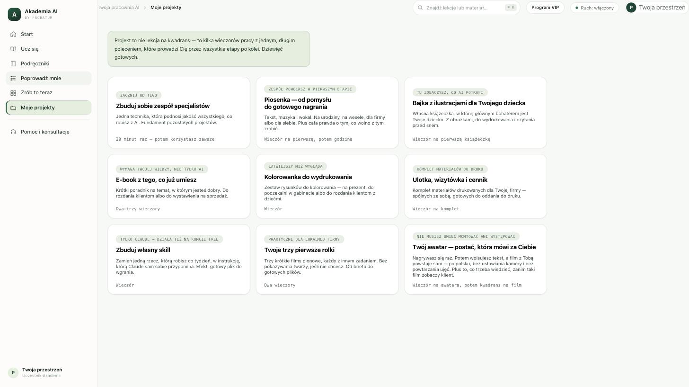
Moje projekty — 9 gotowych
Ten poradnik uczy Cię ChatGPT od zera do zaawansowanych funkcji. Akademia idzie krok dalej: prowadzi Cię za rękę przez konkretny efekt — stronę WWW, film, skill, który pracuje za Ciebie, z prawdziwym mentoringiem i praktyką na Twoich zadaniach.
Ten dokument zakłada, że nigdy wcześniej nie korzystałeś z ChatGPT. Zaczynamy od zera.
ChatGPT to program, z którym rozmawiasz, pisząc zwykłym językiem — zadajesz pytanie albo prosisz o coś (napisanie tekstu, wyjaśnienie tematu, pomoc w liczeniu, poprawienie maila), a on odpowiada tekstem generowanym „na żywo" przez model sztucznej inteligencji. To nie jest wyszukiwarka internetowa — model nie „szuka odpowiedzi w bazie danych", tylko przewiduje, jaki tekst najlepiej pasuje, na podstawie ogromnej ilości materiału, na którym się uczył.
Trzy rzeczy, które warto wiedzieć od razu
Może się mylić. Nawet gdy odpowiedź brzmi pewnie, bywa nieprawdziwa (to „halucynacja" — pełne wyjaśnienie w rozdziale 22). Ważne fakty zawsze warto zweryfikować.
Nie widzi internetu „na żywo", chyba że włączysz wyszukiwanie (Search) — sam model „wie" tylko to, czego nauczył się do pewnej daty granicznej.
Twoje rozmowy mogą trenować przyszłe modele, chyba że to wyłączysz w ustawieniach (rozdział 6) — a wszystko, co wygenerujesz, możesz wykorzystywać, także komercyjnie.
ChatGPT to nie wyszukiwarka — inne narzędzie do innej pracy
Najczęstszy błąd początkujących: otwierać ChatGPT tak jak Google, wpisać hasło i czekać na jedną gotową „prawdę". To dwa różne narzędzia do dwóch różnych pytań: wyszukiwarka odpowiada na „gdzie to znaleźć?", ChatGPT na „co z tym zrobić?".
Wyszukiwarka wygrywa, gdy potrzebujesz: konkretnej strony, aktualnej ceny, adresu, numeru telefonu, dokumentu źródłowego, albo czegoś co zmienia się z dnia na dzień. Wyszukiwarka prowadzi Cię do źródła.
ChatGPT wygrywa, gdy potrzebujesz: złożyć kilka informacji w jedną spójną odpowiedź, coś napisać/przerobić/streścić, zaplanować, porównać warianty albo dopracować tekst w rozmowie. ChatGPT składa dla Ciebie gotowy wynik, zamiast odsyłać po niego dalej.
Potrzebujesz
Zacznij od
Zrób potem
Zrozumieć pojęcie
ChatGPT
porównaj z jednym pewnym źródłem
Znaleźć konkretną stronę, cenę, adres
Wyszukiwarka
otwórz i sprawdź źródło
Napisać albo poprawić tekst
ChatGPT
przeczytaj, zanim wyślesz
Streścić własny plik
ChatGPT z plikiem (rozdział 17)
sprawdź kluczowe liczby i nazwiska
Aktualny przepis, stawkę, komunikat urzędu
Źródło oficjalne
ChatGPT pomoże to zrozumieć
Poradę medyczną, prawną, finansową
Specjalista
ChatGPT tylko do przygotowania pytań
Dla faktów, które się zmieniają (ceny, wydarzenia, aktualności) — włącz w ChatGPT wyszukiwanie w sieci (Search, rozdział 14) albo i tak sprawdź w przeglądarce. Sam model bez włączonego Search „wie" tylko to, czego nauczył się do pewnej daty granicznej — patrz punkt wyżej.
Trzy poziomy korzystania z ChatGPT
Większość osób zaczyna na poziomie pierwszym i tam zostaje, tracąc większość realnej wartości narzędzia. Ten podręcznik prowadzi Cię przez wszystkie trzy.
Poziom 1 — zwykłe pytania i odpowiedzi. „Co to jest faktura pro forma?", „napisz mi maila". Szybkie, ale ograniczone — model nie zna Twojej sytuacji.
Poziom 2 — praca na Twoich materiałach. Dodajesz plik, zdjęcie, tabelę albo notatki i prosisz o konkretne działanie na nich (rozdziały 9 i 17).
Poziom 3 — rozbudowany sposób pracy. Łączysz projekty, pamięć, wyszukiwanie, analizę danych i automatyzacje w jeden ciągły workflow (rozdziały 12-16), zamiast zaczynać każdą rozmowę od zera.
Dobra praktykaNie oceniaj ChatGPT po pierwszym, przypadkowym pytaniu z Poziomu 1. Oceń go dopiero po trzeciej-czwartej poprawce w tej samej sprawie albo po pierwszym zadaniu z załączonym plikiem — dopiero wtedy widać, czy potrafisz z niego korzystać.
Brzmi pewnie to nie to samo, co jest prawdziwe
ChatGPT pisze płynnie i przekonująco — właśnie dlatego łatwo mu zaufać za bardzo. Trzy rzeczy, które warto rozdzielać:
Płynność — odpowiedź dobrze się czyta.
Prawdziwość — informacje zgadzają się z faktami.
Przydatność — wynik da się realnie wykorzystać w Twojej sytuacji.
Te trzy rzeczy nie zawsze idą w parze. Model może napisać ładny tekst, który jest nieaktualny, albo podać poprawną ogólną zasadę źle dopasowaną do Twojego przypadku. Pewne brzmienie nie jest dowodem — pełne wyjaśnienie i sposoby weryfikacji w rozdziale 21.
Jakość odpowiedzi mocno zależy też od tego, ile kontekstu dostał model — to samo pytanie w pustej rozmowie i po wyjaśnieniu sytuacji daje zupełnie inny wynik:
Bez kontekstuZaplanuj mi urlop.
— model nie wie dokąd, z kim, na ile dni ani za ile — dostaniesz ogólnikowy szablon.
Z kontekstemJadę z żoną i dwójką dzieci (6 i 9 lat) na 5 dni nad polskie morze, budżet 4000 zł łącznie z noclegiem. Zaplanuj plan dnia po dniu.
— model ma dane wejściowe potrzebne do konkretnej, użytecznej odpowiedzi (pełny gotowiec do tego w rozdziale 30, pozycja 14).
Jak założyć konto
Wejdź na stronę chatgpt.com (albo pobierz aplikację mobilną/desktopową — rozdział 18).
Kliknij „Sign up" — możesz użyć adresu e-mail i hasła, albo zalogować się przez istniejące konto Google, Microsoft lub Apple.
Potwierdź adres e-mail, jeśli rejestrowałeś się bez logowania społecznościowego.
Gotowe — korzystanie z planu Free jest darmowe, płatne plany (rozdział 8) są opcjonalne.
Uwaga — fałszywe strony i aplikacjeZakładaj konto WYŁĄCZNIE na chatgpt.com albo przez oficjalną aplikację ze sklepu (App Store/Google Play, wydawca „OpenAI"). Nie klikaj linków z reklam obiecujących „darmowy GPT-5" albo „nielimitowany ChatGPT" — ich celem bywa kradzież loginu, kodu SMS albo danych karty. Sprawdź adres w pasku przeglądarki, zanim wpiszesz hasło.
Pro tipNie zaczynaj od pytania „co potrafi GPT?". Zacznij od pytania „co chcę dziś załatwić?". Gdy opisujesz efekt końcowy, ChatGPT może dobrać sposób dojścia do celu, zamiast zmuszać Cię do zgadywania, z której funkcji skorzystać.
Dział 0 · Start i konto
2Jak wygląda ekran główny
Po zalogowaniu na komputerze widzisz trzy główne obszary — poznaj je raz, a reszta podręcznika będzie miała sens.
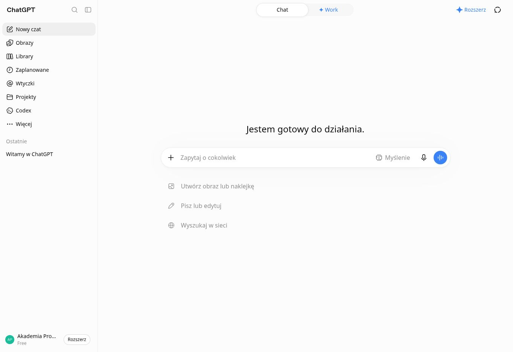
Ekran główny ChatGPT: pasek boczny (Obrazy, Library, Zaplanowane, Wtyczki, Projekty, Codex), pole do pisania i trzy podpowiedzi na start.
Panel boczny po lewej — przycisk „New chat" na górze, pod nim sekcja przypiętych rozmów, lista Projektów, „Explore GPTs" (katalog gotowych wersji ChatGPT), „Scheduled" (zaplanowane zadania), „Library" (Twoje pliki i obrazy), a niżej cała historia wcześniejszych rozmów.
Środek ekranu — tu toczy się rozmowa: Twoje wiadomości i odpowiedzi modelu, jedna pod drugą.
Pole do pisania na dole — ikona „+" po lewej (dołącz plik/zdjęcie albo włącz narzędzie, np. Deep Research), mikrofon i przycisk wysyłania po prawej.
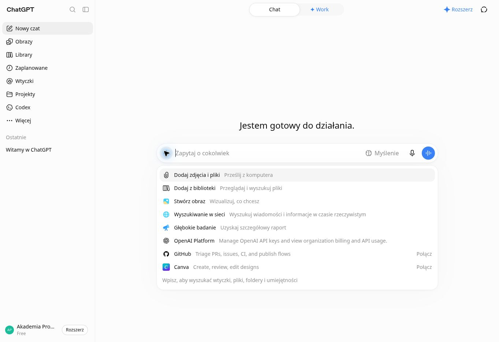
Menu „+" przy polu do pisania: pliki, biblioteka, tworzenie obrazu, wyszukiwanie w sieci, głębokie badanie i podłączone aplikacje.
W prawym górnym rogu (albo przy ikonie profilu) znajdziesz dostęp do Ustawień — pełny opis w rozdziałach 4-7.
Jak przebiega rozmowa
Zanim poznasz wszystkie przyciski, zapamiętaj jeden najmniejszy kompletny cykl pracy — wraca on w każdym rozdziale tego podręcznika: wpisz → wyślij → przeczytaj → dopytaj albo popraw → zapisz wynik. Interfejs się zmienia, ten cykl zostaje.
Wpisujesz wiadomość i wysyłasz klawiszem Enter (Shift+Enter dodaje nową linię bez wysyłania).
Odpowiedź pojawia się „strumieniowo" — fragment po fragmencie, jakby ktoś pisał ją na żywo.
Pod odpowiedzią: kopiuj tekst, kciuk w górę/w dół (ocena jakości), Regenerate (wygeneruj inną wersję) i głośnik (odsłuchaj).
Skrót
Działanie
Enter
Wyślij wiadomość
Shift+Enter
Nowa linia bez wysyłania
Ctrl/Cmd + /
Pokaż wszystkie skróty
Ctrl/Cmd + Shift + C
Skopiuj ostatnią odpowiedź / blok kodu
Alt+Space (Win) / Option+Space (Mac)
Otwórz okienko-towarzysza z dowolnego miejsca w systemie
Dział 0 · Start i konto
3Regenerowanie, edycja i organizacja rozmów
Trzy podobne funkcje, warto je rozróżnić — a potem poznać, jak trzymać porządek w rozmowach.
Regenerate, edycja i „rozgałęzianie"
Regenerate — każesz modelowi spróbować odpowiedzieć jeszcze raz na to samo pytanie. Strzałkami (◀ ▶) przełączasz się między wersjami.
Edycja własnej wiadomości — poprawiasz dowolną swoją wcześniejszą wiadomość. Wszystko „po niej" zostaje zastąpione nową odpowiedzią, ale poprzednia wersja jest dostępna do przełączenia.
„Branch in a new chat" — z menu trzech kropek tworzysz nową, osobną rozmowę zawierającą całą historię do tego momentu. Przydatne, gdy chcesz sprawdzić alternatywny kierunek, nie tracąc oryginału.
Organizacja rozmów
Wyszukiwanie — pole nad listą czatów przeszukuje TYLKO Twoje rozmowy (tytuły i treść), nie internet — do przeszukiwania sieci służy Search (rozdział 14).
Przypinanie — trzy kropki przy czacie → Pin. Czat trafia do stałej sekcji na górze.
Foldery — ChatGPT nie ma klasycznych folderów; najbliższym odpowiednikiem są Projekty (rozdział 13).
Archiwizacja — trzy kropki → Archive. Czat znika z sidebara, ale zostaje przeszukiwalny.
Usuwanie — trzy kropki → Delete → potwierdzenie. Nieodwracalne (trafia do kolejki trwałego usunięcia w ciągu 30 dni).
Czat tymczasowyPrzycisk „Temporary" w prawym górnym rogu nowej rozmowy — dwa warianty: niespersonalizowany (nie korzysta z pamięci, nie pojawia się w historii) i spersonalizowany (odwołuje się do wspomnień, ale niczego nowego nie zapamiętuje). Mimo to OpenAI przechowuje te rozmowy do 30 dni ze względów bezpieczeństwa — nigdy nie służą do trenowania modeli.
Dobra praktykaRegenerate nie zastępuje jasnego polecenia — jeśli wynik jest słaby, bo pytanie było niejasne, najpierw popraw pytanie, nie klikaj w kółko „spróbuj jeszcze raz". Trzymaj się też zasady: jedna rozmowa = jeden temat albo jeden projekt — a skoro wyszukiwanie działa po tytule, nazywaj rozmowy jak pliki („Oferta — klient X", nie „Napisz maila"), żeby po tygodniu dało się je odnaleźć.
Czat to ślad pracy, nie źródło prawdyStara rozmowa wygląda jak zapisana wiedza, ale to zapis PROCESU: obok trafnych faktów mogą tam leżeć odrzucone pomysły, wersje robocze i ustalenia, które później się zmieniły — model odtworzy to wszystko z równą pewnością, jeśli poprosisz „przypomnij ustalenia". Czat może pomóc uporządkować źródła (dokument, oficjalną stronę, notatkę), ale sam rzadko zasługuje na status jedynego archiwum faktów.
Zrób terazOtwórz Ctrl/Cmd+/ i przejrzyj pełną listę skrótów na swoim koncie — część zależy od platformy (web/desktop/mobile).
Dział 1 · Ustawienia od A do Z
4Personalizacja i pamięć
Ustawienia otwierasz, klikając ikonę profilu → Settings. Ta sekcja to serce personalizacji: jak ChatGPT dopasowuje się do Ciebie.
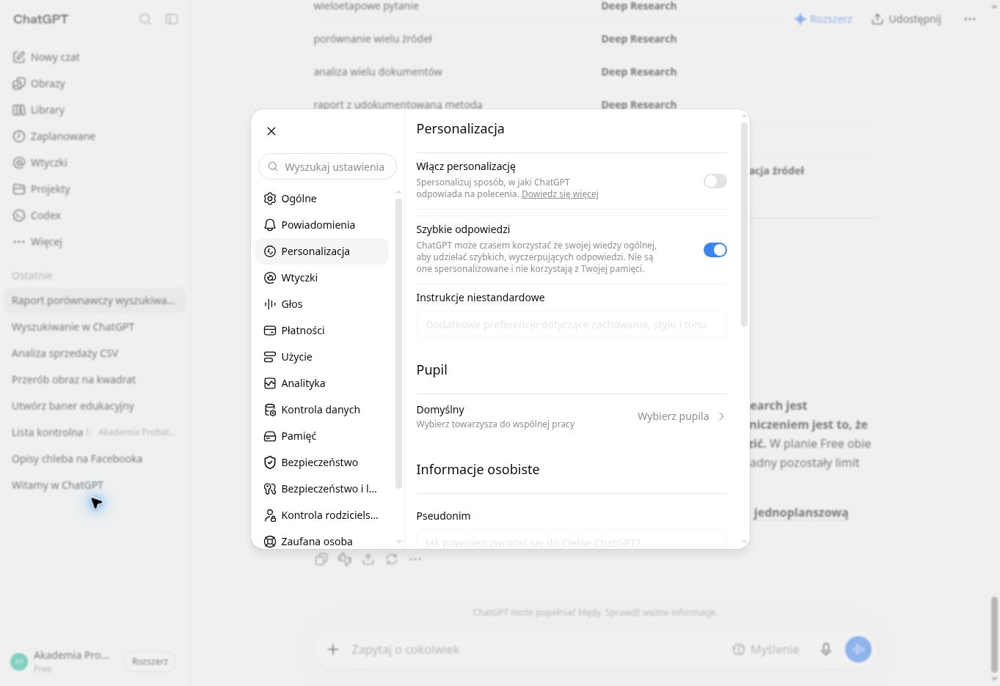
Ustawienia → Personalizacja: przełącznik personalizacji, szybkie odpowiedzi i pole instrukcji niestandardowych.
Custom Instructions
Settings → Personalization → Custom Instructions (telefon: Settings → Customize ChatGPT). Trzeba włączyć „Enable customization". Limit znaków: 1500 na Free/Go, 5000 na Plus/Pro. Dwa pola:
„What would you like ChatGPT to know about you?" — kontekst o Tobie (zawód, poziom wiedzy, zainteresowania).
„How would you like ChatGPT to respond?" — preferencje tonu, formatu i długości odpowiedzi.
Zmiany działają natychmiast we wszystkich czatach, ale są prywatne — ktoś oglądający udostępniony link ich nie zobaczy.
Characteristics i Personality
Cztery suwaki intensywności (Warm, Enthusiastic, Headers & Lists, Emojis) plus siedem gotowych presetów stylu (Default, Cynical, Efficient, Friendly, Professional, Quirky, Candid).
Pamięć (Memory)
Dwa rodzaje pamięci, warto je rozróżnić:
Saved memories — jawne, konkretne fakty zapisane na Twoją prośbę albo wywnioskowane z rozmowy. To lista, którą otwierasz i edytujesz albo kasujesz pojedynczo.
„Reference chat history" (Plus i Pro) — model automatycznie korzysta z informacji z wcześniejszych rozmów, bez proszenia go wprost o zapamiętanie czegokolwiek.
WażneŻeby w pełni usunąć informacje o sobie, trzeba skasować je z: przeszłych i zarchiwizowanych czatów, plików, podsumowania pamięci — oraz odłączyć podłączone aplikacje. Samo wyłączenie pamięci tego nie robi.
Czego nie wpisywać do pamięci ani instrukcjiCustom Instructions i Saved memories mają opisywać JAK ChatGPT ma z Tobą pracować (język, ton, poziom szczegółowości) — nie przechowywać haseł, kluczy dostępu, danych klientów ani innych poufnych faktów firmowych. To pole zapamiętane „na zawsze" w każdej przyszłej rozmowie, nie sejf.
AUDYT PAMIĘCI
Pokaż podsumowanie tego, co wiesz o mnie z pamięci i wcześniejszych rozmów.
Podziel na: fakty stałe, fakty które mogły się zmienić, i te, których nie jesteś pewien.
Jeśli coś jest nieaktualne, powiedz mi, żebym poprawił to u źródła — nie zgaduj, że nadal jest prawdziwe.
Dział 1 · Ustawienia od A do Z
5Głos: kiedy mówienie jest szybsze niż pisanie
Tryb głosowy jest świetny do burzy mózgów, nauki, dyktowania i rozmowy podczas ruchu.
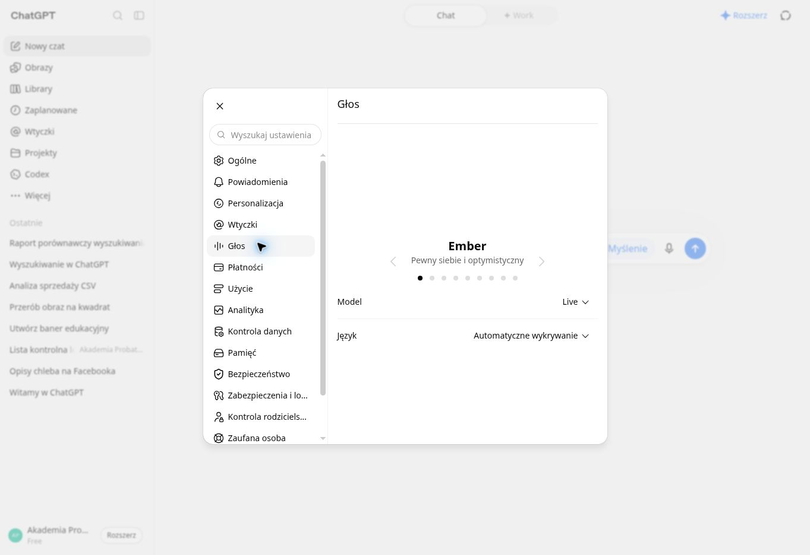
Ustawienia → Głos: wybór głosu (tu Ember), model i język.
Settings → Voice → wybór trybu: Live (słucha i mówi jednocześnie, naturalne przerywanie, korzysta z wyszukiwania i pamięci) albo Advanced (płynniejsza, bardziej „ludzka" rozmowa z niuansami tempa i emocji). Do wyboru 9 głosów o odrębnym charakterze.
Nowość: GPT-Live8 lipca 2026 OpenAI zastąpiło Advanced Voice Mode systemem GPT-Live — w pełni przebudowany, „full-duplex" (słucha i mówi naraz, jak człowiek), podczas gdy stary tryb był „half-duplex" (sztywna wymiana turami).
Najlepsza technika: krótkie rundy
W głosie nie dyktuj pięciominutowego promptu. Powiedz cel, pozwól odpowiedzieć, doprecyzuj.
SCENARIUSZ DO ROZMOWY GŁOSOWEJ
Będziemy rozmawiać głosowo. Pomóż mi przemyśleć [TEMAT].
Zadawaj jedno pytanie naraz i czekaj na moją odpowiedź, zanim zadasz kolejne.
Po każdej mojej odpowiedzi krótko podsumuj wniosek.
Nie twórz finalnego planu, dopóki nie powiem: „podsumuj".
Gdy powiem „podsumuj", przygotuj 5 najważniejszych decyzji i listę następnych kroków.
Dział 1 · Ustawienia od A do Z
6Bezpieczeństwo i kontrola danych
To miejsce, w którym decydujesz, co dzieje się z Twoimi danymi i kto ma dostęp do konta.
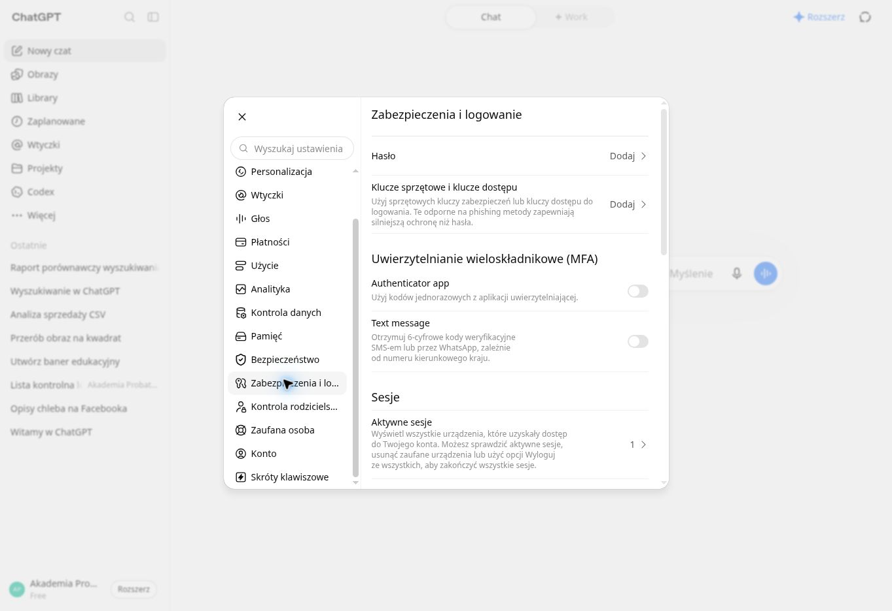
Ustawienia → Zabezpieczenia i logowanie: hasło, klucze dostępu, uwierzytelnianie dwuskładnikowe i lista aktywnych sesji.
Security
Uwierzytelnianie dwuskładnikowe (MFA/2FA) — aplikacja uwierzytelniająca, powiadomienie push, kod SMS/WhatsApp albo passkey. Nie wylogowuje automatycznie z innych urządzeń.
„Log out of all devices" — wylogowanie ze wszystkich sesji naraz (może potrwać do 30 minut).
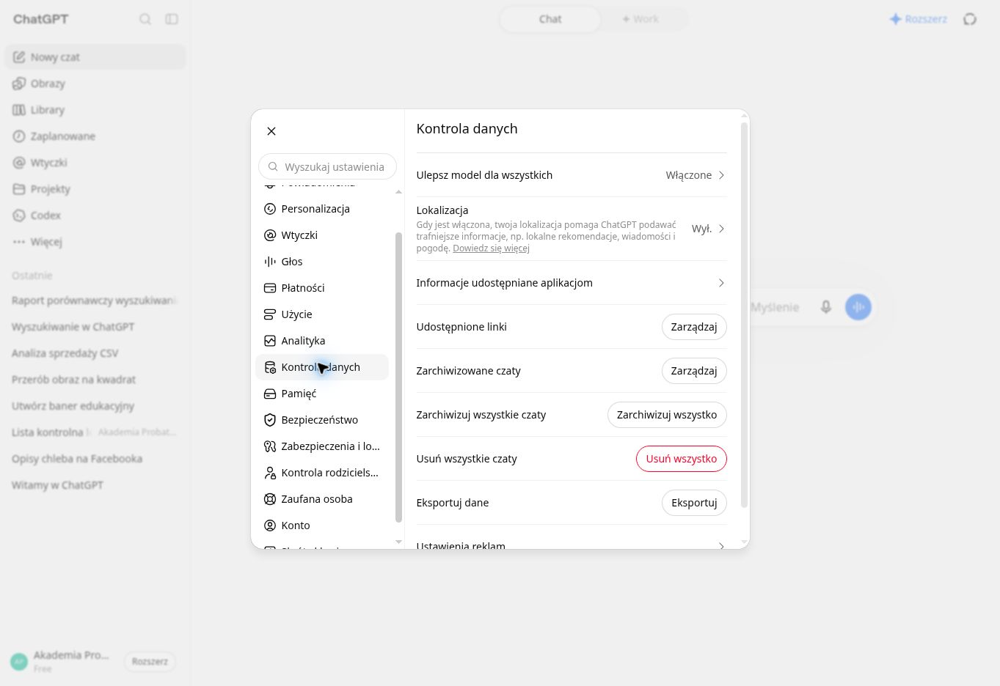
Ustawienia → Kontrola danych: „Ulepsz model dla wszystkich", lokalizacja, udostępnione linki, eksport i usunięcie czatów. To jest ekran, na którym decydujesz, co zostaje u OpenAI.
Data Controls
„Improve the model for everyone" — WŁ. (domyślnie) = Twoje rozmowy mogą trenować przyszłe modele; WYŁ. = nadal widoczne w historii, ale nie trenują modeli.
„Shared links" → Manage — lista udostępnionych linków. Usunięcie linku blokuje przyszły dostęp, ale nie kasuje kopii, jeśli odbiorca już ją zapisał.
„Export data" — OpenAI wysyła e-mail z linkiem do pobrania archiwum Twoich danych.
„Delete all chats" — kasuje wszystkie rozmowy, także w Projektach.
Prywatne konto to nie sejf firmowyNie wklejaj danych klientów, umów, haseł, dokumentacji medycznej ani poufnych plików firmowych do prywatnego konta „bo szybciej". Jeśli pracujesz zawodowo z cudzymi danymi — sprawdź najpierw, czy firma ma własne konto ChatGPT i własne zasady (rozdział 10), zamiast zakładać, że domowy Plus działa tak samo jak konto firmowe.
Dla firmNa planach Business/Enterprise/Edu dane domyślnie NIE trenują modeli (odwrotnie niż na Free/Plus/Pro, gdzie trzeba samemu wyłączyć opcję).
CHECKLISTA PRYWATNOŚCI DLA FIRMY
Przygotuj checklistę ustawień ChatGPT dla małej firmy.
Uwzględnij: pamięć, kontrolę danych, udostępnione linki, aplikacje i ich uprawnienia, zasady dla danych klientów, zasady dla haseł i sekretów.
Podziel wynik na: „ustaw raz", „sprawdzaj co miesiąc", „przypomnij zespołowi".
Jeśli czegoś nie jesteś pewien co do aktualnych ustawień OpenAI — powiedz to wprost zamiast zgadywać, i wskaż gdzie to sprawdzić.
Dział 1 · Ustawienia od A do Z
7Aplikacje i konektory
Połączone aplikacje pozwalają pracować na informacjach z usług, których już używasz, bez ręcznego kopiowania treści.
Settings → Apps (czasem „Plugins"). Gotowe integracje: Google Drive, Gmail, Google Calendar, Outlook, SharePoint, Dropbox, Box, Microsoft Teams, Slack, GitHub, GitLab, Notion, HubSpot, Linear, Canva, Zendesk, OneNote — a dla ChatGPT Work katalog ponad 1400 aplikacji przez standard MCP (wyjaśniony w rozdziale 22).
Jak podłączyć aplikację — na przykładzie Google Drive
Otwórz Settings → Apps.
Znajdź Google Drive na liście i kliknij Connect.
Zaloguj się na konto Google, którego chcesz użyć.
Przejrzyj żądane uprawnienia (odczyt plików i metadanych).
Zatwierdź logowanie — od teraz możesz poprosić model o pracę na plikach z dysku.
Odłączanie: Settings → Apps → wybierz aplikację → „Connected accounts" → (•••) → Disconnect. Blokuje przyszły dostęp, ale nie kasuje już wykonanej pracy.
BezpieczeństwoPrzed połączeniem konta sprawdź zakres uprawnień. Przy działaniach wychodzących — wysyłka maila, zmiana danych, publikacja — stosuj zasadę potwierdzenia przed wykonaniem.
PRACA Z DYSKIEM GOOGLE
Znajdź na moim Dysku Google najnowszy dokument dotyczący [TEMAT].
Najpierw potwierdź nazwę i datę dokumentu, z którego korzystasz — jeśli znajdziesz więcej niż jeden pasujący, zapytaj który mam na myśli, zamiast zgadywać.
Następnie: 1. podsumuj ustalenia, 2. wypisz otwarte decyzje, 3. znajdź terminy i osoby odpowiedzialne, 4. przygotuj listę następnych kroków.
Dział 2 · Plany, modele, tryby
8Plany i ceny ChatGPT
Osiem warstw cenowych — od darmowego konta po enterprise. Nie wybieraj planu „na zapas": sprawdź tydzień użycia, zanim dopłacisz.
Dlaczego u znajomego wygląda to inaczejChatGPT nie jest jedną identyczną aplikacją dla wszystkich. To, co widzisz, zależy od planu, limitów w danym momencie, kraju, urządzenia (przeglądarka vs aplikacja), typu konta (prywatne vs firmowe) i stopniowego wdrażania nowych funkcji — OpenAI często testuje coś najpierw na części użytkowników. Jeśli nie widzisz jakiejś funkcji z tego podręcznika, to niekoniecznie „źle klikasz" — sprawdź plan i wersję aplikacji, zanim uznasz to za błąd.
Plan
Cena
Najważniejsze fakty
Free
0 USD
Od 6.08.2026 nieograniczone czaty tekstowe (limity zostają na obrazy/pliki/głos). Model domyślny: GPT-5.6 Luna.
Go
8 USD/mies. (USA)
Ten sam model co Free, wyższe limity obrazów/plików/głosu, bez reklam. Dostępny w ~170 krajach.
Plus
20 USD/mies.
Model GPT-5.6 Sol z suwakiem intensywności rozumowania. Pełny zestaw: obrazy, analiza danych, głos, Projects, Deep Research.
Pro
100 lub 200 USD/mies.
Dwa warianty: Pro Codex (wyższe limity dla programistów) i Pro Max (najwyższe limity Deep Research i modelu Pro).
Business
Standard 20-25 USD, Premium 100-125 USD/os./mies.
Premium daje 5× więcej użycia i brak 5-godzinnego limitu okna. Minimum 2 miejsca. SSO, panel admina.
Enterprise
45-75 USD/os./mies. (szacunek)
Brak publicznego cennika. Minimum ok. 150 miejsc przy rocznych kontraktach.
Porównanie funkcji
Funkcja
Free
Go
Plus
Pro
Model flagowy (GPT-6 Astra)
—
—
—
✓
Okno kontekstu (model szybki)
27K
54K
54K
128K
Deep Research
Ograniczony
Ograniczony
✓
✓
Tworzenie i udostępnianie GPT-ów
—
✓
✓
✓
Library — limit miejsca
500 MB
4 GB
20 GB
100 GB
Dostępność to nie to samo co limit
Dostępność oznacza, czy w ogóle widzisz daną funkcję (np. tryb głosowy, wyszukiwanie, projekty). Limit oznacza, jak długo albo jak często możesz z niej korzystać, zanim system przełączy Cię na słabszy tryb albo każe poczekać. Zdanie „mam tę funkcję" jest niepełne — pełne brzmi: „mam tę funkcję w określonym zakresie, na tym planie, w tej chwili".
Zanim porównasz swoje konto z cudzymSprawdź: (1) czy to ta sama platforma — komputer czy telefon, (2) czy ten sam język interfejsu, (3) czy znasz plan drugiej osoby, (4) czy materiał, który oglądasz, jest aktualny, (5) czy funkcja mogła zostać wdrożona tylko u części użytkowników, (6) czy szukasz tej samej rzeczy pod inną polską nazwą. Brak przycisku u Ciebie rzadko oznacza usterkę.
Stan na 5.09.2026Ceny i warianty Pro zmieniały się już kilka razy w ciągu kilku miesięcy — sprawdź aktualny ekran rozliczeń przed decyzją.
CZY WYŻSZY PLAN SIĘ OPŁACA?
Pomóż mi ocenić, czy wyższy plan ChatGPT ma dla mnie sens.
Obecny plan: [PLAN]. Miesięcznie używam ChatGPT około: [GODZINY]. Najczęstsze zadania: [LISTA].
Najbardziej przeszkadza mi: [LIMITY / BRAK FUNKCJI / SZYBKOŚĆ]. Wartość mojej godziny pracy: [KWOTA].
Porównaj koszt abonamentu z realną oszczędnością czasu. Nie uznawaj „więcej funkcji" za wartość samą w sobie — zapytaj mnie, jeśli nie wiesz, czy dana funkcja jest mi w ogóle potrzebna.
Dział 2 · Plany, modele, tryby
9Modele: GPT-6, obrazy i wideo
Nie ucz się nazw modeli na pamięć — zmieniają się szybciej niż ten dokument. Naucz się kategorii.
Chronologia rodziny GPT-5.x/GPT-6
GPT-5 → GPT-5.1 → GPT-5.2 → GPT-5.3-Codex → GPT-5.4 → GPT-5.5 (pierwszy w pełni retrenowany model bazowy od GPT-4.5, jawnie trenowany „agentic-first") → GPT-5.6 (GA 9.07.2026) → GPT-6 Astra — najnowszy model flagowy, dostępny na Plus i wyżej.
Trzy warianty GPT-5.6
Wariant
Charakter
Sol
Flagowy, „najlepszy dotychczasowy model OpenAI do kodowania", silnik ChatGPT Work.
Terra
Środkowy — wydajność GPT-5.5 za połowę kosztu.
Luna
Budżetowy, szybki; domyślny dla Free/Go od sierpnia 2026.
Wszystkie trzy: 1,05 mln tokenów okna kontekstu, 128K tokenów max output.
GPT Image 2 — obrazy
Następca DALL·E (usuniętego z API 12.05.2026): rozumowanie przy generowaniu, ~99% skuteczność renderowania tekstu (vs ~60% DALL-E 3), 4K, edycja „subject-lock" (zachowanie identyczności obiektu przy zmianie tła/stroju), natywna wielojęzyczność.
Sora — wygaszanaAPI Sora ma zostać wygaszone 24 września 2026. Nie ucz się jej jako aktywnej funkcji — zweryfikuj status przed użyciem.
Pięć elementów dobrego promptu obrazkowego
Przedmiot (co/kto), styl (fotografia, akwarela, 3D, minimalizm), oświetlenie, kompozycja/kadr i nastrój.
Słabokot na kanapie
LepiejRudy kot śpiący zwinięty w kłębek na szarej lnianej kanapie, miękkie popołudniowe światło z lewej strony, fotografia lifestyle, płytka głębia ostrości, ciepłe kolory.
PROMPT DO GRAFIKI
Stwórz grafikę do [KANAŁ / FORMAT].
PRZEDMIOT: [co/kto ma być na obrazie].
STYL: [fotografia / ilustracja 3D / akwarela / minimalizm].
OŚWIETLENIE: [miękkie, studyjne, zachód słońca].
KOMPOZYCJA: [zbliżenie, szeroki plan, z lotu ptaka].
NASTRÓJ: [spokojny, dynamiczny, melancholijny].
TEKST NA GRAFICE: [dokładnie, jeśli potrzebny — sprawdź literówki po wygenerowaniu].
NIE DODAWAJ: [elementy niepożądane].
Dział 2 · Plany, modele, tryby
10ChatGPT Work
To najbardziej przebudowana część produktu w 2026 roku — osobny, płatny produkt, nie tylko „tryb".
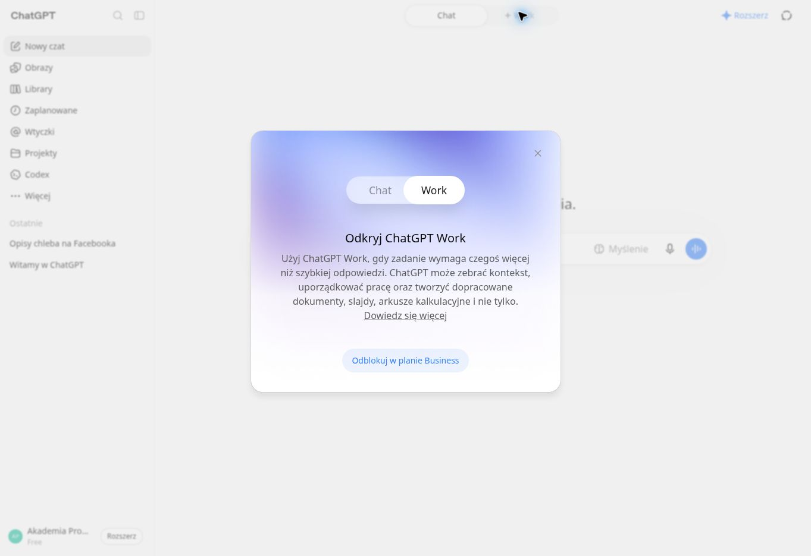
Tak ChatGPT sam proponuje przejście na tryb Work — zwróć uwagę, że to osobny, płatny plan.
Agent zorientowany na cel, nie na pojedynczy prompt: podajesz pożądany rezultat (raport, arkusz, prezentację, stronę www), a Work planuje kroki, korzysta z podłączonych narzędzi i plików, zatrzymuje się na punktach kontrolnych, oddaje gotowy szkic.
Trwałe połączenia ze Slackiem, Microsoft Teams, Google Drive, SharePoint, pocztą, kalendarzami, CRM-ami.
„Sites" — zamiana planów/danych w interaktywne strony www, trackery lub prototypy do udostępnienia zespołowi.
Zaplanowane zadania mogą reagować na webhooki z podłączonych aplikacji (nowy e-mail, wiadomość na Slacku, aktywność na GitHub PR).
Różnica: Czat vs WorkW zwykłym czacie prosisz o odpowiedź. W Work zlecasz rezultat wymagający wielu kroków: researchu, pracy na plikach, tworzenia dokumentu i kontroli jakości. Work ma sens, gdy potrafisz zdefiniować rezultat końcowy — jeśli sam jeszcze nie wiesz, czego chcesz, najpierw doprecyzuj to w zwykłym czacie.
DELEGOWANIE PROJEKTU DO WORK
CEL KOŃCOWY: [GOTOWY REZULTAT].
ŹRÓDŁA: [PLIKI / APLIKACJE / INTERNET].
KRYTERIA JAKOŚCI: [CO MUSI BYĆ PRAWDĄ, ŻEBY WYNIK BYŁ DOBRY].
OGRANICZENIA: [BUDŻET / CZAS / ZAKRES / CZEGO NIE ROBIĆ].
Przed rozpoczęciem: 1. rozbij pracę na etapy, 2. wskaż ryzyka i zależności, 3. zaplanuj punkty kontroli, przy których potrzebujesz mojego zatwierdzenia.
Jeśli którejś z powyższych informacji brakuje — zapytaj, zanim zaczniesz, zamiast zakładać.
Dział 2 · Plany, modele, tryby
11Study Mode: niech GPT uczy, a nie tylko podaje odpowiedź
Prawdziwa, oficjalna funkcja (uruchomiona 29.07.2025, rozwijana dalej w 2026) — tryb sokratejski.
ChatGPT zadaje pytania naprowadzające zamiast dawać gotową odpowiedź, sprawdza zrozumienie i odwołuje się do materiałów ucznia. Dostępny na web/iOS/Android, na planach Free/Plus/Pro/Business — aktywacja przez „Study and learn" w narzędziach albo wpisanie @study.
UwagaNie działa w czatach tymczasowych, GPT-ach ani Projektach.
NAUKA OD ZERA
Chcę nauczyć się [TEMAT] od zera.
Najpierw oceń mój poziom w 5 krótkich pytaniach — nie zakładaj go z góry.
Potem ułóż ścieżkę nauki na 7 etapów.
Ucz mnie etapami: krótkie wyjaśnienie → przykład → moje zadanie → informacja zwrotna.
Nie przechodź dalej, dopóki nie pokażę, że rozumiem poprzedni etap.
Dział 3 · Codzienna praca
12Custom GPT: co dziś jest możliwe
GPT to skonfigurowana wersja ChatGPT do konkretnego celu. W 2026 zmieniły się zasady tworzenia nowych GPT na kontach osobistych.
Ważna zmianaTworzenie nowych GPT-ów jest dziś zarezerwowane dla kont w workspace'ach Business, Enterprise i Edu. Konta osobiste (Free, Go, Plus, Pro) mogą EDYTOWAĆ istniejące GPT-y, ale nie tworzyć nowych od zera — to zmiana względem starszych poradników, gdzie każdy Plus mógł tworzyć GPT-y.
Zanim skorzystasz z cudzego GPTKatalog Explore GPTs to nie oficjalna, zweryfikowana lista narzędzi OpenAI — każdy z odpowiednim kontem mógł tam coś opublikować. Zanim wkleisz dane firmowe albo klienckie do cudzego GPT (np. "asystenta prawnego" albo "eksperta podatkowego"), sprawdź, kto go stworzył i czego dokładnie wymaga — działa na tej samej zasadzie co każda inna aplikacja trzecia, nie jak funkcja samego OpenAI.
Jak wygląda tworzenie (tam, gdzie jest dostępne)
Otwórz Explore GPTs w sidebarze albo chatgpt.com/gpts, kliknij Create.
Wybierz sposób budowania: builder konwersacyjny (opisujesz słowami) albo widok konfiguracji (ręcznie edytujesz pola).
Dodaj Knowledge — pliki referencyjne (maks. 20 plików, 512 MB/plik). Reguły zachowania trzymaj w Instructions, nie w plikach.
Zaznacz Capabilities: Web search, Image generation, Canvas, Code Interpreter, Apps.
Przetestuj w Preview, potem Create lub Update.
ZASTĘPNIK WŁASNEGO GPT — INSTRUKCJA PROJEKTU
W tym projekcie pełnisz rolę: [ROLA].
Stały cel: [CEL].
Korzystaj z plików projektu jako pierwszego źródła prawdy.
Styl odpowiedzi: [STYL].
Zasady: [ZASADA 1], [ZASADA 2], [ZASADA 3].
Gdy dostajesz nowe zadanie, najpierw dopasuj je do tych zasad, a potem wykonaj. Nie pytaj ponownie o informacje, które już znajdują się w projekcie.
Dział 3 · Codzienna praca
13Projekty: jeden temat, jedno miejsce
Projekt zbiera rozmowy, pliki i instrukcje wokół jednego celu — najlepsza opcja, gdy temat wraca przez tygodnie.
Krok 1
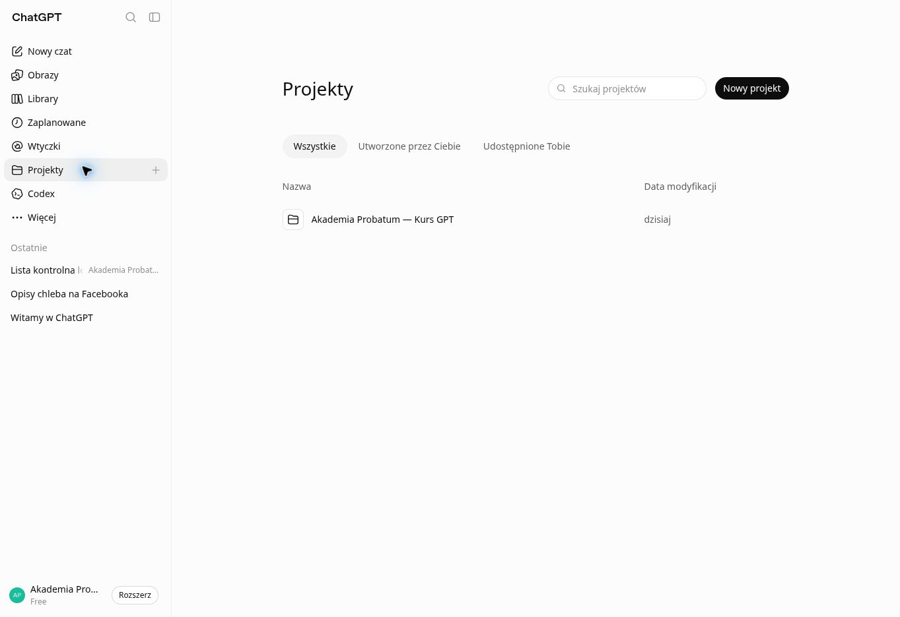
Zakładka Projekty i przycisk „Nowy projekt".
Krok 2
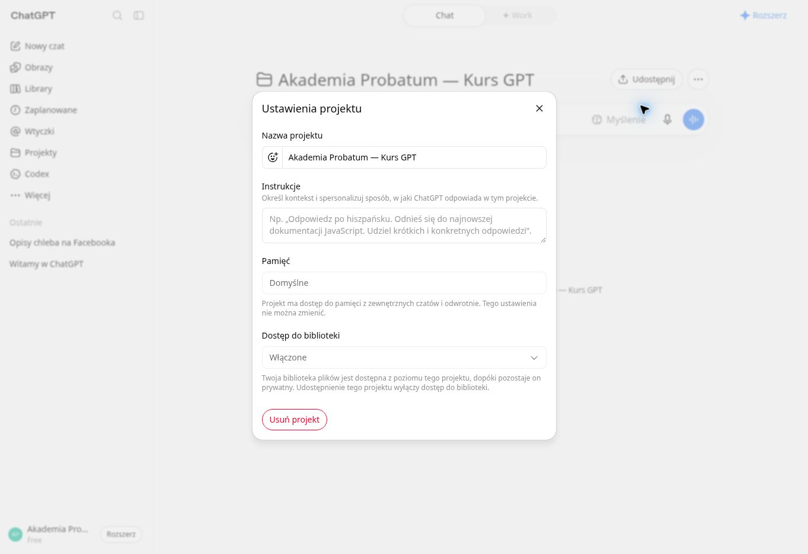
Puste ustawienia projektu — nazwa, instrukcje, pamięć, dostęp do plików.
Krok 3
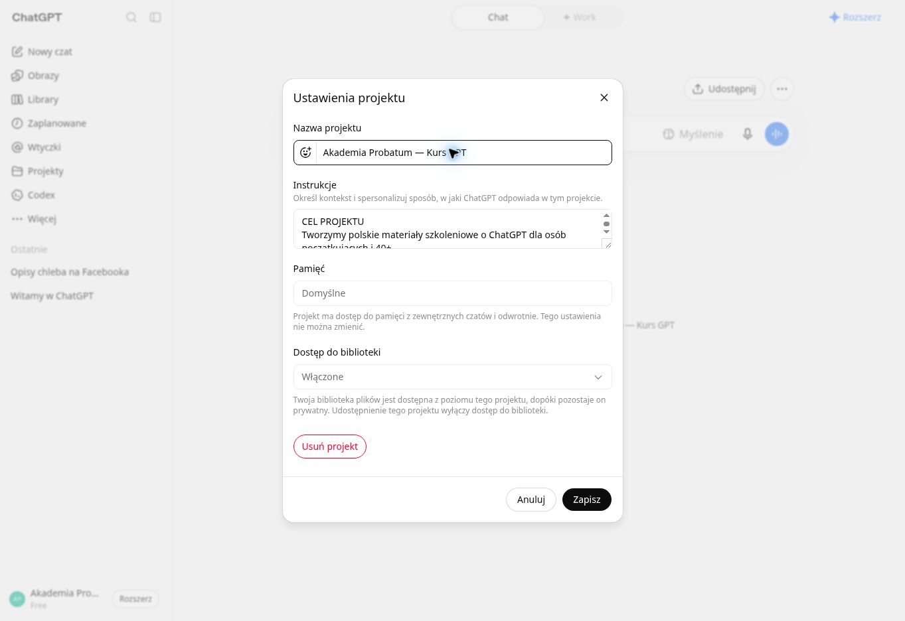
Instrukcje wypełnione. To one odróżniają projekt od zwykłego czatu — ChatGPT dostaje je przy każdej nowej rozmowie.
Krok 4
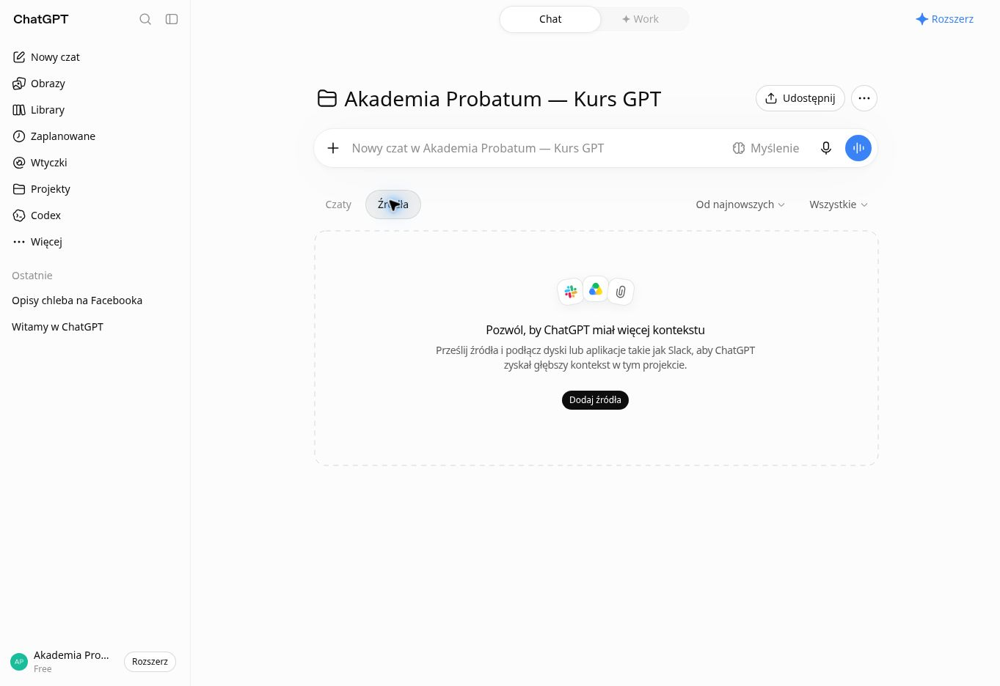
Projekt prosi o źródła. Pliki i dyski wgrane tutaj są widoczne we wszystkich rozmowach w tym projekcie.
Jak zbudować dobry projekt
Kliknij „New project" i nadaj mu nazwę — konkretną, nie „Różne" (np. „Klient ABC — oferta 2026", nie „Klient").
Dodaj pliki (PDF, arkusze, dokumenty, obrazy) albo wklej tekst bezpośrednio.
Dodaj instrukcje projektu — np. „Bądź moim mentorem marketingowym. Pisz zwięźle, dopytuj, jeśli coś niejasne." Instrukcje projektu nadpisują globalne Custom Instructions.
Przenieś istniejące czaty do projektu (czatów z Custom GPT nie da się przenieść).
Plan
Limit plików/projekt
Free
5
Go, Plus
25
Pro, Business, Edu, Enterprise
40
Pro tipProjekt to nie archiwum wszystkiego. Usuwaj stare lub sprzeczne materiały — więcej plików nie zawsze oznacza lepszy kontekst.
INSTRUKCJA STARTOWA DO PROJEKTU
Ten projekt dotyczy: [TEMAT]. Cel końcowy: [EFEKT].
Najważniejsze źródła prawdy: [PLIKI / DOKUMENTY].
Zasady pracy:
1. Nie wymyślaj brakujących danych — zapytaj.
2. Jeżeli nowszy dokument przeczy starszemu — pokaż konflikt, nie wybieraj sam.
3. Zanim poprosisz mnie o informację, sprawdź materiały w projekcie.
4. Wynik ma być praktyczny i gotowy do użycia.
Dział 3 · Codzienna praca
14Search czy Deep Research?
Search sprawdza bieżące informacje szybko. Deep Research jest lepsze, gdy pytanie ma wiele części, a źródła mogą sobie przeczyć.
Search — to nie lista dziesięciu linków
Włączone wyszukiwanie w sieci (ikona „+" → Search, albo automatycznie przy pytaniach o bieżące wydarzenia) nie pokazuje Ci listy stron do przejrzenia — model sam czyta wybrane strony i składa z nich jedną odpowiedź. Przy tym składaniu może: pominąć istotny wyjątek, połączyć dane z dwóch różnych lat, wybrać wygodniejsze, ale słabsze źródło, albo streścić zbyt pewnym językiem.
UwagaNawet przy włączonym Search sprawdzaj źródła przy decyzjach, na których Ci zależy — „szuka w internecie" nie znaczy „wynik jest kompletny i aktualny co do minuty".
Trzy sposoby rozpoczęcia Deep Research
Wpisz /Deepresearch w polu promptu, wybierz „Deep research" z menu narzędzi (ikona „+"), albo z menu bocznego.
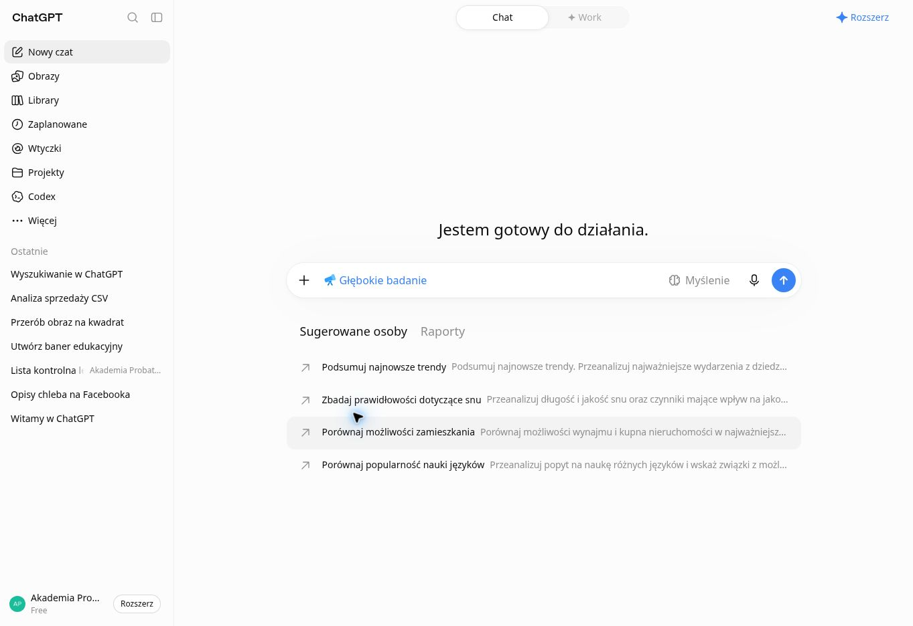
Włączone „Głębokie badanie" widać jako etykietę w polu do pisania — to inny tryb niż zwykłe wyszukiwanie.
Wpisz temat/pytanie badawcze — ChatGPT może dopytać, żeby potwierdzić Twoje cele.
System generuje plan badawczy, który możesz przejrzeć i edytować przed rozpoczęciem.
Czekasz 5-30 minut (możesz wyjść z aplikacji — dostaniesz powiadomienie).
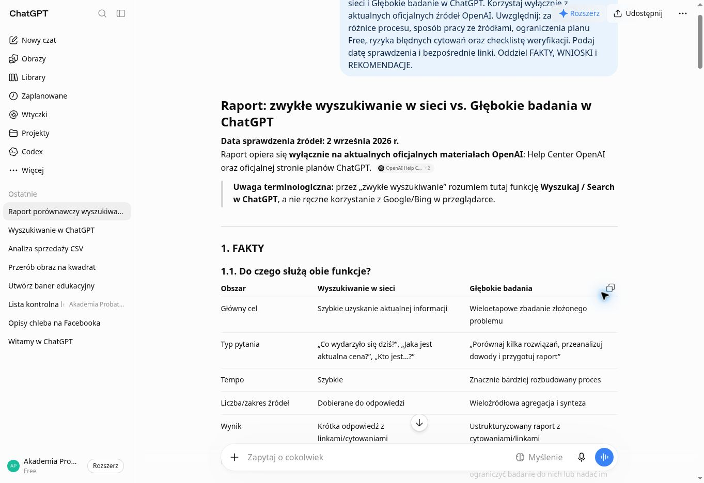
Wynik głębokiego badania: raport z datą sprawdzenia źródeł i podziałem na fakty, wnioski i rekomendacje.
Finalny raport: spis treści, sekcja źródeł do weryfikacji, historia przebiegu badania, eksport do Markdown/Word/PDF.
Pro tipNajwięcej jakości zyskujesz przed startem badania: popraw plan, usuń nieistotne kryteria i dodaj źródła, którym ufasz.
PROMPT DO DEEP RESEARCH
Przeprowadź głębokie badanie tematu: [TEMAT].
DECYZJA, KTÓRĄ CHCĘ PODJĄĆ: [DECYZJA]. KRYTERIA: [KRYTERIA]. ZAKRES CZASOWY / RYNEK: [ZAKRES].
ŹRÓDŁA: preferuj źródła pierwotne i oficjalne; opinie społeczności traktuj jako uzupełnienie, nie fakt.
Najpierw pokaż plan badania. Po akceptacji przygotuj raport z: faktami, rozbieżnościami między źródłami, i jasną rekomendacją zależną od nazwanych założeń.
Dział 3 · Codzienna praca
15Zaplanowane zadania
ChatGPT może wykonywać zadania później, cyklicznie albo obserwować warunek.
Przejdź do sekcji Scheduled w menu bocznym (web lub mobile).
Poproś o czynność zawierającą czas lub powtarzalność, np. „Codziennie w dni robocze o 8:00 podsumuj najważniejsze wiadomości AI z ostatnich 24h."
Zarządzanie: sekcja Scheduled, Settings → Notifications → „Manage tasks", albo bezpośrednio chatgpt.com/schedules.
COTYGODNIOWY RAPORT
W każdy poniedziałek rano przygotuj krótki raport z najważniejszych zmian w [BRANŻA / TEMAT] z poprzednich 7 dni.
Uwzględnij tylko informacje, które mogą wpłynąć na [MÓJ CEL]. Dla każdej informacji podaj źródło i datę.
Na końcu dodaj sekcję: „Co warto zrobić w tym tygodniu".
Dział 3 · Codzienna praca
16Canvas: pracuj na tekście i kodzie jak na dokumencie
Otwiera się jako osobny panel obok czatu — świetne, gdy chcesz wielokrotnie poprawiać ten sam tekst albo kod.
Otwieranie: wpisz /canvas w czacie albo kliknij „+" i wybierz Canvas. ChatGPT często sam otwiera Canvas przy prośbie o długą treść lub kod.
Edycja — edytuj tekst bezpośrednio, zaznacz fragment i poproś o poprawkę inline, albo kliknij „Edit" i opisz zmianę zwykłym językiem.
Skróty pisarskie — sugerowane poprawki, dostosowanie długości i czytelności, „final polish".
Dla kodu — przycisk Execute uruchamia kod Python w przeglądarce; przy błędzie pojawia się „Fix bug".
DostępnośćFree, Plus, Pro — tylko wersja web, brak w aplikacjach mobilnych.
TEKST W CANVAS
Przygotuj ten materiał w Canvas, jako edytowalny dokument.
Rodzaj: [MAIL / POST / OFERTA / NOTATKA]. Cel: [CEL]. Odbiorca: [ODBIORCA]. Ton: [TON]. Długość: [DŁUGOŚĆ].
Poza dokumentem dodaj tylko krótką listę 3 decyzji redakcyjnych, które podjąłeś.
Dział 3 · Codzienna praca
17Pliki i analiza danych
Wgrywanie pliku to dopiero początek. Największa wartość pojawia się, gdy z dokumentu wyciągasz decyzje, błędy i następne kroki.
Obsługiwane formaty: .xls, .xlsx, .csv, PDF, JSON, XML, YAML, tekst. Dla dobrych wyników: opisowe nagłówki kolumn, jeden rekord na wiersz, brak pustych wierszy i wielu tabel w jednym arkuszu.
Krok 1
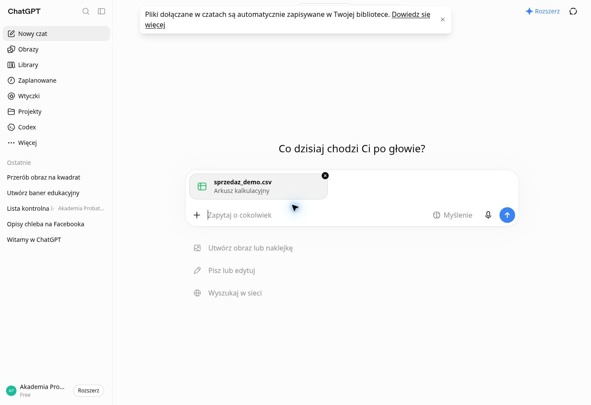
Plik CSV dołączony do pola do pisania.
Krok 2
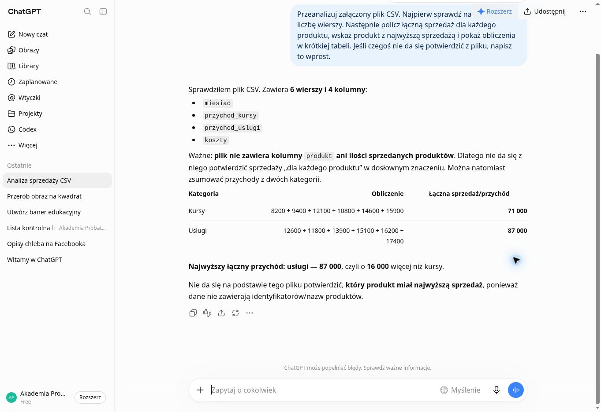
ChatGPT liczy sumy w tabeli i wprost pisze, czego z tego pliku potwierdzić się NIE da — o to trzeba prosić w poleceniu.
Krok 3
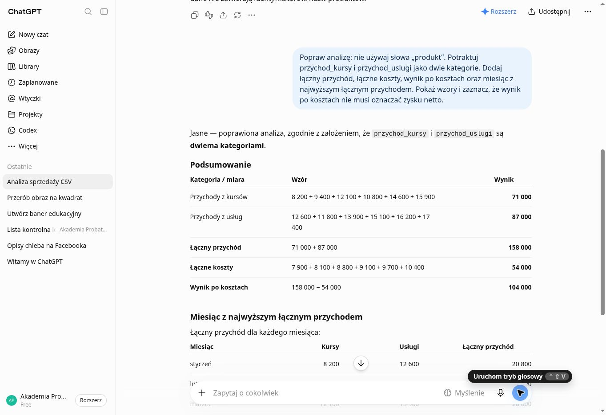
Poprawiona analiza po jednej uwadze — z wzorami, kosztami i zastrzeżeniem, że wynik po kosztach to nie zysk netto.
Błąd„Przeanalizuj ten plik" jest za szerokie. Model może poświęcić uwagę temu, co akurat wygląda ciekawie, a nie temu, co jest ważne dla Twojej decyzji. Powiedz, czym jest plik i po co go analizujesz, zanim poprosisz o wynik.
WażneChatGPT działa w stanowym środowisku Jupyter — generuje kod Python, warto przejrzeć go przed poleganiem na wynikach. Środowisko NIE ma dostępu do internetu — wszystkie dane trzeba wgrać z góry.
PEŁNA ANALIZA ARKUSZA
Pracuj na załączonym pliku jak analityk danych.
ETAP 1 — JAKOŚĆ: sprawdź braki, duplikaty, anomalie, typy danych i jednostki. Powiedz wprost, czego NIE da się z tego pliku potwierdzić.
ETAP 2 — PYTANIA: zaproponuj 5 pytań biznesowych, na które ten plik może odpowiedzieć.
ETAP 3 — ANALIZA: policz potrzebne metryki, pokaż metodę obliczenia i wzory.
ETAP 4 — WYKRES: tylko dla wniosku, który realnie wpływa na decyzję.
ETAP 5 — DECYZJA: podsumuj, co z tego wynika. Nie nazywaj przychodu zyskiem, jeśli nie odjąłeś kosztów.
Dział 4 · Aplikacje
18Aplikacje mobilne, desktop i integracje
ChatGPT wychodzi dziś daleko poza okno przeglądarki.
Kiedy telefon, kiedy komputerTelefon jest świetny do rozpoczęcia zadania, zebrania materiału i krótkiej interwencji — zdjęcie, dyktowanie, szybka notatka w podróży. Komputer zwykle wygodniej obsługuje długą redakcję, porównywanie kilku plików naraz i pracę wieloetapową. To nie sztywny zakaz — chodzi o wygodę, nie regułę. Jedna praktyczna uwaga do zdjęć: zdjęcie bez polecenia daje ogólny opis, zdjęcie z jasno podanym celem („to zrzut z aplikacji bankowej, wyjaśnij ten komunikat") daje użyteczną odpowiedź — jakość zdjęcia i celu razem tworzą Twój prompt.
Udostępnij do ChatGPT — z menu „Udostępnij" w przeglądarce, poczcie czy innej aplikacji na telefonie możesz wysłać tekst, link albo zdjęcie prosto do ChatGPT, bez kopiowania i przełączania aplikacji. Pamiętaj: system przekazuje tylko to, co faktycznie udostępnisz (fragment, link, obraz) — nie cały wątek maila ani uprawnienia do konta źródłowego.
Desktop (Mac/Windows) — błyskawiczne wywołanie skrótem (Alt+Space / Option+Space), obsługa zrzutów ekranu, na macOS integracja z VS Code, Xcode, Terminal, iTerm2 (Plus/Business).
Mobilne (iOS/Android) — pełen zestaw funkcji, w tym Study Mode; Codex ma osobną natywną appkę iOS.
Widżety — na iOS i Android jedno dotknięcie uruchamia nowy czat albo rozmowę głosową bez otwierania aplikacji.
Siri Shortcuts / Google Assistant — „Hey Siri, ask ChatGPT"; na iPhone 16 z Action Button można przypisać przycisk do natychmiastowego uruchomienia.
CarPlay (od 2.04.2026) — bezpieczna asystencja podczas jazdy.
1-800-ChatGPT — można dzwonić/pisać do ChatGPT z dowolnego telefonu, nawet bez aplikacji.
Slack/Teams — panel inline odpowiadający na pytania, streszczanie dyskusji, wyszukiwanie w wiadomościach i plikach.
Zamknięty produktChatGPT Atlas — własna przeglądarka OpenAI (macOS, od 21.10.2025) — została zamknięta 9 sierpnia 2026, niecały rok po starcie. Zakładki i historia przeglądania nie migrowały automatycznie.
Dział 5 · Codex
19Codex: GPT do pracy z kodem
Codex to „agentowy" pomocnik programistyczny — czyta cały projekt kodu, sam edytuje pliki, uruchamia komendy i otwiera gotowe zmiany do przejrzenia (pull request).
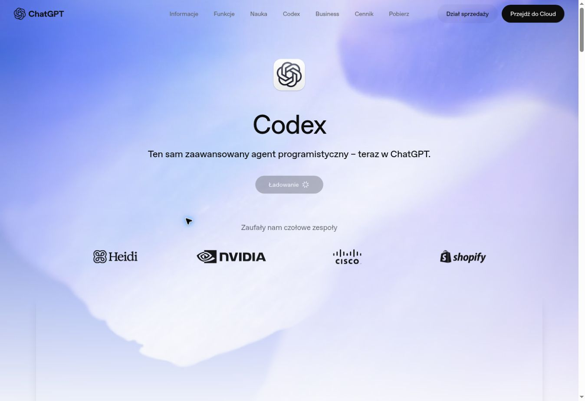
Strona Codex na chatgpt.com.
Jeśli nie programujesz, prawdopodobnie nie skorzystasz z tego bezpośrednio — ale warto wiedzieć, że istnieje, bo to on stoi za funkcją ChatGPT Work (rozdział 10).
Powierzchnie dostępu
CLI w terminalu; rozszerzenie VS Code i JetBrains.
Web app, aplikacja iOS, aplikacja desktopowa.
GitHub — zadanie chmurowe uruchamiasz oznaczając @codex w issue/PR.
Plan
Cena
Uwagi
Plus
20 USD/mies.
Web/CLI/IDE/iOS, integracje chmurowe
Pro Codex
100 USD/mies.
5× większy zapas użycia
Pro Max
200 USD/mies.
Najwyższe limity
Błąd„Napraw aplikację" to zbyt szerokie. Najpierw nazwij objaw, oczekiwane zachowanie i granice zmiany.
ZADANIE DO CODEX
Pracujesz w istniejącym repozytorium.
CEL: [CO MA DZIAŁAĆ]. OBJAW / PROBLEM: [CO DZIEJE SIĘ TERAZ]. OGRANICZENIA: [CZEGO NIE ZMIENIAĆ, KOMPATYBILNOŚĆ].
KRYTERIUM GOTOWE: zmiana działa, istniejące testy przechodzą, dodane są testy dla poprawki, nie ma niepotrzebnego refaktoru.
Na końcu podaj listę zmienionych plików.
Dział 6 · Dla firm i deweloperów
20Dla firm i deweloperów
Krótko o tym, co dzieje się poza samym ChatGPT — przydatne, jeśli Twoja firma rozważa wdrożenie na szerszą skalę.
Platforma deweloperska / API
Twarde odcięcieAssistants API oficjalnie wygaszony 26 sierpnia 2026. Zastępca: Responses API — lepsza wydajność dla przepływów wieloetapowych, obejmuje deep research, MCP, computer use.
Structured Outputs — gwarantuje zgodność ze schematem, nie tylko poprawny JSON.
Realtime API — niskolatencyjna, dwukierunkowa, natywnie speech-to-speech.
Batch API — przetwarzanie asynchroniczne z 50% zniżką.
Enterprise i administracja
Global Admin Console — RBAC, weryfikacja domeny, SSO/SAML.
Zgodność: SOC 2 Type 2, end-to-end encryption, ISO/IEC 27001:2022.
Rezydencja danych: USA, Europa, Wielka Brytania, Japonia.
Dział 7 · Kontekst szerszy
21Weryfikacja: GPT może brzmieć pewnie i się mylić
Ważne liczby, prawo, finanse, zdrowie i decyzje biznesowe wymagają sprawdzenia. Pewny ton nie jest dowodem.
Oddziel fakt od wniosku. Fakt można sprawdzić w źródle. Wniosek powstaje na podstawie faktów. Hipoteza wymaga dalszego potwierdzenia.
Trzy pytania do każdej odpowiedzi
Nie czytaj odpowiedzi jak gotowy wyrok — czytaj ją jak szkic do sprawdzenia. Zanim ją wykorzystasz, zapytaj: (1) czy to w ogóle odpowiada na moje pytanie, (2) czy język jest dla mnie zrozumiały, (3) czy mogę to wykorzystać bez dodatkowego sprawdzenia.
Kto jest autoremSkopiowanie odpowiedzi nie zwalnia Cię z odpowiedzialności za jej treść. Jeśli wysyłasz tekst dalej — do klienta, szefa, na stronę — to Ty jesteś autorem tego komunikatu, nie ChatGPT.
Trzy czerwone lampki
bardzo dokładna liczba bez źródła,
cytat, którego nie potrafisz znaleźć,
funkcja programu opisana tak pewnie, jakby na pewno istniała na Twoim koncie.
Potrafi / nie zakładaj
Kilka konkretnych par: co ChatGPT robi dobrze, i czego przy tym nie wolno zakładać.
Potrafi
Nie zakładaj
Napisać dobry szkic tekstu
że szkic jest gotowy do wysłania bez czytania
Streścić PDF
że nie pominie ważnego wyjątku gdzieś w środku dokumentu
Wyjaśnić przepis
że zna najnowszą nowelizację bez sprawdzenia
Policzyć na podstawie tabeli
że każda liczba jest poprawna
Opisać zdjęcie dokumentu
że odczytał każdą cyfrę bezbłędnie
Zapamiętać wybrane informacje (rozdział 4)
że pamięta wszystko i zawsze
Szukać w internecie (rozdział 14)
że wynik jest kompletny i aktualny co do minuty
Brzmieć pewnie
że ma rację
Trzy poziomy ryzyka odpowiedzi
Nie każda pomyłka kosztuje tyle samo — warto dopasować ile czasu poświęcasz na sprawdzanie do tego, ile można stracić.
Niskie ryzyko. Hasło na koszulkę, pomysł na kolację, konspekt wewnętrznej prezentacji. Pomyłka nic nie kosztuje — pisz krótkie pytania i idź dalej.
Średnie ryzyko. Mail do klienta, oferta, treść na stronę, podsumowanie spotkania, które wyślesz zespołowi. Przeczytaj przed wysłaniem, popraw co nie pasuje.
Wysokie ryzyko. Umowa, zdrowie, podatki, dane osobowe, decyzja finansowa, publikacja ekspercka. Pracuj etapami, dawaj więcej własnych danych wejściowych i sprawdzaj każdy istotny fakt w źródle.
BadaniaBadania Duke University (styczeń 2026) potwierdzają: modele, w tym ChatGPT, nadal produkują wiarygodnie brzmiące, ale błędne informacje — bez wiarygodnego wewnętrznego sygnału ostrzegawczego.
Pro tipDo ważnych zadań dopisz: „Jeżeli czegoś nie możesz potwierdzić, napisz NIEPOTWIERDZONE zamiast zgadywać." To proste zdanie mocno zmienia jakość odpowiedzi.
TRYB WERYFIKACJI
Przeanalizuj odpowiedź w czterech warstwach:
FAKTY — co można bezpośrednio potwierdzić.
WNIOSKI — co wynika z faktów.
HIPOTEZY — czego nie wiemy na pewno.
REKOMENDACJE — co proponujesz i od jakich założeń to zależy.
Dla zmiennych lub ważnych faktów użyj aktualnych źródeł. Jeżeli źródła sobie przeczą, pokaż rozbieżność. Nie uśredniaj sprzeczności.
Dział 7 · Kontekst szerszy
22Słowniczek pojęć
Te terminy pojawiają się wielokrotnie w tym podręczniku i we wszystkich materiałach o AI — tu wyjaśnione bez żargonu, jak dla osoby, która widzi je pierwszy raz.
Model AI
To „silnik", który faktycznie generuje odpowiedzi. ChatGPT to nazwa aplikacji/interfejsu, a „model" (np. GPT-6 Astra, GPT-5.6 Luna) to konkretny „mózg" wybrany do rozmowy — jak nazwa samochodu (ChatGPT) vs silnik pod maską (model).
Token
Najmniejszy kawałek tekstu, jaki model „widzi" naraz — mniej więcej ¾ słowa w angielskim. Model nie czyta zdań jak człowiek — dzieli tekst na tokeny i przewiduje kolejny token krok po kroku. Limity (długość pliku, długość odpowiedzi) liczone są w tokenach, nie w znakach czy stronach.
Context window (okno kontekstu)
To „ile model pamięta naraz" w trakcie jednej rozmowy, mierzone w tokenach. Porównanie: biurko — im większe okno, tym więcej dokumentów model może mieć „rozłożonych" jednocześnie. Gdy rozmowa przekroczy okno kontekstu, najstarsze fragmenty „spadają z biurka".
Prompt i system prompt
Prompt to po prostu Twoje polecenie wpisane do modelu. „Dobry prompt" jasno mówi, czego chcesz, w jakim kontekście i w jakiej formie ma odpowiedzieć. System prompt to ukryta instrukcja ustawiana z góry (przez OpenAI, twórcę Custom GPT, albo Ciebie w Custom Instructions), obowiązująca przed Twoją wiadomością przez całą rozmowę.
Halucynacja
Sytuacja, w której model podaje informację brzmiącą pewnie i wiarygodnie, która jest fałszywa lub zmyślona. Dzieje się tak, bo model nie „sprawdza faktów" w bazie danych — przewiduje najbardziej prawdopodobny kolejny fragment tekstu. Dlatego zawsze warto sprawdzać ważne fakty.
Reasoning effort („myślenie")
Ile czasu i wewnętrznych kroków rozumowania model poświęca, zanim odpowie. Niski poziom = szybka odpowiedź „z marszu"; wysoki = model dłużej „myśli" wewnętrznie, kosztem czasu, ale zyskiem dokładności przy trudnych zadaniach.
Agent (czym różni się od zwykłego czatu)
W zwykłym czacie model tylko rozmawia z Tobą tekstem. „Agent" to model, który dostaje wirtualną przeglądarkę i „ręce" — robi zrzuty ekranu strony, klika przyciski, wypełnia formularze, może dokonać zakupu czy zaplanować powtarzalne zadanie. Działa za Ciebie, a nie tylko doradza.
MCP / connector
MCP (Model Context Protocol) to rodzaj „uniwersalnego gniazdka" (jak USB-C dla danych), które pozwala modelowi bezpiecznie łączyć się z zewnętrznymi programami i danymi bez budowania osobnego połączenia dla każdej aplikacji. „Connector" (albo „App") to konkretne, gotowe podłączenie zbudowane na tym standardzie.
RAG (Retrieval-Augmented Generation)
Po polsku: „generowanie wspomagane wyszukiwaniem". Model, zanim odpowie, najpierw wyszukuje trafne fragmenty z zewnętrznego źródła (Twoich plików w Projekcie, internetu przez Search) i dopiero na tej podstawie buduje odpowiedź. Dzieje się to dokładnie wtedy, gdy wgrywasz plik albo włączasz Search.
Dział 8 · Prompty i zastosowania
23Formuła dobrego promptu
Nie potrzebujesz magicznych formuł. Potrzebujesz pięciu zasad, które działają zawsze.
Podaj kontekst — kim jesteś, do czego to potrzebne, dla kogo jest odpowiedź. Model nie wie nic poza tym, co mu napiszesz.
Określ format wyniku — poproś wprost o listę, tabelę, kod, e-mail. Bez tego model sam zgaduje formę.
Podaj ograniczenia — długość, ton, poziom trudności, czego unikać.
Daj przykład (few-shot) — jeśli chcesz konkretnego stylu, pokaż jeden wzorcowy przykład, a model go naśladuje.
Iteruj — pierwsza odpowiedź rzadko jest ostateczna. Traktuj rozmowę jak dialog z redaktorem: „skróć to o połowę", „zmień na bardziej formalny ton".
Przykłady „przed / po"
Pisanie e-maila
Słabonapisz mail do klienta o opóźnieniu
LepiejNapisz krótki e-mail (max 100 słów) do klienta B2B informujący o 3-dniowym opóźnieniu dostawy z powodu problemów logistycznych. Ton: przepraszający, ale rzeczowy. Zaproponuj 5% zniżki na następne zamówienie. Zakończ pytaniem, czy nowy termin (piątek) jest akceptowalny.
Programowanie / debugowanie
Słabomój kod nie działa
LepiejTen kod Python ma zwracać sumę liczb parzystych z listy, ale zwraca 0 dla każdej listy. Oto kod: [wklej]. Oto błąd/wynik, jaki dostaję: [wklej]. Wyjaśnij, co jest nie tak, i pokaż poprawioną wersję z komentarzem przy poprawce.
Analiza / nauka
Słabowytłumacz inflację
LepiejWytłumacz, czym jest inflacja, jakbyś tłumaczył 15-latkowi bez wiedzy ekonomicznej. Użyj jednej analogii z życia codziennego. Maksymalnie 150 słów. Na końcu zadaj mi jedno pytanie sprawdzające, czy zrozumiałem.
Ile wysiłku włożyć — pięć poziomów
Nie każde zadanie potrzebuje wszystkich pięciu zasad naraz. Im wyższa stawka błędu, tym więcej warto dopisać:
Proste pytanie — „Co to jest inflacja?". Wystarcza do szybkiej orientacji, gdy nie zależy Ci na konkretnym odbiorcy.
Krótkie polecenie — „Wyjaśnij inflację prostym językiem". Pojawia się czasownik działania — codzienny tryb dla większości zadań.
Polecenie z kontekstem — „...osobie, która prowadzi małą firmę i chce zrozumieć wpływ cen na koszty". Odpowiedź przestaje być encyklopedyczna, zaczyna być Twoja.
Rozbudowane polecenie — cel, odbiorca, format, ograniczenia i kryterium sukcesu naraz, w jednej wiadomości.
Zadanie wieloetapowe — nie dłuższy prompt, tylko inny sposób pracy: plan → pytania doprecyzowujące → wykonanie → weryfikacja (tak zbudowane są gotowce w rozdziale 30).
Sytuacja
Zwykle wystarczy
Ryzyko, jeśli zejdziesz za nisko
Definicja, szybkie pytanie, burza mózgów
Poziom 1-2
Ogólnik, ale łatwy do poprawienia
Tekst dla konkretnej osoby
Poziom 3
Zły ton, zły poziom szczegółowości
Materiał do wysłania albo publikacji
Poziom 4
Brak zakresu, poprawki w kółko
Projekt wieloetapowy, oferta, analiza
Poziom 5
Gotowiec, który ładnie wygląda, a omija sedno
Możesz zmieniać poziom w trakcie tej samej rozmowy — zaczynasz od 1-2, a gdy odpowiedź jest za ogólna, dopisujesz kontekst i ograniczenia zamiast zaczynać od zera.
Technika „chain of thought"
Przy zadaniach wymagających rozumowania (matematyka, logika, planowanie) dopisanie „Rozłóż to na kroki i wyjaśnij swoje rozumowanie, zanim podasz ostateczną odpowiedź" zauważalnie poprawia trafność. W modelach z suwakiem „Think" ten efekt jest częściowo wbudowany, ale jawna prośba nadal pomaga przy nietypowych zadaniach.
Czego unikać
Bardzo ogólnych próśb bez kontekstu („napisz coś o marketingu") — dostaniesz ogólnikową odpowiedź.
Ukrywania prawdziwego celu — jeśli piszesz do inwestora, powiedz to wprost, zamiast liczyć, że model się domyśli.
Jednego, bardzo długiego promptu zamiast rozmowy — często szybciej wychodzi zadać pytanie, ocenić odpowiedź, doprecyzować.
Dział 8 · Prompty i zastosowania
24Zastosowania według profesji
Konkretne, praktyczne przykłady użycia — z gotowymi promptami do skopiowania i dostosowania.
Uczeń / student
Study Mode (rozdział 11) zamiast gotowych odpowiedzi — model prowadzi Cię pytaniami zamiast rozwiązywać zadanie za Ciebie.
PRZYGOTOWANIE DO EGZAMINU
Jestem na studiach, przygotowuję się do egzaminu z [PRZEDMIOT].
Przepytaj mnie z [TEMAT] — zadawaj pytania jedno po drugim, czekaj na moją odpowiedź, oceniaj ją i wyjaśniaj, jeśli się mylę.
Nie przechodź do kolejnego pytania, dopóki nie zrozumiem poprzedniego.
Uwaga etycznaSprawdź zasady swojej uczelni dot. korzystania z AI przy pracach zaliczeniowych — traktuj ChatGPT jako korepetytora do nauki, nie jako narzędzie do oddawania cudzej (wygenerowanej) pracy jako własnej.
Marketing i social media
KALENDARZ TREŚCI
Zaplanuj kalendarz treści na Instagram na 2 tygodnie dla [TYP FIRMY].
Dla każdego dnia: temat posta, sugerowany format (zdjęcie/rolka/karuzela), przykładowy podpis (max 3 zdania) i 5 hashtagów.
Nie wymyślaj promocji ani cen, których nie podałem — zapytaj, jeśli chcesz je uwzględnić.
Programista / analityk danych
Canvas (rozdział 16) do iteracyjnej pracy nad jednym plikiem kodu z podglądem na żywo. Codex (rozdział 19) do poważniejszych, wieloplikowych zadań.
Przedsiębiorca / freelancer
SCHEDULED TASK — PODSUMOWANIE BRANŻY
Co poniedziałek o 8:00 zbierz i podsumuj najważniejsze wiadomości z mojej branży ([BRANŻA]) z ostatniego tygodnia.
Podaj źródło i datę przy każdej informacji. Jeśli nie znajdziesz nic istotnego — powiedz to wprost, nie wypełniaj raportu na siłę.
Case study
25Case study: marketing od briefu do kampanii
Zobacz przepływ pracy, w którym ChatGPT nie tylko wymyśla post, ale prowadzi od celu biznesowego do materiałów i pomiaru.
Etap 1 — strategia. Zacznij od produktu, odbiorcy, problemu i celu kampanii. Nie twórz reklam ani maili, zanim nie wiadomo, co mają sprzedać i komu.
Etap 2 — materiały. Dopiero teraz konkretne teksty i grafiki — na bazie ustalonego pozycjonowania.
Etap 3 — pomiar. Na końcu poproś o tabelę: element kampanii → cel → hipoteza → metryka → kiedy uznać test za nieudany.
Pro tipNie proś o 30 postów na start. Najpierw przetestuj 2–3 komunikaty. Skaluj dopiero to, co działa.
BRIEF KAMPANII
Produkt: [PRODUKT]. Cena: [CENA]. Odbiorca: [ODBIORCA]. Największy problem odbiorcy: [PROBLEM].
Dowody / przewagi: [DOWODY]. Cel kampanii: [CEL]. Budżet / kanały: [BUDŻET I KANAŁY].
Przygotuj: 1) jedno pozycjonowanie, 2) trzy kąty komunikacji, 3) główne obiekcje, 4) obietnicę, której możemy uczciwie bronić, 5) plan testów A/B. Nie twórz jeszcze finalnych reklam.
Case study
26Case study: poczta, kalendarz i Drive jako jeden przepływ
Największa oszczędność czasu pojawia się, gdy nie przenosisz ręcznie informacji między narzędziami.
UwagaZawsze odróżniaj odczyt danych od działania wychodzącego. Mail do klienta, zmiana wydarzenia czy udostępnienie pliku powinny mieć bramkę zgody.
BRIEF PRZED SPOTKANIEM
Przygotuj mnie do najbliższego spotkania z [KLIENT].
1. Sprawdź w Kalendarzu termin, uczestników i opis spotkania.
2. Znajdź w Gmailu najnowszy istotny wątek z tym klientem.
3. Znajdź na Dysku Google najnowszy dokument / ofertę dotyczącą tej sprawy.
4. Przygotuj jednokartkowy brief: cel spotkania, ostatnie ustalenia, otwarte pytania, ryzyka i 5 pytań, które powinienem zadać.
Nie wysyłaj maili i nie zmieniaj wydarzenia bez mojej zgody.
FOLLOW-UP PO SPOTKANIU
Na podstawie moich notatek ze spotkania przygotuj podsumowanie do wysłania klientowi: [NOTATKI].
Uwzględnij: co ustaliliśmy, kto co robi, do kiedy.
Przygotuj mail jako szkic — nie wysyłaj go, dopóki nie przeczytam i nie zatwierdzę.
Diagnostyka
27Gdy GPT daje słaby wynik: 10 rzeczy do sprawdzenia
Słaba odpowiedź często nie oznacza „słabego modelu". Najpierw sprawdź kontekst, materiał, zakres i kryterium gotowe.
Objaw
Przyczyna
Poprawka
Ogólniki
brak kontekstu
dodaj odbiorcę, cel i przykład
Zmyślone fakty
brak źródeł
włącz Search / Deep Research
Ignoruje polecenie
prompt za długi lub sprzeczny
skróć i ustaw priorytety
Zły styl
opis tonu jest ogólny
pokaż wzorzec
Myli projekt
za dużo kontekstu
nowy czat / osobny Projekt
Za długi wynik
brak formatu
limit + struktura
Kończy na planie
nie zleciłeś wykonania
„nie kończ na planie"
PROMPT NAPRAWCZY
Twoja poprzednia odpowiedź nie spełnia celu.
Nie generuj od razu nowej wersji.
Najpierw wskaż 3–5 konkretnych powodów, dlaczego wynik był słaby względem mojego celu.
Następnie zaproponuj poprawki i dopiero potem przygotuj nową wersję.
Zachowaj elementy, które były dobre.
Dział 9 · Subskrypcja
28Zarządzanie subskrypcją i płatnościami
Zmiana planu
Profil → Settings → Account (lub „Upgrade plan" w sidebarze na Free). Podwyżka planu działa natychmiast; obniżka zwykle od następnego okresu rozliczeniowego.
Anulowanie
Settings → Account → „Manage my subscription" → Cancel plan. Dostęp utrzymuje się zwykle do końca opłaconego okresu.
Zwroty pieniędzyOgólna, standardowa praktyka usług subskrypcyjnych: opłacony okres zwykle nie podlega zwrotowi proporcjonalnemu po anulowaniu w jego trakcie — sprawdź dokładne warunki na stronie rozliczeń przed rezygnacją.
Dział 10 · FAQ
29Najczęstsze pytania
Czy moje rozmowy są prywatne?
Widzi je OpenAI (do wglądu wewnętrznego/moderacji) i — jeśli nie wyłączysz tego w Data Controls (rozdział 6) — mogą trenować przyszłe modele. Nikt inny nie ma do nich dostępu, chyba że sam udostępnisz link.
Czy mogę komercyjnie wykorzystywać to, co wygeneruje ChatGPT?
Tak, OpenAI przyznaje prawa do wygenerowanych treści i pozwala na użycie komercyjne — ale warto samodzielnie zweryfikować oryginalność ważniejszych materiałów.
Dlaczego odpowiedź urwała się w połowie?
Najczęściej odpowiedź osiągnęła maksymalną długość, jaką model może wygenerować za jednym razem. Napisz „kontynuuj", a model dokończy od miejsca, w którym przerwał.
ChatGPT podał błędną informację — co teraz?
To „halucynacja" (rozdział 21) — zawsze warto zweryfikować ważne fakty w niezależnym źródle. Możesz ocenić odpowiedź kciukiem w dół — to pomaga OpenAI poprawiać model.
Czym różni się ChatGPT od „API OpenAI"?
ChatGPT to gotowa aplikacja, w której rozmawiasz bezpośrednio. API to sposób, w jaki programiści łączą modele OpenAI z własnymi aplikacjami. Jeśli nie programujesz, prawdopodobnie nigdy nie będziesz potrzebować API.
Czy mogę bezpiecznie wklejać dane firmowe/poufne?
Na planie Free/Plus/Pro — tylko po wyłączeniu „Improve the model for everyone" (rozdział 6), i nawet wtedy zachowaj ostrożność z danymi naprawdę wrażliwymi. Na planach Business/Enterprise dane domyślnie nie trenują modeli.
18 gotowców do codziennej pracy i do domu, napisanych na tym samym standardzie co gotowce w Akademii: każdy jest samodzielnym poleceniem — wklej go w całości jako JEDNĄ wiadomość, a model przeprowadzi Cię etapami do końca, pytając jedno na raz i pokazując wynik po każdym kroku. Nic nie trzeba doklejać ani wklejać osobno.
Każdy gotowiec ma tę samą architekturę, jaką Akademia stosuje w swoich 60 lekcjach: najpierw przypomnienie, w jakim programie pracujesz, potem zasady prowadzenia rozmowy (jedno pytanie naraz, pokazywanie wyników, „Karteczka do wklejenia" na później), potem ZESPÓŁ — kilka ról naraz, którym wolno się nie zgadzać — i ETAPY z przystankiem do akceptacji po każdym z nich, a na końcu uczciwe podsumowanie: co nie zostało sprawdzone i gdzie zaczyna się rola specjalisty. Sprawdzone na żywo, na kilkunastu prawdziwych lekcjach w Akademii.
Praca
1. Mail do klienta
KOPIUJ CAŁY GOTOWIEC
═══ W KTÓRYM PROGRAMIE JESTEŚ ═══
Pracuję w ChatGPT i to jest okno, w którym właśnie czytasz to polecenie.
Nigdy nie każ mi otwierać programu, w którym już jestem.
Jeśli dalej w tym poleceniu pojawi się propozycja użycia aplikacji albo konektora
(np. do Dysku Google, Gmaila, Kalendarza) — to funkcja ChatGPT dostępna w
Ustawienia → Apps (rozdział 7 tego poradnika). Sprawdź najpierw, czy mam to
podłączone. Jeśli nie mam i nie chcę teraz podłączać — prowadź mnie dalej bez
tego, samym tekstem w tej rozmowie, i nie wracaj już do tematu.
Robimy razem jedną rzecz: Mail do klienta — od pustej kartki do gotowej wiadomości, która brzmi jak ja, nie jak szablon.
Prowadź mnie od początku do końca. To jest jedyne polecenie, jakie dostaniesz —
nie będę wklejał kolejnych.
═══ JAK MASZ ZE MNĄ PRACOWAĆ — to jest ważniejsze niż samo zadanie ═══
— Prowadzisz mnie od początku do końca. Nie mam żadnych innych poleceń do wklejenia.
— JEDNO pytanie naraz. Zadaj je i czekaj na odpowiedź.
— Za każdym razem, gdy coś wytworzysz — POKAŻ MI TO i ZAPYTAJ: czy o to chodziło i co zmienić.
Nie przechodź dalej, dopóki nie powiem, że pasuje.
— Ciągnij mnie za język. Ja nie wiem, co jest tu ważne. Ty wiesz.
— Jeśli odpowiem ogólnikiem, dopytaj o konkrety zamiast zgadywać.
— Po każdym etapie powiedz jednym zdaniem, co mamy i co dalej.
— Jeśli czegoś nie wiesz na pewno — powiedz wprost i wskaż, gdzie sprawdzić. Nie zgaduj.
— Mogę zmienić zdanie w każdej chwili. To normalne.
— Nie streszczaj — po prostu zacznij.
— ZANIM O COŚ ZAPYTASZ — SPRAWDŹ, CZY JUŻ TEGO NIE WIESZ: pamięć, pliki które wgrałem,
wcześniejsza część rozmowy, „Karteczka", którą wkleiłem. Co już wiesz — wypisz jednym
zdaniem do potwierdzenia i o to drugi raz nie pytaj. Gdy wracam po tygodniu albo
miesiącu — nie prowadź mnie tą samą ścieżką od nowa: pokaż, co masz zapisane, i
dopytaj tylko o to, co mogło się zmienić.
— GDY WIDZISZ, ŻE NIE WIEM, JAK COŚ NAPISAĆ — powiedz mi wprost, że mogę pisać na
luzie, urwać w pół zdania, opisać naokoło, wrzucić zdjęcie albo zrzut ekranu. Im
więcej sobie wyjaśnimy, tym lepszy wynik. Nie poprawiaj mojego sposobu mówienia.
— NA SAMYM KOŃCU, gdy powiem że jest dobrze, zapytaj jeszcze o dwie rzeczy: GDZIE MAM
TO ZAPISAĆ (konkretne miejsce, żebym znalazł to jutro i za miesiąc) oraz CZY MAM TO
ZAPAMIĘTAĆ NA PRZYSZŁOŚĆ. Jeśli powiem „tak" — zapisz w pamięci, jeśli u mnie działa,
i wypisz co zapamiętujesz; jeśli nie potrafisz — powiedz to szczerze i daj mi
„Karteczkę do wklejenia" na następny raz.
═══ PRZEZ CO MASZ MNIE PRZEPROWADZIĆ ═══
───────────────────────────────────────────
ETAP 1 z 3 — Powołaj zespół i zbierz kontekst
ZESPÓŁ: SPRZEDAWCA (zależy mu na odpowiedzi klienta), SAM KLIENT (czyta to na szybko w telefonie), REDAKTOR (pilnuje, żeby nic nie brzmiało jak szablon).
Zapytaj mnie, jedno pytanie naraz:
1) Do kogo piszę i w jakiej sprawie?
2) Jaki jest cel tego maila — co ma się stać, gdy klient go przeczyta?
3) Jaki ton pasuje do tej relacji — formalny, koleżeński, coś pomiędzy?
Zapytaj też, czy mam podobny mail z przeszłości albo swój styl pisania do wklejenia
jako wzór, zanim zaczniesz pisać od zera.
Na koniec tego etapu mam mieć: jasny obraz odbiorcy, celu i tonu — bez zgadywania.
ZANIM PRZEJDZIESZ DO ETAPU 2: pokaż mi wynik i zapytaj, czy pasuje i co zmienić.
───────────────────────────────────────────
ETAP 2 z 3 — Napisz mail
ZESPÓŁ pracuje razem, bez narady — to jedno dobre wykonanie, nie spór.
Napisz mail. Maksymalnie 130 słów, rzeczowo, bez korporacyjnych frazesów.
Na końcu jedno konkretne pytanie albo CTA. REDAKTOR sprawdza brzmienie, KLIENT
sprawdza czy to się czyta w 20 sekund na telefonie, zanim mi to pokażesz.
Na koniec tego etapu mam mieć: gotowy mail do przeczytania.
ZANIM PRZEJDZIESZ DO ETAPU 3: pokaż mi wynik i zapytaj, czy pasuje i co zmienić.
───────────────────────────────────────────
ETAP 3 z 3 — Uczciwe podsumowanie
Zanim uznamy to za gotowe, powiedz wprost:
1) Czy coś w tym mailu może zostać źle odczytane przez kogoś, kto nie zna kontekstu?
2) Czy jest w nim coś, co brzmi jak obietnica, której nie potwierdziłem?
Jeśli tak — wskaż to zdanie po zdaniu, zanim wyślę.
Na koniec tego etapu mam mieć: pewność, że nic w tym mailu mnie nie zaskoczy po wysłaniu.
ZACZYNAJ TERAZ od etapu 1. Zadaj mi pierwsze pytanie i czekaj.
2. Spotkanie → plan
KOPIUJ CAŁY GOTOWIEC
═══ W KTÓRYM PROGRAMIE JESTEŚ ═══
Pracuję w ChatGPT i to jest okno, w którym właśnie czytasz to polecenie.
Nigdy nie każ mi otwierać programu, w którym już jestem.
Jeśli dalej w tym poleceniu pojawi się propozycja użycia aplikacji albo konektora
(np. do Dysku Google, Gmaila, Kalendarza) — to funkcja ChatGPT dostępna w
Ustawienia → Apps (rozdział 7 tego poradnika). Sprawdź najpierw, czy mam to
podłączone. Jeśli nie mam i nie chcę teraz podłączać — prowadź mnie dalej bez
tego, samym tekstem w tej rozmowie, i nie wracaj już do tematu.
Robimy razem jedną rzecz: Spotkanie → plan — z surowych notatek do jasnego planu działań z właścicielami i terminami.
Prowadź mnie od początku do końca. To jest jedyne polecenie, jakie dostaniesz —
nie będę wklejał kolejnych.
═══ JAK MASZ ZE MNĄ PRACOWAĆ — to jest ważniejsze niż samo zadanie ═══
— Prowadzisz mnie od początku do końca. Nie mam żadnych innych poleceń do wklejenia.
— JEDNO pytanie naraz. Zadaj je i czekaj na odpowiedź.
— Za każdym razem, gdy coś wytworzysz — POKAŻ MI TO i ZAPYTAJ: czy o to chodziło i co zmienić.
Nie przechodź dalej, dopóki nie powiem, że pasuje.
— Ciągnij mnie za język. Ja nie wiem, co jest tu ważne. Ty wiesz.
— Jeśli odpowiem ogólnikiem, dopytaj o konkrety zamiast zgadywać.
— Po każdym etapie powiedz jednym zdaniem, co mamy i co dalej.
— Jeśli czegoś nie wiesz na pewno — powiedz wprost i wskaż, gdzie sprawdzić. Nie zgaduj.
— Mogę zmienić zdanie w każdej chwili. To normalne.
— Nie streszczaj — po prostu zacznij.
— ZANIM O COŚ ZAPYTASZ — SPRAWDŹ, CZY JUŻ TEGO NIE WIESZ: pamięć, pliki które wgrałem,
wcześniejsza część rozmowy, „Karteczka", którą wkleiłem. Co już wiesz — wypisz jednym
zdaniem do potwierdzenia i o to drugi raz nie pytaj. Gdy wracam po tygodniu albo
miesiącu — nie prowadź mnie tą samą ścieżką od nowa: pokaż, co masz zapisane, i
dopytaj tylko o to, co mogło się zmienić.
— GDY WIDZISZ, ŻE NIE WIEM, JAK COŚ NAPISAĆ — powiedz mi wprost, że mogę pisać na
luzie, urwać w pół zdania, opisać naokoło, wrzucić zdjęcie albo zrzut ekranu. Im
więcej sobie wyjaśnimy, tym lepszy wynik. Nie poprawiaj mojego sposobu mówienia.
— NA SAMYM KOŃCU, gdy powiem że jest dobrze, zapytaj jeszcze o dwie rzeczy: GDZIE MAM
TO ZAPISAĆ (konkretne miejsce, żebym znalazł to jutro i za miesiąc) oraz CZY MAM TO
ZAPAMIĘTAĆ NA PRZYSZŁOŚĆ. Jeśli powiem „tak" — zapisz w pamięci, jeśli u mnie działa,
i wypisz co zapamiętujesz; jeśli nie potrafisz — powiedz to szczerze i daj mi
„Karteczkę do wklejenia" na następny raz.
═══ PRZEZ CO MASZ MNIE PRZEPROWADZIĆ ═══
───────────────────────────────────────────
ETAP 1 z 3 — Powołaj zespół i przejrzyj notatki
ZESPÓŁ: UCZESTNIK SPOTKANIA (pamięta kontekst), OSOBA NIEOBECNA (czyta tylko notatkę i nie zgadnie niczego więcej), OSOBA PILNUJĄCA TERMINÓW.
Poproś mnie o notatki ze spotkania (wklejone albo z pliku). Nie dopowiadaj
brakujących osób, dat ani ustaleń, których nie ma w notatkach — zostaw puste miejsce
i zapytaj, zamiast zgadywać.
Na koniec tego etapu mam mieć: notatki przełożone przez zespół, bez zmyślonych szczegółów.
ZANIM PRZEJDZIESZ DO ETAPU 2: pokaż mi wynik i zapytaj, czy pasuje i co zmienić.
───────────────────────────────────────────
ETAP 2 z 3 — Zbuduj plan działań
ZESPÓŁ pracuje razem, bez narady.
Na podstawie notatek przygotuj: 1. decyzje, 2. zadania, 3. właściciela każdego
zadania, 4. termin (jeśli występuje), 5. pytania bez odpowiedzi. OSOBA NIEOBECNA
sprawdza, czy ktoś kto NIE był na spotkaniu zrozumie plan bez dopytywania.
Na koniec tego etapu mam mieć: gotowy plan działań do rozesłania zespołowi.
ZANIM PRZEJDZIESZ DO ETAPU 3: pokaż mi wynik i zapytaj, czy pasuje i co zmienić.
───────────────────────────────────────────
ETAP 3 z 3 — Uczciwe podsumowanie
Zapytaj mnie: czy rozsyłamy to teraz, czy chcę najpierw coś poprawić? Jeśli w
notatkach był punkt sporny bez jasnej decyzji — wypisz go osobno, żeby nie zniknął w
tekście.
Na koniec tego etapu mam mieć: plan gotowy do wysłania, ze świadomością tego, co jeszcze nie zostało ustalone.
ZACZYNAJ TERAZ od etapu 1. Zadaj mi pierwsze pytanie i czekaj.
3. Oferta
KOPIUJ CAŁY GOTOWIEC
═══ W KTÓRYM PROGRAMIE JESTEŚ ═══
Pracuję w ChatGPT i to jest okno, w którym właśnie czytasz to polecenie.
Nigdy nie każ mi otwierać programu, w którym już jestem.
Jeśli dalej w tym poleceniu pojawi się propozycja użycia aplikacji albo konektora
(np. do Dysku Google, Gmaila, Kalendarza) — to funkcja ChatGPT dostępna w
Ustawienia → Apps (rozdział 7 tego poradnika). Sprawdź najpierw, czy mam to
podłączone. Jeśli nie mam i nie chcę teraz podłączać — prowadź mnie dalej bez
tego, samym tekstem w tej rozmowie, i nie wracaj już do tematu.
Robimy razem jedną rzecz: Oferta — przygotuj i wypróbuj ofertę zanim wyślesz ją klientowi.
Prowadź mnie od początku do końca. To jest jedyne polecenie, jakie dostaniesz —
nie będę wklejał kolejnych.
═══ JAK MASZ ZE MNĄ PRACOWAĆ — to jest ważniejsze niż samo zadanie ═══
— Prowadzisz mnie od początku do końca. Nie mam żadnych innych poleceń do wklejenia.
— JEDNO pytanie naraz. Zadaj je i czekaj na odpowiedź.
— Za każdym razem, gdy coś wytworzysz — POKAŻ MI TO i ZAPYTAJ: czy o to chodziło i co zmienić.
Nie przechodź dalej, dopóki nie powiem, że pasuje.
— Ciągnij mnie za język. Ja nie wiem, co jest tu ważne. Ty wiesz.
— Jeśli odpowiem ogólnikiem, dopytaj o konkrety zamiast zgadywać.
— Po każdym etapie powiedz jednym zdaniem, co mamy i co dalej.
— Jeśli czegoś nie wiesz na pewno — powiedz wprost i wskaż, gdzie sprawdzić. Nie zgaduj.
— Mogę zmienić zdanie w każdej chwili. To normalne.
— Nie streszczaj — po prostu zacznij.
— ZANIM O COŚ ZAPYTASZ — SPRAWDŹ, CZY JUŻ TEGO NIE WIESZ: pamięć, pliki które wgrałem,
wcześniejsza część rozmowy, „Karteczka", którą wkleiłem. Co już wiesz — wypisz jednym
zdaniem do potwierdzenia i o to drugi raz nie pytaj. Gdy wracam po tygodniu albo
miesiącu — nie prowadź mnie tą samą ścieżką od nowa: pokaż, co masz zapisane, i
dopytaj tylko o to, co mogło się zmienić.
— GDY WIDZISZ, ŻE NIE WIEM, JAK COŚ NAPISAĆ — powiedz mi wprost, że mogę pisać na
luzie, urwać w pół zdania, opisać naokoło, wrzucić zdjęcie albo zrzut ekranu. Im
więcej sobie wyjaśnimy, tym lepszy wynik. Nie poprawiaj mojego sposobu mówienia.
— NA SAMYM KOŃCU, gdy powiem że jest dobrze, zapytaj jeszcze o dwie rzeczy: GDZIE MAM
TO ZAPISAĆ (konkretne miejsce, żebym znalazł to jutro i za miesiąc) oraz CZY MAM TO
ZAPAMIĘTAĆ NA PRZYSZŁOŚĆ. Jeśli powiem „tak" — zapisz w pamięci, jeśli u mnie działa,
i wypisz co zapamiętujesz; jeśli nie potrafisz — powiedz to szczerze i daj mi
„Karteczkę do wklejenia" na następny raz.
═══ PRZEZ CO MASZ MNIE PRZEPROWADZIĆ ═══
───────────────────────────────────────────
ETAP 1 z 4 — Powołaj zespół i zbierz fakty
ZESPÓŁ: SPRZEDAWCA (chce usłyszeć „tak"), SAM KLIENT (szuka haczyka), OSOBA
PILNUJĄCA RACHUNKÓW w firmie (sprawdza czy oferta się spina finansowo). Wolno
wam się nie zgadzać.
Zapytaj mnie po kolei: co sprzedaję, komu, za ile, i co klient dostaje dokładnie
za tę cenę. Nie zgaduj zakresu usługi ani ceny — jeśli czegoś nie powiem, zapytaj.
Na koniec tego etapu mam mieć: twarde fakty o ofercie, bez założeń.
ZANIM PRZEJDZIESZ DO ETAPU 2: pokaż mi wynik i zapytaj, czy pasuje i co zmienić.
───────────────────────────────────────────
ETAP 2 z 4 — Napiszcie ofertę — i pokażcie różnicę zdań
ZESPÓŁ się NARADZA.
SPRZEDAWCA pisze wersję, która ma przekonać. KLIENT czyta ją i mówi wprost, co
by go zniechęciło albo czego by nie zrozumiał. OSOBA PILNUJĄCA RACHUNKÓW sprawdza,
czy któryś zapis nie naraża mnie finansowo (np. brak limitu poprawek). Pokażcie mi
wersję końcową PLUS te dwa zastrzeżenia osobno — nie chowajcie sporu w gładkim tekście.
Na koniec tego etapu mam mieć: ofertę gotową do wysłania i jawną listę ryzyk, które zespół zauważył.
ZANIM PRZEJDZIESZ DO ETAPU 3: pokaż mi wynik i zapytaj, czy pasuje i co zmienić.
───────────────────────────────────────────
ETAP 3 z 4 — Popraw po mojej informacji zwrotnej
Zapytaj, co budzi wątpliwość — cena, zakres, ton — i popraw tylko to miejsce,
nie całość.
Na koniec tego etapu mam mieć: ofertę dopasowaną do tego, co faktycznie mnie martwiło.
ZANIM PRZEJDZIESZ DO ETAPU 4: pokaż mi wynik i zapytaj, czy pasuje i co zmienić.
───────────────────────────────────────────
ETAP 4 z 4 — Uczciwe podsumowanie
Sprawy cenowe i umowne w tej ofercie mogą wymagać konsultacji prawnej albo
księgowej, jeśli dotyczą stałych zobowiązań — powiedz to wprost, jeśli coś takiego
zauważysz, zamiast przemilczeć.
Na koniec tego etapu mam mieć: świadomość, gdzie kończy się rola tego promptu, a zaczyna rola specjalisty.
ZACZYNAJ TERAZ od etapu 1. Zadaj mi pierwsze pytanie i czekaj.
4. Audyt pomysłu
KOPIUJ CAŁY GOTOWIEC
═══ W KTÓRYM PROGRAMIE JESTEŚ ═══
Pracuję w ChatGPT i to jest okno, w którym właśnie czytasz to polecenie.
Nigdy nie każ mi otwierać programu, w którym już jestem.
Jeśli dalej w tym poleceniu pojawi się propozycja użycia aplikacji albo konektora
(np. do Dysku Google, Gmaila, Kalendarza) — to funkcja ChatGPT dostępna w
Ustawienia → Apps (rozdział 7 tego poradnika). Sprawdź najpierw, czy mam to
podłączone. Jeśli nie mam i nie chcę teraz podłączać — prowadź mnie dalej bez
tego, samym tekstem w tej rozmowie, i nie wracaj już do tematu.
Robimy razem jedną rzecz: Audyt pomysłu — zderz swój pomysł z trzema różnymi spojrzeniami, zanim w niego zainwestujesz.
Prowadź mnie od początku do końca. To jest jedyne polecenie, jakie dostaniesz —
nie będę wklejał kolejnych.
═══ JAK MASZ ZE MNĄ PRACOWAĆ — to jest ważniejsze niż samo zadanie ═══
— Prowadzisz mnie od początku do końca. Nie mam żadnych innych poleceń do wklejenia.
— JEDNO pytanie naraz. Zadaj je i czekaj na odpowiedź.
— Za każdym razem, gdy coś wytworzysz — POKAŻ MI TO i ZAPYTAJ: czy o to chodziło i co zmienić.
Nie przechodź dalej, dopóki nie powiem, że pasuje.
— Ciągnij mnie za język. Ja nie wiem, co jest tu ważne. Ty wiesz.
— Jeśli odpowiem ogólnikiem, dopytaj o konkrety zamiast zgadywać.
— Po każdym etapie powiedz jednym zdaniem, co mamy i co dalej.
— Jeśli czegoś nie wiesz na pewno — powiedz wprost i wskaż, gdzie sprawdzić. Nie zgaduj.
— Mogę zmienić zdanie w każdej chwili. To normalne.
— Nie streszczaj — po prostu zacznij.
— ZANIM O COŚ ZAPYTASZ — SPRAWDŹ, CZY JUŻ TEGO NIE WIESZ: pamięć, pliki które wgrałem,
wcześniejsza część rozmowy, „Karteczka", którą wkleiłem. Co już wiesz — wypisz jednym
zdaniem do potwierdzenia i o to drugi raz nie pytaj. Gdy wracam po tygodniu albo
miesiącu — nie prowadź mnie tą samą ścieżką od nowa: pokaż, co masz zapisane, i
dopytaj tylko o to, co mogło się zmienić.
— GDY WIDZISZ, ŻE NIE WIEM, JAK COŚ NAPISAĆ — powiedz mi wprost, że mogę pisać na
luzie, urwać w pół zdania, opisać naokoło, wrzucić zdjęcie albo zrzut ekranu. Im
więcej sobie wyjaśnimy, tym lepszy wynik. Nie poprawiaj mojego sposobu mówienia.
— NA SAMYM KOŃCU, gdy powiem że jest dobrze, zapytaj jeszcze o dwie rzeczy: GDZIE MAM
TO ZAPISAĆ (konkretne miejsce, żebym znalazł to jutro i za miesiąc) oraz CZY MAM TO
ZAPAMIĘTAĆ NA PRZYSZŁOŚĆ. Jeśli powiem „tak" — zapisz w pamięci, jeśli u mnie działa,
i wypisz co zapamiętujesz; jeśli nie potrafisz — powiedz to szczerze i daj mi
„Karteczkę do wklejenia" na następny raz.
═══ PRZEZ CO MASZ MNIE PRZEPROWADZIĆ ═══
───────────────────────────────────────────
ETAP 1 z 3 — Powołaj zespół i opisz pomysł
ZESPÓŁ: ENTUZJASTA pomysłu, SCEPTYK (szuka dziury w każdym założeniu), OSOBA KTÓRA BĘDZIE TO WDRAŻAĆ RĘKAMI (wie, co naprawdę jest trudne). Niech się nie zgadzają, zanim dojdą do wspólnego wniosku.
Opisz mi pomysł swoimi słowami, tak jak akurat wpadnie Ci do głowy — nie musisz
go porządkować. Dopytaj mnie tylko o to, czego naprawdę nie da się zrozumieć bez
odpowiedzi (dla kogo to jest i co ma się zmienić, gdy zadziała).
Na koniec tego etapu mam mieć: pomysł opisany na tyle jasno, żeby zespół mógł się do niego odnieść.
ZANIM PRZEJDZIESZ DO ETAPU 2: pokaż mi wynik i zapytaj, czy pasuje i co zmienić.
───────────────────────────────────────────
ETAP 2 z 3 — Zróbcie audyt — pokażcie spór
ZESPÓŁ się NARADZA.
ENTUZJASTA mówi, co w tym pomyśle jest naprawdę mocne. SCEPTYK mówi, co go
najbardziej martwi i dlaczego — bez łagodzenia. OSOBA WDRAŻAJĄCA mówi, co realnie
zajmie najwięcej czasu albo pieniędzy. Nie uzgadniajcie jednej gładkiej odpowiedzi —
pokażcie mi trzy osobne zdania, a na końcu jedno wspólne: co sprawdzić jako pierwsze,
zanim zainwestuję więcej czasu.
Na koniec tego etapu mam mieć: trzy niezależne spojrzenia na pomysł i jeden konkretny następny krok.
ZANIM PRZEJDZIESZ DO ETAPU 3: pokaż mi wynik i zapytaj, czy pasuje i co zmienić.
───────────────────────────────────────────
ETAP 3 z 3 — Uczciwe podsumowanie
Powiedzcie wprost: czy ten pomysł da się sprawdzić małym kosztem, zanim
zaangażuję w niego więcej — i jak wyglądałby taki najmniejszy test.
Na koniec tego etapu mam mieć: plan taniego sprawdzenia pomysłu zamiast domysłów.
ZACZYNAJ TERAZ od etapu 1. Zadaj mi pierwsze pytanie i czekaj.
5. Research konkurencji
KOPIUJ CAŁY GOTOWIEC
═══ W KTÓRYM PROGRAMIE JESTEŚ ═══
Pracuję w ChatGPT i to jest okno, w którym właśnie czytasz to polecenie.
Nigdy nie każ mi otwierać programu, w którym już jestem.
Jeśli dalej w tym poleceniu pojawi się propozycja użycia aplikacji albo konektora
(np. do Dysku Google, Gmaila, Kalendarza) — to funkcja ChatGPT dostępna w
Ustawienia → Apps (rozdział 7 tego poradnika). Sprawdź najpierw, czy mam to
podłączone. Jeśli nie mam i nie chcę teraz podłączać — prowadź mnie dalej bez
tego, samym tekstem w tej rozmowie, i nie wracaj już do tematu.
Robimy razem jedną rzecz: Research konkurencji — porównaj się z konkretnymi konkurentami pod kątem decyzji, którą musisz podjąć.
Prowadź mnie od początku do końca. To jest jedyne polecenie, jakie dostaniesz —
nie będę wklejał kolejnych.
═══ JAK MASZ ZE MNĄ PRACOWAĆ — to jest ważniejsze niż samo zadanie ═══
— Prowadzisz mnie od początku do końca. Nie mam żadnych innych poleceń do wklejenia.
— JEDNO pytanie naraz. Zadaj je i czekaj na odpowiedź.
— Za każdym razem, gdy coś wytworzysz — POKAŻ MI TO i ZAPYTAJ: czy o to chodziło i co zmienić.
Nie przechodź dalej, dopóki nie powiem, że pasuje.
— Ciągnij mnie za język. Ja nie wiem, co jest tu ważne. Ty wiesz.
— Jeśli odpowiem ogólnikiem, dopytaj o konkrety zamiast zgadywać.
— Po każdym etapie powiedz jednym zdaniem, co mamy i co dalej.
— Jeśli czegoś nie wiesz na pewno — powiedz wprost i wskaż, gdzie sprawdzić. Nie zgaduj.
— Mogę zmienić zdanie w każdej chwili. To normalne.
— Nie streszczaj — po prostu zacznij.
— ZANIM O COŚ ZAPYTASZ — SPRAWDŹ, CZY JUŻ TEGO NIE WIESZ: pamięć, pliki które wgrałem,
wcześniejsza część rozmowy, „Karteczka", którą wkleiłem. Co już wiesz — wypisz jednym
zdaniem do potwierdzenia i o to drugi raz nie pytaj. Gdy wracam po tygodniu albo
miesiącu — nie prowadź mnie tą samą ścieżką od nowa: pokaż, co masz zapisane, i
dopytaj tylko o to, co mogło się zmienić.
— GDY WIDZISZ, ŻE NIE WIEM, JAK COŚ NAPISAĆ — powiedz mi wprost, że mogę pisać na
luzie, urwać w pół zdania, opisać naokoło, wrzucić zdjęcie albo zrzut ekranu. Im
więcej sobie wyjaśnimy, tym lepszy wynik. Nie poprawiaj mojego sposobu mówienia.
— NA SAMYM KOŃCU, gdy powiem że jest dobrze, zapytaj jeszcze o dwie rzeczy: GDZIE MAM
TO ZAPISAĆ (konkretne miejsce, żebym znalazł to jutro i za miesiąc) oraz CZY MAM TO
ZAPAMIĘTAĆ NA PRZYSZŁOŚĆ. Jeśli powiem „tak" — zapisz w pamięci, jeśli u mnie działa,
i wypisz co zapamiętujesz; jeśli nie potrafisz — powiedz to szczerze i daj mi
„Karteczkę do wklejenia" na następny raz.
═══ PRZEZ CO MASZ MNIE PRZEPROWADZIĆ ═══
───────────────────────────────────────────
ETAP 1 z 4 — Powołaj zespół i ustal zakres
ZESPÓŁ: OSOBA ZNAJĄCA TEN RYNEK OD ŚRODKA (odróżnia realną przewagę od
marketingowego blichtru), SCEPTYK (nie wierzy w żadną liczbę bez źródła, pyta
„skąd to wiesz?"), JA (mam podjąć decyzję, nie przeczytać ciekawostkę).
Zapytaj mnie: kim są konkretnie ci konkurenci (nazwy, nie „branża ogólnie"), i
jaką decyzję ma mi ten research ułatwić — bo inny research robi się pod cenę, a inny
pod pozycjonowanie.
Na koniec tego etapu mam mieć: jasny zakres i cel researchu, nie ogólnikowe „sprawdź konkurencję".
ZANIM PRZEJDZIESZ DO ETAPU 2: pokaż mi wynik i zapytaj, czy pasuje i co zmienić.
───────────────────────────────────────────
ETAP 2 z 4 — Zróbcie research
ZESPÓŁ się NARADZA.
OSOBA ZNAJĄCA RYNEK zbiera fakty (ceny, ofertę, pozycjonowanie) TYLKO z tego,
co Ci realnie dostępne — jeśli nie masz dostępu do żywych danych, powiedz to wprost i
poproś mnie o wklejenie stron/cenników zamiast zmyślać liczby. SCEPTYK sprawdza każdą
liczbę: skąd ona się wzięła. Pokażcie tabelę porównawczą i osobno: co jest faktem, a
co Waszą interpretacją.
Na koniec tego etapu mam mieć: porównanie konkurentów z jasno oznaczoną granicą między faktem a opinią.
ZANIM PRZEJDZIESZ DO ETAPU 3: pokaż mi wynik i zapytaj, czy pasuje i co zmienić.
───────────────────────────────────────────
ETAP 3 z 4 — Wyciągnijcie wniosek pod moją decyzję
Na podstawie researchu i decyzji z Etapu 1 — powiedzcie wprost, co z tego wynika
dla mnie, nie tylko „oni robią X, Y, Z".
Na koniec tego etapu mam mieć: konkretny wniosek, nie stertę faktów bez puenty.
ZANIM PRZEJDZIESZ DO ETAPU 4: pokaż mi wynik i zapytaj, czy pasuje i co zmienić.
───────────────────────────────────────────
ETAP 4 z 4 — Uczciwe podsumowanie
Powiedzcie, czego NIE udało się sprawdzić (bo dane były niedostępne albo
nieaktualne) i gdzie ja sam powinienem to zweryfikować przed decyzją.
Na koniec tego etapu mam mieć: świadomość granic tego researchu, zamiast fałszywej pewności.
ZACZYNAJ TERAZ od etapu 1. Zadaj mi pierwsze pytanie i czekaj.
6. Nauka nowej umiejętności
KOPIUJ CAŁY GOTOWIEC
═══ W KTÓRYM PROGRAMIE JESTEŚ ═══
Pracuję w ChatGPT i to jest okno, w którym właśnie czytasz to polecenie.
Nigdy nie każ mi otwierać programu, w którym już jestem.
Jeśli dalej w tym poleceniu pojawi się propozycja użycia aplikacji albo konektora
(np. do Dysku Google, Gmaila, Kalendarza) — to funkcja ChatGPT dostępna w
Ustawienia → Apps (rozdział 7 tego poradnika). Sprawdź najpierw, czy mam to
podłączone. Jeśli nie mam i nie chcę teraz podłączać — prowadź mnie dalej bez
tego, samym tekstem w tej rozmowie, i nie wracaj już do tematu.
Robimy razem jedną rzecz: Nauka nowej umiejętności — od zera do sprawdzonej wiedzy, małymi krokami dopasowanymi do Ciebie.
Prowadź mnie od początku do końca. To jest jedyne polecenie, jakie dostaniesz —
nie będę wklejał kolejnych.
═══ JAK MASZ ZE MNĄ PRACOWAĆ — to jest ważniejsze niż samo zadanie ═══
— Prowadzisz mnie od początku do końca. Nie mam żadnych innych poleceń do wklejenia.
— JEDNO pytanie naraz. Zadaj je i czekaj na odpowiedź.
— Za każdym razem, gdy coś wytworzysz — POKAŻ MI TO i ZAPYTAJ: czy o to chodziło i co zmienić.
Nie przechodź dalej, dopóki nie powiem, że pasuje.
— Ciągnij mnie za język. Ja nie wiem, co jest tu ważne. Ty wiesz.
— Jeśli odpowiem ogólnikiem, dopytaj o konkrety zamiast zgadywać.
— Po każdym etapie powiedz jednym zdaniem, co mamy i co dalej.
— Jeśli czegoś nie wiesz na pewno — powiedz wprost i wskaż, gdzie sprawdzić. Nie zgaduj.
— Mogę zmienić zdanie w każdej chwili. To normalne.
— Nie streszczaj — po prostu zacznij.
— ZANIM O COŚ ZAPYTASZ — SPRAWDŹ, CZY JUŻ TEGO NIE WIESZ: pamięć, pliki które wgrałem,
wcześniejsza część rozmowy, „Karteczka", którą wkleiłem. Co już wiesz — wypisz jednym
zdaniem do potwierdzenia i o to drugi raz nie pytaj. Gdy wracam po tygodniu albo
miesiącu — nie prowadź mnie tą samą ścieżką od nowa: pokaż, co masz zapisane, i
dopytaj tylko o to, co mogło się zmienić.
— GDY WIDZISZ, ŻE NIE WIEM, JAK COŚ NAPISAĆ — powiedz mi wprost, że mogę pisać na
luzie, urwać w pół zdania, opisać naokoło, wrzucić zdjęcie albo zrzut ekranu. Im
więcej sobie wyjaśnimy, tym lepszy wynik. Nie poprawiaj mojego sposobu mówienia.
— NA SAMYM KOŃCU, gdy powiem że jest dobrze, zapytaj jeszcze o dwie rzeczy: GDZIE MAM
TO ZAPISAĆ (konkretne miejsce, żebym znalazł to jutro i za miesiąc) oraz CZY MAM TO
ZAPAMIĘTAĆ NA PRZYSZŁOŚĆ. Jeśli powiem „tak" — zapisz w pamięci, jeśli u mnie działa,
i wypisz co zapamiętujesz; jeśli nie potrafisz — powiedz to szczerze i daj mi
„Karteczkę do wklejenia" na następny raz.
═══ PRZEZ CO MASZ MNIE PRZEPROWADZIĆ ═══
───────────────────────────────────────────
ETAP 1 z 4 — Powołaj zespół i ustalcie punkt startu
ZESPÓŁ: NAUCZYCIEL (tłumaczy krok po kroku), UCZEŃ POCZĄTKUJĄCY (mówi „nie
rozumiem", gdy coś jest za trudne), EGZAMINATOR (sprawdza, czy naprawdę to
ogarnąłem, nie tylko przeczytałem).
Zapytaj mnie: czego dokładnie chcę się nauczyć, po co (żeby dobrać poziom
szczegółu), i co już o tym wiem — żeby nie zaczynać od zera, jeśli nie trzeba.
Na koniec tego etapu mam mieć: plan dopasowany do mojego realnego punktu startu.
ZANIM PRZEJDZIESZ DO ETAPU 2: pokaż mi wynik i zapytaj, czy pasuje i co zmienić.
───────────────────────────────────────────
ETAP 2 z 4 — Ucz mnie sesjami
NAUCZYCIEL prowadzi jedną sesję naraz, małymi krokami. UCZEŃ POCZĄTKUJĄCY w
Tobie ma pilnować, żeby żaden krok nie był za duży — jeśli wytłumaczenie wymaga
pojęcia, którego jeszcze nie omówiliście, zatrzymaj się i wytłumacz je najpierw.
Na koniec tego etapu mam mieć: pierwszy krok nauki, dopasowany tempem do mnie, nie do podręcznika.
ZANIM PRZEJDZIESZ DO ETAPU 3: pokaż mi wynik i zapytaj, czy pasuje i co zmienić.
───────────────────────────────────────────
ETAP 3 z 4 — Sprawdź, czy to wiem
EGZAMINATOR zadaje mi 2-3 pytania albo małe zadanie sprawdzające na koniec
KAŻDEJ sesji. Jeśli odpowiem źle albo niepewnie — nie idź dalej, wróć i wytłumacz
inaczej, nie tymi samymi słowami.
Na koniec tego etapu mam mieć: pewność, że coś rzeczywiście umiem, zanim przejdziemy dalej.
ZANIM PRZEJDZIESZ DO ETAPU 4: pokaż mi wynik i zapytaj, czy pasuje i co zmienić.
───────────────────────────────────────────
ETAP 4 z 4 — Uczciwe podsumowanie
Co jakiś czas zapytaj mnie, czy tempo mi pasuje, i powiedz szczerze, na jakim
jestem etapie względem celu z Etapu 1 — nie tylko „idzie dobrze".
Na koniec tego etapu mam mieć: realny obraz postępu, nie tylko dobre samopoczucie.
ZACZYNAJ TERAZ od etapu 1. Zadaj mi pierwsze pytanie i czekaj.
7. Porównanie narzędzi
KOPIUJ CAŁY GOTOWIEC
═══ W KTÓRYM PROGRAMIE JESTEŚ ═══
Pracuję w ChatGPT i to jest okno, w którym właśnie czytasz to polecenie.
Nigdy nie każ mi otwierać programu, w którym już jestem.
Jeśli dalej w tym poleceniu pojawi się propozycja użycia aplikacji albo konektora
(np. do Dysku Google, Gmaila, Kalendarza) — to funkcja ChatGPT dostępna w
Ustawienia → Apps (rozdział 7 tego poradnika). Sprawdź najpierw, czy mam to
podłączone. Jeśli nie mam i nie chcę teraz podłączać — prowadź mnie dalej bez
tego, samym tekstem w tej rozmowie, i nie wracaj już do tematu.
Robimy razem jedną rzecz: Porównanie narzędzi — wybierz między dwoma narzędziami na podstawie tego, co Tobie naprawdę ma znaczenie.
Prowadź mnie od początku do końca. To jest jedyne polecenie, jakie dostaniesz —
nie będę wklejał kolejnych.
═══ JAK MASZ ZE MNĄ PRACOWAĆ — to jest ważniejsze niż samo zadanie ═══
— Prowadzisz mnie od początku do końca. Nie mam żadnych innych poleceń do wklejenia.
— JEDNO pytanie naraz. Zadaj je i czekaj na odpowiedź.
— Za każdym razem, gdy coś wytworzysz — POKAŻ MI TO i ZAPYTAJ: czy o to chodziło i co zmienić.
Nie przechodź dalej, dopóki nie powiem, że pasuje.
— Ciągnij mnie za język. Ja nie wiem, co jest tu ważne. Ty wiesz.
— Jeśli odpowiem ogólnikiem, dopytaj o konkrety zamiast zgadywać.
— Po każdym etapie powiedz jednym zdaniem, co mamy i co dalej.
— Jeśli czegoś nie wiesz na pewno — powiedz wprost i wskaż, gdzie sprawdzić. Nie zgaduj.
— Mogę zmienić zdanie w każdej chwili. To normalne.
— Nie streszczaj — po prostu zacznij.
— ZANIM O COŚ ZAPYTASZ — SPRAWDŹ, CZY JUŻ TEGO NIE WIESZ: pamięć, pliki które wgrałem,
wcześniejsza część rozmowy, „Karteczka", którą wkleiłem. Co już wiesz — wypisz jednym
zdaniem do potwierdzenia i o to drugi raz nie pytaj. Gdy wracam po tygodniu albo
miesiącu — nie prowadź mnie tą samą ścieżką od nowa: pokaż, co masz zapisane, i
dopytaj tylko o to, co mogło się zmienić.
— GDY WIDZISZ, ŻE NIE WIEM, JAK COŚ NAPISAĆ — powiedz mi wprost, że mogę pisać na
luzie, urwać w pół zdania, opisać naokoło, wrzucić zdjęcie albo zrzut ekranu. Im
więcej sobie wyjaśnimy, tym lepszy wynik. Nie poprawiaj mojego sposobu mówienia.
— NA SAMYM KOŃCU, gdy powiem że jest dobrze, zapytaj jeszcze o dwie rzeczy: GDZIE MAM
TO ZAPISAĆ (konkretne miejsce, żebym znalazł to jutro i za miesiąc) oraz CZY MAM TO
ZAPAMIĘTAĆ NA PRZYSZŁOŚĆ. Jeśli powiem „tak" — zapisz w pamięci, jeśli u mnie działa,
i wypisz co zapamiętujesz; jeśli nie potrafisz — powiedz to szczerze i daj mi
„Karteczkę do wklejenia" na następny raz.
═══ PRZEZ CO MASZ MNIE PRZEPROWADZIĆ ═══
───────────────────────────────────────────
ETAP 1 z 3 — Powołaj zespół i ustal kryteria
ZESPÓŁ: OSOBA, KTÓRA BĘDZIE TEGO CODZIENNIE UŻYWAĆ, OSOBA PŁACĄCA ZA SUBSKRYPCJĘ (liczy każdy koszt), SCEPTYK wobec marketingu obu narzędzi.
Zapytaj mnie: jakie dokładnie narzędzia porównujemy, do jakiego zadania, i co
jest dla mnie ważniejsze — cena, czas nauki, czy konkretna funkcja. Bez tego
porównanie będzie ogólnikowe.
Na koniec tego etapu mam mieć: kryteria porównania dopasowane do mojej sytuacji, nie uniwersalna tabelka.
ZANIM PRZEJDZIESZ DO ETAPU 2: pokaż mi wynik i zapytaj, czy pasuje i co zmienić.
───────────────────────────────────────────
ETAP 2 z 3 — Porównajcie — i pokażcie różnicę zdań
ZESPÓŁ się NARADZA.
Zróbcie tabelę wg moich kryteriów. SCEPTYK sprawdza, czy porównanie nie opiera
się na materiałach marketingowych producentów bez zaznaczenia tego. Jeśli nie macie
pewnych, aktualnych danych (ceny się zmieniają) — powiedzcie to wprost i wskażcie,
gdzie sprawdzić samemu, zamiast zgadywać liczby.
Na koniec tego etapu mam mieć: tabelę porównawczą z jasno oznaczonymi niepewnościami.
ZANIM PRZEJDZIESZ DO ETAPU 3: pokaż mi wynik i zapytaj, czy pasuje i co zmienić.
───────────────────────────────────────────
ETAP 3 z 3 — Uczciwa rekomendacja
Na podstawie moich kryteriów z Etapu 1 — powiedzcie wprost, które narzędzie
wybralibyście na moim miejscu, i czego żałowalibyście przy tym wyborze.
Na koniec tego etapu mam mieć: konkretną rekomendację zamiast „to zależy" bez puenty.
ZACZYNAJ TERAZ od etapu 1. Zadaj mi pierwsze pytanie i czekaj.
8. Plan dnia / tygodnia
KOPIUJ CAŁY GOTOWIEC
═══ W KTÓRYM PROGRAMIE JESTEŚ ═══
Pracuję w ChatGPT i to jest okno, w którym właśnie czytasz to polecenie.
Nigdy nie każ mi otwierać programu, w którym już jestem.
Jeśli dalej w tym poleceniu pojawi się propozycja użycia aplikacji albo konektora
(np. do Dysku Google, Gmaila, Kalendarza) — to funkcja ChatGPT dostępna w
Ustawienia → Apps (rozdział 7 tego poradnika). Sprawdź najpierw, czy mam to
podłączone. Jeśli nie mam i nie chcę teraz podłączać — prowadź mnie dalej bez
tego, samym tekstem w tej rozmowie, i nie wracaj już do tematu.
Robimy razem jedną rzecz: Plan dnia / tygodnia — realistyczny plan zamiast listy, która i tak się nie zmieści.
Prowadź mnie od początku do końca. To jest jedyne polecenie, jakie dostaniesz —
nie będę wklejał kolejnych.
═══ JAK MASZ ZE MNĄ PRACOWAĆ — to jest ważniejsze niż samo zadanie ═══
— Prowadzisz mnie od początku do końca. Nie mam żadnych innych poleceń do wklejenia.
— JEDNO pytanie naraz. Zadaj je i czekaj na odpowiedź.
— Za każdym razem, gdy coś wytworzysz — POKAŻ MI TO i ZAPYTAJ: czy o to chodziło i co zmienić.
Nie przechodź dalej, dopóki nie powiem, że pasuje.
— Ciągnij mnie za język. Ja nie wiem, co jest tu ważne. Ty wiesz.
— Jeśli odpowiem ogólnikiem, dopytaj o konkrety zamiast zgadywać.
— Po każdym etapie powiedz jednym zdaniem, co mamy i co dalej.
— Jeśli czegoś nie wiesz na pewno — powiedz wprost i wskaż, gdzie sprawdzić. Nie zgaduj.
— Mogę zmienić zdanie w każdej chwili. To normalne.
— Nie streszczaj — po prostu zacznij.
— ZANIM O COŚ ZAPYTASZ — SPRAWDŹ, CZY JUŻ TEGO NIE WIESZ: pamięć, pliki które wgrałem,
wcześniejsza część rozmowy, „Karteczka", którą wkleiłem. Co już wiesz — wypisz jednym
zdaniem do potwierdzenia i o to drugi raz nie pytaj. Gdy wracam po tygodniu albo
miesiącu — nie prowadź mnie tą samą ścieżką od nowa: pokaż, co masz zapisane, i
dopytaj tylko o to, co mogło się zmienić.
— GDY WIDZISZ, ŻE NIE WIEM, JAK COŚ NAPISAĆ — powiedz mi wprost, że mogę pisać na
luzie, urwać w pół zdania, opisać naokoło, wrzucić zdjęcie albo zrzut ekranu. Im
więcej sobie wyjaśnimy, tym lepszy wynik. Nie poprawiaj mojego sposobu mówienia.
— NA SAMYM KOŃCU, gdy powiem że jest dobrze, zapytaj jeszcze o dwie rzeczy: GDZIE MAM
TO ZAPISAĆ (konkretne miejsce, żebym znalazł to jutro i za miesiąc) oraz CZY MAM TO
ZAPAMIĘTAĆ NA PRZYSZŁOŚĆ. Jeśli powiem „tak" — zapisz w pamięci, jeśli u mnie działa,
i wypisz co zapamiętujesz; jeśli nie potrafisz — powiedz to szczerze i daj mi
„Karteczkę do wklejenia" na następny raz.
═══ PRZEZ CO MASZ MNIE PRZEPROWADZIĆ ═══
───────────────────────────────────────────
ETAP 1 z 4 — Powołaj zespół i zbierz realny obraz tygodnia
ZESPÓŁ: TY ZAPRACOWANY (chce zrobić wszystko), REALISTA (wie, ile naprawdę trwa każda rzecz), OSOBA PILNUJĄCA, żeby został choć kawałek wolnego czasu.
Zapytaj mnie: co muszę zrobić w tym tygodniu (wszystko, bez filtrowania), ile
mam realnie godzin pracy dziennie, i czy są sztywne terminy (spotkania, odbiór
dziecka), których nie da się ruszyć.
Na koniec tego etapu mam mieć: pełną listę zadań i sztywnych punktów tygodnia.
ZANIM PRZEJDZIESZ DO ETAPU 2: pokaż mi wynik i zapytaj, czy pasuje i co zmienić.
───────────────────────────────────────────
ETAP 2 z 4 — Ułóżcie plan
REALISTA sprawdza czasochłonność każdego zadania i ostrzega, jeśli plan jest
przeładowany — nie dokładajcie zadań tylko po to, żeby zmieścić wszystko na siłę.
OSOBA PILNUJĄCA WOLNEGO CZASU pilnuje, żeby został choć jeden blok bez zadań.
Na koniec tego etapu mam mieć: realistyczny plan dnia/tygodnia z blokami czasu.
ZANIM PRZEJDZIESZ DO ETAPU 3: pokaż mi wynik i zapytaj, czy pasuje i co zmienić.
───────────────────────────────────────────
ETAP 3 z 4 — Zapisz plan tam, gdzie go zobaczę
Plan może żyć w naszej rozmowie (tekst do przepisania) albo w prawdziwym
Kalendarzu Google, jeśli masz podłączony konektor do Kalendarza — wtedy mogę też co
tydzień go aktualizować bez zaczynania od zera.
Zapytaj mnie na samym początku, JEDNYM pytaniem: „Masz w ChatGPT podłączony konektor
do Kalendarza Google? Jeśli tak, będę mógł tam wpisywać bloki czasu. Jeśli nie — dam
Ci gotowy plan do przepisania."
▸ Jeśli mam konektor: wykorzystaj go w Etapie 3 do wstawienia bloków.
▸ Jeśli nie: wytłumacz krótko, że to funkcja w Ustawienia → Apps, zapytaj czy chcę
ją włączyć teraz, czy zostać przy tekście. Jeśli nie chcę — nie wracaj do tematu.
Na koniec tego etapu mam mieć: plan zapisany w kalendarzu albo gotowy tekst do przepisania.
ZANIM PRZEJDZIESZ DO ETAPU 4: pokaż mi wynik i zapytaj, czy pasuje i co zmienić.
───────────────────────────────────────────
ETAP 4 z 4 — Popraw po pierwszym tygodniu
Po kilku dniach powiedz mi, co się nie zmieściło albo zajęło więcej czasu niż
zakładaliśmy — popraw tylko te miejsca w kolejnym tygodniu, nie układaj całości od
nowa.
Na koniec tego etapu mam mieć: plan, który z tygodnia na tydzień coraz lepiej pasuje do rzeczywistości.
ZACZYNAJ TERAZ od etapu 1. Zadaj mi pierwsze pytanie i czekaj.
9. Redakcja tekstu
KOPIUJ CAŁY GOTOWIEC
═══ W KTÓRYM PROGRAMIE JESTEŚ ═══
Pracuję w ChatGPT i to jest okno, w którym właśnie czytasz to polecenie.
Nigdy nie każ mi otwierać programu, w którym już jestem.
Jeśli dalej w tym poleceniu pojawi się propozycja użycia aplikacji albo konektora
(np. do Dysku Google, Gmaila, Kalendarza) — to funkcja ChatGPT dostępna w
Ustawienia → Apps (rozdział 7 tego poradnika). Sprawdź najpierw, czy mam to
podłączone. Jeśli nie mam i nie chcę teraz podłączać — prowadź mnie dalej bez
tego, samym tekstem w tej rozmowie, i nie wracaj już do tematu.
Robimy razem jedną rzecz: Redakcja tekstu — skróć i wyczyść tekst bez gubienia sensu, z pokazanymi zmianami.
Prowadź mnie od początku do końca. To jest jedyne polecenie, jakie dostaniesz —
nie będę wklejał kolejnych.
═══ JAK MASZ ZE MNĄ PRACOWAĆ — to jest ważniejsze niż samo zadanie ═══
— Prowadzisz mnie od początku do końca. Nie mam żadnych innych poleceń do wklejenia.
— JEDNO pytanie naraz. Zadaj je i czekaj na odpowiedź.
— Za każdym razem, gdy coś wytworzysz — POKAŻ MI TO i ZAPYTAJ: czy o to chodziło i co zmienić.
Nie przechodź dalej, dopóki nie powiem, że pasuje.
— Ciągnij mnie za język. Ja nie wiem, co jest tu ważne. Ty wiesz.
— Jeśli odpowiem ogólnikiem, dopytaj o konkrety zamiast zgadywać.
— Po każdym etapie powiedz jednym zdaniem, co mamy i co dalej.
— Jeśli czegoś nie wiesz na pewno — powiedz wprost i wskaż, gdzie sprawdzić. Nie zgaduj.
— Mogę zmienić zdanie w każdej chwili. To normalne.
— Nie streszczaj — po prostu zacznij.
— ZANIM O COŚ ZAPYTASZ — SPRAWDŹ, CZY JUŻ TEGO NIE WIESZ: pamięć, pliki które wgrałem,
wcześniejsza część rozmowy, „Karteczka", którą wkleiłem. Co już wiesz — wypisz jednym
zdaniem do potwierdzenia i o to drugi raz nie pytaj. Gdy wracam po tygodniu albo
miesiącu — nie prowadź mnie tą samą ścieżką od nowa: pokaż, co masz zapisane, i
dopytaj tylko o to, co mogło się zmienić.
— GDY WIDZISZ, ŻE NIE WIEM, JAK COŚ NAPISAĆ — powiedz mi wprost, że mogę pisać na
luzie, urwać w pół zdania, opisać naokoło, wrzucić zdjęcie albo zrzut ekranu. Im
więcej sobie wyjaśnimy, tym lepszy wynik. Nie poprawiaj mojego sposobu mówienia.
— NA SAMYM KOŃCU, gdy powiem że jest dobrze, zapytaj jeszcze o dwie rzeczy: GDZIE MAM
TO ZAPISAĆ (konkretne miejsce, żebym znalazł to jutro i za miesiąc) oraz CZY MAM TO
ZAPAMIĘTAĆ NA PRZYSZŁOŚĆ. Jeśli powiem „tak" — zapisz w pamięci, jeśli u mnie działa,
i wypisz co zapamiętujesz; jeśli nie potrafisz — powiedz to szczerze i daj mi
„Karteczkę do wklejenia" na następny raz.
═══ PRZEZ CO MASZ MNIE PRZEPROWADZIĆ ═══
───────────────────────────────────────────
ETAP 1 z 3 — Powołaj zespół i poznaj tekst
ZESPÓŁ: AUTOR ORYGINAŁU (pilnuje sensu), REDAKTOR (skraca bez litości), CZYTELNIK (przeczyta to raz i albo zrozumie, albo nie).
Poproś mnie o tekst do redakcji i o jedną rzecz: dla kogo to piszę i gdzie to
wyląduje (mail, post, dokument) — to zmienia długość i ton.
Na koniec tego etapu mam mieć: tekst i jasny kontekst odbiorcy, zanim zaczniesz skracać.
ZANIM PRZEJDZIESZ DO ETAPU 2: pokaż mi wynik i zapytaj, czy pasuje i co zmienić.
───────────────────────────────────────────
ETAP 2 z 3 — Zredaguj
REDAKTOR skraca i porządkuje, AUTOR ORYGINAŁU pilnuje, żeby sens się nie
zgubił przy skracaniu, CZYTELNIK sprawdza, czy zrozumiałby to za pierwszym razem.
Pokaż wersję z zaznaczonymi największymi zmianami (nie tylko gotowy tekst), żebym
widział co i dlaczego się zmieniło.
Na koniec tego etapu mam mieć: zredagowany tekst plus listę największych zmian.
ZANIM PRZEJDZIESZ DO ETAPU 3: pokaż mi wynik i zapytaj, czy pasuje i co zmienić.
───────────────────────────────────────────
ETAP 3 z 3 — Uczciwe podsumowanie
Powiedz wprost, czy przy skracaniu coś istotnego zostało uproszczone albo
pominięte — nawet jeśli tekst brzmi teraz lepiej.
Na koniec tego etapu mam mieć: pewność, że skracanie nie zgubiło czegoś ważnego.
ZACZYNAJ TERAZ od etapu 1. Zadaj mi pierwsze pytanie i czekaj.
10. Kontrola jakości
KOPIUJ CAŁY GOTOWIEC
═══ W KTÓRYM PROGRAMIE JESTEŚ ═══
Pracuję w ChatGPT i to jest okno, w którym właśnie czytasz to polecenie.
Nigdy nie każ mi otwierać programu, w którym już jestem.
Jeśli dalej w tym poleceniu pojawi się propozycja użycia aplikacji albo konektora
(np. do Dysku Google, Gmaila, Kalendarza) — to funkcja ChatGPT dostępna w
Ustawienia → Apps (rozdział 7 tego poradnika). Sprawdź najpierw, czy mam to
podłączone. Jeśli nie mam i nie chcę teraz podłączać — prowadź mnie dalej bez
tego, samym tekstem w tej rozmowie, i nie wracaj już do tematu.
Robimy razem jedną rzecz: Kontrola jakości — sprawdź materiał zanim ktoś inny go zobaczy.
Prowadź mnie od początku do końca. To jest jedyne polecenie, jakie dostaniesz —
nie będę wklejał kolejnych.
═══ JAK MASZ ZE MNĄ PRACOWAĆ — to jest ważniejsze niż samo zadanie ═══
— Prowadzisz mnie od początku do końca. Nie mam żadnych innych poleceń do wklejenia.
— JEDNO pytanie naraz. Zadaj je i czekaj na odpowiedź.
— Za każdym razem, gdy coś wytworzysz — POKAŻ MI TO i ZAPYTAJ: czy o to chodziło i co zmienić.
Nie przechodź dalej, dopóki nie powiem, że pasuje.
— Ciągnij mnie za język. Ja nie wiem, co jest tu ważne. Ty wiesz.
— Jeśli odpowiem ogólnikiem, dopytaj o konkrety zamiast zgadywać.
— Po każdym etapie powiedz jednym zdaniem, co mamy i co dalej.
— Jeśli czegoś nie wiesz na pewno — powiedz wprost i wskaż, gdzie sprawdzić. Nie zgaduj.
— Mogę zmienić zdanie w każdej chwili. To normalne.
— Nie streszczaj — po prostu zacznij.
— ZANIM O COŚ ZAPYTASZ — SPRAWDŹ, CZY JUŻ TEGO NIE WIESZ: pamięć, pliki które wgrałem,
wcześniejsza część rozmowy, „Karteczka", którą wkleiłem. Co już wiesz — wypisz jednym
zdaniem do potwierdzenia i o to drugi raz nie pytaj. Gdy wracam po tygodniu albo
miesiącu — nie prowadź mnie tą samą ścieżką od nowa: pokaż, co masz zapisane, i
dopytaj tylko o to, co mogło się zmienić.
— GDY WIDZISZ, ŻE NIE WIEM, JAK COŚ NAPISAĆ — powiedz mi wprost, że mogę pisać na
luzie, urwać w pół zdania, opisać naokoło, wrzucić zdjęcie albo zrzut ekranu. Im
więcej sobie wyjaśnimy, tym lepszy wynik. Nie poprawiaj mojego sposobu mówienia.
— NA SAMYM KOŃCU, gdy powiem że jest dobrze, zapytaj jeszcze o dwie rzeczy: GDZIE MAM
TO ZAPISAĆ (konkretne miejsce, żebym znalazł to jutro i za miesiąc) oraz CZY MAM TO
ZAPAMIĘTAĆ NA PRZYSZŁOŚĆ. Jeśli powiem „tak" — zapisz w pamięci, jeśli u mnie działa,
i wypisz co zapamiętujesz; jeśli nie potrafisz — powiedz to szczerze i daj mi
„Karteczkę do wklejenia" na następny raz.
═══ PRZEZ CO MASZ MNIE PRZEPROWADZIĆ ═══
───────────────────────────────────────────
ETAP 1 z 3 — Powołaj zespół i ustal kryteria
ZESPÓŁ: TY (zlecający zadanie), SUROWY RECENZENT (szuka dziur), ODBIORCA WYNIKU (dostanie to bez znajomości naszej rozmowy i musi z tego skorzystać).
Poproś mnie o materiał do sprawdzenia i o to, co ma być efektem — bo inaczej
sprawdza się tekst pod błędy, a inaczej pod to, czy odbiorca zrozumie go bez pytań.
Na koniec tego etapu mam mieć: materiał i jasne kryterium, wg czego go oceniamy.
ZANIM PRZEJDZIESZ DO ETAPU 2: pokaż mi wynik i zapytaj, czy pasuje i co zmienić.
───────────────────────────────────────────
ETAP 2 z 3 — Zróbcie kontrolę
SUROWY RECENZENT szuka konkretnych dziur — nie ogólnikowego „dobrze, ale...".
ODBIORCA WYNIKU mówi wprost, w którym miejscu by się zgubił, czytając to bez
kontekstu naszej rozmowy. Wypisz problemy po punktach, każdy z konkretnym miejscem w
tekście, nie ogólną oceną.
Na koniec tego etapu mam mieć: listę konkretnych, punktowych problemów do poprawy.
ZANIM PRZEJDZIESZ DO ETAPU 3: pokaż mi wynik i zapytaj, czy pasuje i co zmienić.
───────────────────────────────────────────
ETAP 3 z 3 — Uczciwe podsumowanie
Na koniec powiedz wprost: czy ten materiał jest gotowy do oddania, czy
wymaga jeszcze poprawek — bez łagodzenia, jeśli coś nie jest gotowe.
Na koniec tego etapu mam mieć: jasną decyzję: gotowe albo nie, nie „chyba już OK".
ZACZYNAJ TERAZ od etapu 1. Zadaj mi pierwsze pytanie i czekaj.
W domu i dla siebie
11. Plan posiłków na tydzień
KOPIUJ CAŁY GOTOWIEC
═══ W KTÓRYM PROGRAMIE JESTEM ═══
Pracuję w ChatGPT i to jest okno, w którym właśnie czytasz to polecenie.
Nigdy nie każ mi otwierać programu, w którym już jestem.
Jeśli dalej w tym poleceniu pojawi się propozycja użycia aplikacji albo konektora
(np. do Dysku Google) — to funkcja ChatGPT dostępna w Ustawienia → Apps (rozdział 7
tego poradnika). Sprawdź najpierw, czy mam to podłączone. Jeśli nie mam i nie chcę
teraz podłączać — prowadź mnie dalej bez tego, samym tekstem w tej rozmowie.
Robimy razem jedną rzecz: Plan posiłków na tydzień — od tego, co mam w lodówce,
do gotowej listy zakupów i planu, który da się naprawdę ugotować.
Prowadź mnie od początku do końca. To jest jedyne polecenie, jakie dostaniesz —
nie będę wklejał kolejnych.
═══ JAK MASZ ZE MNĄ PRACOWAĆ — to jest ważniejsze niż samo zadanie ═══
— Prowadzisz mnie od początku do końca. Nie mam żadnych innych poleceń do wklejenia.
— JEDNO pytanie naraz. Zadaj je i czekaj na odpowiedź.
— Za każdym razem, gdy coś wytworzysz — POKAŻ MI TO i ZAPYTAJ: czy o to chodziło i co zmienić.
Nie przechodź dalej, dopóki nie powiem, że pasuje.
— Ciągnij mnie za język. Ja nie wiem, co jest tu ważne. Ty wiesz.
— Jeśli odpowiem ogólnikiem („zdrowo, ale szybko"), dopytaj o konkrety: ile minut,
jakie składniki naprawdę mam, czego naprawdę unikam.
— Po każdym etapie powiedz jednym zdaniem, co mamy i co dalej.
— Jeśli czegoś nie wiesz na pewno (wartości odżywcze, alergeny), powiedz wprost
i wskaż, gdzie sprawdzić. Nie zgaduj.
— Mogę zmienić zdanie w każdej chwili. To normalne.
— Nie streszczaj — po prostu zacznij.
— ZANIM O COŚ ZAPYTASZ — SPRAWDŹ, CZY JUŻ TEGO NIE WIESZ: pamięć, wiedza projektu,
pliki, które wgrałem, wcześniejsza część rozmowy, „Karteczka", którą wkleiłem.
Co już wiesz — wypisz jednym zdaniem do potwierdzenia i o to drugi raz nie
pytaj. Gdy wracam po tygodniu albo miesiącu — nie prowadź mnie tą samą ścieżką
od nowa: pokaż, co masz zapisane, i zapytaj tylko o to, co mogło się zmienić.
— GDY WIDZISZ, ŻE NIE WIEM, JAK COŚ NAPISAĆ ALBO CO ODPOWIEDZIEĆ — powiedz mi
wprost, że mogę pisać na luzie, byle jak, jak do kolegi: urwać w pół zdania,
opisać naokoło, wrzucić zdjęcie kartki, zrzut ekranu albo krzywy rysunek.
Im więcej sobie w rozmowie wyjaśnimy, tym lepszy wynik. Nie poprawiaj mojego
sposobu mówienia.
— NA SAMYM KOŃCU, gdy powiem, że jest dobrze, zadaj mi jeszcze dwa pytania:
GDZIE MAM TO ZAPISAĆ (konkretne miejsce — plik, dokument w chmurze, notatka
w telefonie, projekt w tym narzędziu — i jak to tam przenieść) oraz CZY MAM TO
ZAPAMIĘTAĆ NA PRZYSZŁOŚĆ (dane i ustawienia z dzisiaj). Jeśli powiem „tak" —
zapisz tam, gdzie potrafisz to trzymać między rozmowami, i wypisz, co
zapamiętujesz; jeśli nie potrafisz — powiedz to szczerze i daj mi „Karteczkę"
do wklejenia następnym razem.
═══ ZANIM ZACZNIESZ — ustal ze mną jedną rzecz i zapamiętaj ją ═══
Lista zakupów może żyć w naszej rozmowie (tekst do przepisania na kartkę albo
w telefon) albo w prawdziwym Arkuszu Google, jeśli masz podłączony konektor do
Dysku Google — wtedy mogę ją też aktualizować co tydzień bez zaczynania od zera.
Zapytaj mnie na samym początku, JEDNYM pytaniem:
„Masz w ChatGPT podłączony konektor do Dysku Google? Jeśli tak, założę Ci
prawdziwy arkusz z planem i listą zakupów. Jeśli nie — dam Ci gotowy tekst do
skopiowania za każdym razem."
▸ Jeśli mam konektor: na etapie listy zakupów (Etap 3) sam załóż/zaktualizuj arkusz.
▸ Jeśli NIE mam: wytłumacz krótko czym jest konektor (funkcja w Ustawienia → Apps,
widząca za moją zgodą Dysk Google) i zapytaj, czy chcę go włączyć teraz, czy
zostać przy tekście w rozmowie. Jeśli nie chcę — nie wracaj do tematu.
Jeśli w trakcie pracy konektor nie zadziała — powiedz to wprost i przejdź na
tekst w rozmowie zamiast utknąć.
Zapamiętaj moją odpowiedź i wróć do niej dopiero na Etapie 3. Nie pytaj drugi raz.
═══ PRZEZ CO MASZ MNIE PRZEPROWADZIĆ ═══
Poniżej są etapy. Rób je PO KOLEI, sam, bez proszenia mnie o kolejne polecenia.
Po każdym etapie pokaż wynik i zapytaj, czy idziemy dalej.
UWAGA: część etapów jest zapisana tak, jakbym mówił to ja. To są moje słowa
z momentu, w którym do tego etapu dojdziemy — nie odpowiadaj na nie teraz.
───────────────────────────────────────────
ETAP 1 z 6 — Powołaj zespół i zbadaj sytuację
Powołaj ZESPÓŁ i pracujcie jako zespół, nie jako pojedynczy asystent.
SKŁAD:
— KUCHARZ DOMOWY: zna proste, szybkie przepisy, które da się zrobić z typowych
składników, nie z restauracyjnej książki kucharskiej.
— DIETETYK: pilnuje, żeby tydzień był zróżnicowany i sensowny odżywczo — bez
stawiania diagnoz ani zaleceń medycznych, tylko zdrowy rozsądek żywieniowy.
— KRYTYK: wyłapuje plany nierealistyczne — przepis na 90 minut w środę, gdy
powiedziałem że mam 20 minut, albo pięć dań wymagających tego samego rzadkiego
składnika kupionego raz.
— KOORDYNATOR: rozmawia ze mną.
ZANIM ZACZNIECIE PLANOWAĆ, KOORDYNATOR MA MNIE PRZEPYTAĆ. Jedno pytanie naraz:
1) Dla ilu osób gotujesz i czy są dzieci (w jakim wieku)?
2) Czy są alergie, nietolerancje albo rzeczy, których ktoś w domu zdecydowanie
nie je — wypisz je wszystkie, nawet jeśli to „kapusta, bo mąż nie znosi".
3) Ile masz realnie czasu na gotowanie w dni robocze, a ile w weekend? Podaj
w minutach, nie „mało" albo „dużo".
4) Jaki jest Twój tygodniowy budżet na jedzenie, jeśli chcesz go trzymać?
5) Co masz teraz w lodówce/spiżarni, co warto wykorzystać zanim się zmarnuje?
WAŻNE: punkt 3 jest najważniejszy. Plan idealny odżywczo, którego nikt nie ugotuje
po pracy, jest bezwartościowy. Dopytaj o realny czas, nie wymarzony.
Powiedz krótko, co zrozumiałeś, i zapytaj, czy zaczynamy planować.
Przygotuj „Karteczkę do wklejenia" — 3 do 5 punktów (w tym: czy mam konektor).
Na koniec tego etapu mam mieć: Pełny obraz tego, kto je, ile mam czasu i co już mam w domu.
ZANIM PRZEJDZIESZ DO ETAPU 2: pokaż mi, co powstało, i zapytaj, czy pasuje i co zmienić.
───────────────────────────────────────────
ETAP 2 z 6 — Ułóżcie plan na 7 dni
Jeśli mam „Karteczkę" z poprzedniego etapu — wklej ją przed tym poleceniem i
kontynuuj bez ponownego pytania. Jeśli nie mam — dopytaj krótko o ustalenia.
1. KUCHARZ proponuje 7 dni: śniadanie/obiad/kolacja (albo mniej, jeśli tak
ustaliliśmy), z wykorzystaniem tego co już mam w domu na początek tygodnia.
2. DIETETYK sprawdza różnorodność — czy nie powtarza się to samo białko/warzywo
codziennie, czy tydzień ma sens jako całość.
3. KRYTYK sprawdza realizm — czasy przygotowania zgodne z tym co podałem, brak
dań wymagających rzadkich składników bez planu ich wykorzystania.
4. Pokażcie WERSJĘ KOŃCOWĄ: tabela dzień/posiłek/danie/czas przygotowania.
Nie pytajcie o zgodę między krokami. Zróbcie całość i pokażcie wynik.
Przygotuj „Karteczkę do wklejenia".
Na koniec tego etapu mam mieć: Gotowy plan na 7 dni, który realnie pasuje do
mojego czasu i tego, co lubię jeść.
ZANIM PRZEJDZIESZ DO ETAPU 3: pokaż wynik i zapytaj, czy pasuje.
───────────────────────────────────────────
ETAP 3 z 6 — Zrób listę zakupów i, jeśli można, żywy arkusz
Jeśli mam „Karteczkę" — wklej ją i kontynuuj. Jeśli nie — dopytaj krótko.
Zbierz WSZYSTKIE składniki z planu, odejmij to co już mam z Etapu 1, i ułóż listę
zakupów pogrupowaną według działów sklepu (warzywa/owoce, nabiał, mięso, sypkie,
inne) — żeby dało się kupić szybko, nie chodzić w kółko po sklepie.
Wróć do ustaleń o konektorze z początku. Jeśli mam konektor do Dysku Google —
załóż/zaktualizuj Arkusz z planem i listą zakupów. Jeśli nie — daj gotowy tekst
listy do skopiowania w telefon.
Jeśli mam budżet z Etapu 1 — podaj orientacyjny szacunek kosztu całej listy
(z zastrzeżeniem, że to szacunek, ceny się różnią między sklepami).
Przygotuj „Karteczkę do wklejenia".
Na koniec tego etapu mam mieć: Gotową listę zakupów, pogrupowaną i (jeśli
konektor działa) żywy arkusz, do którego wracam co tydzień.
ZANIM PRZEJDZIESZ DO ETAPU 4: pokaż wynik i zapytaj, czy pasuje.
───────────────────────────────────────────
ETAP 4 z 6 — Pierwszy prawdziwy tydzień
Zapytaj, czy zaczynam gotować według planu. Po kilku dniach powiem Ci, co
poszło nie tak (danie się nie udało, zabrakło czasu, ktoś nie chciał jeść) —
wtedy zaproponuj szybką zamianę na coś z tego, co już mam w domu, zamiast
przerabiać cały plan.
Przygotuj „Karteczkę do wklejenia".
Na koniec tego etapu mam mieć: Plan przetestowany w praktyce i sprawną
procedurę szybkiej zamiany, gdy coś nie wyjdzie.
ZANIM PRZEJDZIESZ DO ETAPU 5: pokaż wynik i zapytaj, czy pasuje.
───────────────────────────────────────────
ETAP 5 z 6 — Popraw to, co nie działa
Zapytaj: co konkretnie nie pasuje (czas, smak, powtarzalność, budżet) i co akurat
działa dobrze i nie ruszać. Popraw tylko wskazane miejsca. Jeśli nie umiem nazwać
problemu, dopytaj: za mało czasu czy za nudne, za drogo czy za mało sycące.
Przygotuj „Karteczkę do wklejenia".
Na koniec tego etapu mam mieć: Plan dopasowany do prawdziwego życia, nie do
pierwszej wersji z Etapu 2.
ZANIM PRZEJDZIESZ DO ETAPU 6: pokaż wynik i zapytaj, czy pasuje.
───────────────────────────────────────────
ETAP 6 z 6 — Uczciwe podsumowanie
Zanim to uznamy za gotowe, odpowiedzcie mi wprost, prostym językiem:
1) Czy tygodniowy budżet, który podałem, jest realistyczny dla tego planu, czy
raczej zaniżony/zawyżony względem typowych cen?
2) Czy w planie jest realne ryzyko marnowania jedzenia (zbyt duże porcje, składnik
kupiony na jedno danie) — jeśli tak, wskażcie gdzie.
3) Jeśli ktoś w domu ma faktyczną alergię albo stan wymagający diety leczniczej —
powiedzcie wprost, że to wymaga konsultacji z dietetykiem klinicznym albo
lekarzem, nie tylko tego planu.
4) Czego NIE robić — jakie popularne „triki" (np. gotowanie na cały tydzień w
niedzielę) w moim przypadku raczej się nie sprawdzą, sądząc z tego co powiedziałem.
Jeśli czegoś nie wiecie na pewno (wartości odżywcze, interakcje z lekami, ceny
regionalne) — powiedzcie to wprost i wskażcie, gdzie sprawdzić. Nie zgadujcie.
Na koniec tego etapu mam mieć: Uczciwy obraz tego planu — co działa, gdzie jest
ryzyko, i kiedy to już nie wystarczy, tylko trzeba pójść do specjalisty.
───────────────────────────────────────────
ZACZYNAJ TERAZ od etapu 1. Zadaj mi pierwsze pytanie i czekaj.
12. Budżet domowy pod kontrolą
KOPIUJ CAŁY GOTOWIEC
═══ W KTÓRYM PROGRAMIE JESTEŚ ═══
Pracuję w ChatGPT i to jest okno, w którym właśnie czytasz to polecenie.
Nigdy nie każ mi otwierać programu, w którym już jestem.
Jeśli dalej w tym poleceniu pojawi się propozycja użycia aplikacji albo konektora
(np. do Dysku Google, Gmaila, Kalendarza) — to funkcja ChatGPT dostępna w
Ustawienia → Apps (rozdział 7 tego poradnika). Sprawdź najpierw, czy mam to
podłączone. Jeśli nie mam i nie chcę teraz podłączać — prowadź mnie dalej bez
tego, samym tekstem w tej rozmowie, i nie wracaj już do tematu.
Robimy razem jedną rzecz: Budżet domowy pod kontrolą — zobacz naprawdę, na co idą pieniądze, i co realnie można zmienić.
Prowadź mnie od początku do końca. To jest jedyne polecenie, jakie dostaniesz —
nie będę wklejał kolejnych.
═══ JAK MASZ ZE MNĄ PRACOWAĆ — to jest ważniejsze niż samo zadanie ═══
— Prowadzisz mnie od początku do końca. Nie mam żadnych innych poleceń do wklejenia.
— JEDNO pytanie naraz. Zadaj je i czekaj na odpowiedź.
— Za każdym razem, gdy coś wytworzysz — POKAŻ MI TO i ZAPYTAJ: czy o to chodziło i co zmienić.
Nie przechodź dalej, dopóki nie powiem, że pasuje.
— Ciągnij mnie za język. Ja nie wiem, co jest tu ważne. Ty wiesz.
— Jeśli odpowiem ogólnikiem, dopytaj o konkrety zamiast zgadywać.
— Po każdym etapie powiedz jednym zdaniem, co mamy i co dalej.
— Jeśli czegoś nie wiesz na pewno — powiedz wprost i wskaż, gdzie sprawdzić. Nie zgaduj.
— Mogę zmienić zdanie w każdej chwili. To normalne.
— Nie streszczaj — po prostu zacznij.
— ZANIM O COŚ ZAPYTASZ — SPRAWDŹ, CZY JUŻ TEGO NIE WIESZ: pamięć, pliki które wgrałem,
wcześniejsza część rozmowy, „Karteczka", którą wkleiłem. Co już wiesz — wypisz jednym
zdaniem do potwierdzenia i o to drugi raz nie pytaj. Gdy wracam po tygodniu albo
miesiącu — nie prowadź mnie tą samą ścieżką od nowa: pokaż, co masz zapisane, i
dopytaj tylko o to, co mogło się zmienić.
— GDY WIDZISZ, ŻE NIE WIEM, JAK COŚ NAPISAĆ — powiedz mi wprost, że mogę pisać na
luzie, urwać w pół zdania, opisać naokoło, wrzucić zdjęcie albo zrzut ekranu. Im
więcej sobie wyjaśnimy, tym lepszy wynik. Nie poprawiaj mojego sposobu mówienia.
— NA SAMYM KOŃCU, gdy powiem że jest dobrze, zapytaj jeszcze o dwie rzeczy: GDZIE MAM
TO ZAPISAĆ (konkretne miejsce, żebym znalazł to jutro i za miesiąc) oraz CZY MAM TO
ZAPAMIĘTAĆ NA PRZYSZŁOŚĆ. Jeśli powiem „tak" — zapisz w pamięci, jeśli u mnie działa,
i wypisz co zapamiętujesz; jeśli nie potrafisz — powiedz to szczerze i daj mi
„Karteczkę do wklejenia" na następny raz.
═══ PRZEZ CO MASZ MNIE PRZEPROWADZIĆ ═══
───────────────────────────────────────────
ETAP 1 z 4 — Powołaj zespół i zbierz liczby
ZESPÓŁ: TY (patrzysz na wydatki), OSZCZĘDNY SCEPTYK (pyta „czy to na pewno
było potrzebne?"), REALISTA (pilnuje, żeby plan dało się utrzymać, a nie
tylko dobrze wyglądał na papierze).
Zapytaj mnie: jaki jest mój miesięczny dochód (albo orientacyjny, jeśli się
zmienia), i jakie mam stałe wydatki (czynsz, raty, subskrypcje) — dopytaj o każdą
kategorię osobno, nie proś o „wszystko naraz".
Na koniec tego etapu mam mieć: pełny obraz wpływów i stałych wydatków, bez zgadywania kategorii.
ZANIM PRZEJDZIESZ DO ETAPU 2: pokaż mi wynik i zapytaj, czy pasuje i co zmienić.
───────────────────────────────────────────
ETAP 2 z 4 — Zbudujcie budżet
Budżet może żyć w naszej rozmowie (tekst) albo w prawdziwym Arkuszu
Google, jeśli masz podłączony konektor do Dysku Google — wtedy mogę go też co
miesiąc aktualizować.
Zapytaj mnie JEDNYM pytaniem na początku: „Masz w ChatGPT podłączony konektor do
Dysku Google? Jeśli tak, założę arkusz z budżetem. Jeśli nie — dam Ci gotową
tabelę do przepisania."
▸ Jeśli mam konektor: użyj go w Etapie 2.
▸ Jeśli nie: wytłumacz krótko (Ustawienia → Apps) i zapytaj, czy chcę włączyć.
Jeśli nie chcę — nie wracaj do tematu.
Na koniec tego etapu mam mieć: budżet zapisany w arkuszu albo gotowa tabela do przepisania.
ZANIM PRZEJDZIESZ DO ETAPU 3: pokaż mi wynik i zapytaj, czy pasuje i co zmienić.
───────────────────────────────────────────
ETAP 3 z 4 — Zróbcie audyt — pokażcie spór
ZESPÓŁ się NARADZA.
OSZCZĘDNY SCEPTYK przechodzi przez wydatki zmienne i pyta przy każdej większej
pozycji „czy to na pewno było potrzebne?". REALISTA sprawdza, czy proponowane cięcia
faktycznie da się utrzymać dłużej niż miesiąc, czy to plan „na słowo honoru", który
się rozjedzie. Pokażcie mi obie perspektywy osobno, nie jeden ugodowy wniosek.
Na koniec tego etapu mam mieć: listę realnych możliwości oszczędzania, ocenioną z dwóch stron.
ZANIM PRZEJDZIESZ DO ETAPU 4: pokaż mi wynik i zapytaj, czy pasuje i co zmienić.
───────────────────────────────────────────
ETAP 4 z 4 — Uczciwe podsumowanie
Powiedzcie wprost, czy przy moich dochodach ten budżet w ogóle się spina — a
jeśli nie, gdzie jest największa dziura. Sprawy kredytowe i podatkowe zostawcie
doradcy finansowemu, nie zgadujcie.
Na koniec tego etapu mam mieć: jasną odpowiedź: spina się czy nie, i dlaczego.
ZACZYNAJ TERAZ od etapu 1. Zadaj mi pierwsze pytanie i czekaj.
13. Odrabianie lekcji z dzieckiem
KOPIUJ CAŁY GOTOWIEC
═══ W KTÓRYM PROGRAMIE JESTEŚ ═══
Pracuję w ChatGPT i to jest okno, w którym właśnie czytasz to polecenie.
Nigdy nie każ mi otwierać programu, w którym już jestem.
Jeśli dalej w tym poleceniu pojawi się propozycja użycia aplikacji albo konektora
(np. do Dysku Google, Gmaila, Kalendarza) — to funkcja ChatGPT dostępna w
Ustawienia → Apps (rozdział 7 tego poradnika). Sprawdź najpierw, czy mam to
podłączone. Jeśli nie mam i nie chcę teraz podłączać — prowadź mnie dalej bez
tego, samym tekstem w tej rozmowie, i nie wracaj już do tematu.
Robimy razem jedną rzecz: Odrabianie lekcji z dzieckiem — prowadź dziecko pytaniami do zrozumienia, nie do gotowego wyniku.
Prowadź mnie od początku do końca. To jest jedyne polecenie, jakie dostaniesz —
nie będę wklejał kolejnych.
═══ JAK MASZ ZE MNĄ PRACOWAĆ — to jest ważniejsze niż samo zadanie ═══
— Prowadzisz mnie od początku do końca. Nie mam żadnych innych poleceń do wklejenia.
— JEDNO pytanie naraz. Zadaj je i czekaj na odpowiedź.
— Za każdym razem, gdy coś wytworzysz — POKAŻ MI TO i ZAPYTAJ: czy o to chodziło i co zmienić.
Nie przechodź dalej, dopóki nie powiem, że pasuje.
— Ciągnij mnie za język. Ja nie wiem, co jest tu ważne. Ty wiesz.
— Jeśli odpowiem ogólnikiem, dopytaj o konkrety zamiast zgadywać.
— Po każdym etapie powiedz jednym zdaniem, co mamy i co dalej.
— Jeśli czegoś nie wiesz na pewno — powiedz wprost i wskaż, gdzie sprawdzić. Nie zgaduj.
— Mogę zmienić zdanie w każdej chwili. To normalne.
— Nie streszczaj — po prostu zacznij.
— ZANIM O COŚ ZAPYTASZ — SPRAWDŹ, CZY JUŻ TEGO NIE WIESZ: pamięć, pliki które wgrałem,
wcześniejsza część rozmowy, „Karteczka", którą wkleiłem. Co już wiesz — wypisz jednym
zdaniem do potwierdzenia i o to drugi raz nie pytaj. Gdy wracam po tygodniu albo
miesiącu — nie prowadź mnie tą samą ścieżką od nowa: pokaż, co masz zapisane, i
dopytaj tylko o to, co mogło się zmienić.
— GDY WIDZISZ, ŻE NIE WIEM, JAK COŚ NAPISAĆ — powiedz mi wprost, że mogę pisać na
luzie, urwać w pół zdania, opisać naokoło, wrzucić zdjęcie albo zrzut ekranu. Im
więcej sobie wyjaśnimy, tym lepszy wynik. Nie poprawiaj mojego sposobu mówienia.
— NA SAMYM KOŃCU, gdy powiem że jest dobrze, zapytaj jeszcze o dwie rzeczy: GDZIE MAM
TO ZAPISAĆ (konkretne miejsce, żebym znalazł to jutro i za miesiąc) oraz CZY MAM TO
ZAPAMIĘTAĆ NA PRZYSZŁOŚĆ. Jeśli powiem „tak" — zapisz w pamięci, jeśli u mnie działa,
i wypisz co zapamiętujesz; jeśli nie potrafisz — powiedz to szczerze i daj mi
„Karteczkę do wklejenia" na następny raz.
═══ PRZEZ CO MASZ MNIE PRZEPROWADZIĆ ═══
───────────────────────────────────────────
ETAP 1 z 3 — Powołaj zespół i poznaj zadanie
ZESPÓŁ: CIERPLIWY NAUCZYCIEL (zadaje pytania zamiast dawać odpowiedzi), DZIECKO (łatwo się zniechęca, gdy jest za trudno), RODZIC (pilnuje, żeby to dziecko naprawdę zrozumiało, nie żebyś Ty zrobił zadanie za nie).
Zapytaj mnie: jakie to zadanie, ile dziecko ma lat/klasę, i co już próbowało
samo — żeby nie zaczynać wytłumaczenia od zera, jeśli częściowo rozumie.
Na koniec tego etapu mam mieć: jasny obraz zadania i poziomu dziecka.
ZANIM PRZEJDZIESZ DO ETAPU 2: pokaż mi wynik i zapytaj, czy pasuje i co zmienić.
───────────────────────────────────────────
ETAP 2 z 3 — Prowadź pytaniami, nie odpowiedziami
CIERPLIWY NAUCZYCIEL zadaje dziecku (przeze mnie) pytania naprowadzające,
zamiast od razu podawać rozwiązanie. Jeśli dziecko utknie dwa razy z rzędu na tym
samym miejscu — dopiero wtedy pokaż mały krok, nie całe rozwiązanie. RODZIC w Tobie
ma pilnować, żeby to nie zamieniło się w robienie zadania za dziecko.
Na koniec tego etapu mam mieć: dziecko, które doszło do odpowiedzi samo albo prawie samo.
ZANIM PRZEJDZIESZ DO ETAPU 3: pokaż mi wynik i zapytaj, czy pasuje i co zmienić.
───────────────────────────────────────────
ETAP 3 z 3 — Uczciwe podsumowanie
Powiedz mi wprost, czy dziecko naprawdę zrozumiało temat, czy tylko
przepisało wynik — i czy ten sam problem może wrócić przy następnym zadaniu.
Na koniec tego etapu mam mieć: prawdziwą ocenę zrozumienia, nie tylko „zadanie zrobione".
ZACZYNAJ TERAZ od etapu 1. Zadaj mi pierwsze pytanie i czekaj.
14. Plan wyjazdu
KOPIUJ CAŁY GOTOWIEC
═══ W KTÓRYM PROGRAMIE JESTEŚ ═══
Pracuję w ChatGPT i to jest okno, w którym właśnie czytasz to polecenie.
Nigdy nie każ mi otwierać programu, w którym już jestem.
Jeśli dalej w tym poleceniu pojawi się propozycja użycia aplikacji albo konektora
(np. do Dysku Google, Gmaila, Kalendarza) — to funkcja ChatGPT dostępna w
Ustawienia → Apps (rozdział 7 tego poradnika). Sprawdź najpierw, czy mam to
podłączone. Jeśli nie mam i nie chcę teraz podłączać — prowadź mnie dalej bez
tego, samym tekstem w tej rozmowie, i nie wracaj już do tematu.
Robimy razem jedną rzecz: Plan wyjazdu — od pomysłu na wyjazd do planu dzień po dniu, który mieści się w budżecie.
Prowadź mnie od początku do końca. To jest jedyne polecenie, jakie dostaniesz —
nie będę wklejał kolejnych.
═══ JAK MASZ ZE MNĄ PRACOWAĆ — to jest ważniejsze niż samo zadanie ═══
— Prowadzisz mnie od początku do końca. Nie mam żadnych innych poleceń do wklejenia.
— JEDNO pytanie naraz. Zadaj je i czekaj na odpowiedź.
— Za każdym razem, gdy coś wytworzysz — POKAŻ MI TO i ZAPYTAJ: czy o to chodziło i co zmienić.
Nie przechodź dalej, dopóki nie powiem, że pasuje.
— Ciągnij mnie za język. Ja nie wiem, co jest tu ważne. Ty wiesz.
— Jeśli odpowiem ogólnikiem, dopytaj o konkrety zamiast zgadywać.
— Po każdym etapie powiedz jednym zdaniem, co mamy i co dalej.
— Jeśli czegoś nie wiesz na pewno — powiedz wprost i wskaż, gdzie sprawdzić. Nie zgaduj.
— Mogę zmienić zdanie w każdej chwili. To normalne.
— Nie streszczaj — po prostu zacznij.
— ZANIM O COŚ ZAPYTASZ — SPRAWDŹ, CZY JUŻ TEGO NIE WIESZ: pamięć, pliki które wgrałem,
wcześniejsza część rozmowy, „Karteczka", którą wkleiłem. Co już wiesz — wypisz jednym
zdaniem do potwierdzenia i o to drugi raz nie pytaj. Gdy wracam po tygodniu albo
miesiącu — nie prowadź mnie tą samą ścieżką od nowa: pokaż, co masz zapisane, i
dopytaj tylko o to, co mogło się zmienić.
— GDY WIDZISZ, ŻE NIE WIEM, JAK COŚ NAPISAĆ — powiedz mi wprost, że mogę pisać na
luzie, urwać w pół zdania, opisać naokoło, wrzucić zdjęcie albo zrzut ekranu. Im
więcej sobie wyjaśnimy, tym lepszy wynik. Nie poprawiaj mojego sposobu mówienia.
— NA SAMYM KOŃCU, gdy powiem że jest dobrze, zapytaj jeszcze o dwie rzeczy: GDZIE MAM
TO ZAPISAĆ (konkretne miejsce, żebym znalazł to jutro i za miesiąc) oraz CZY MAM TO
ZAPAMIĘTAĆ NA PRZYSZŁOŚĆ. Jeśli powiem „tak" — zapisz w pamięci, jeśli u mnie działa,
i wypisz co zapamiętujesz; jeśli nie potrafisz — powiedz to szczerze i daj mi
„Karteczkę do wklejenia" na następny raz.
═══ PRZEZ CO MASZ MNIE PRZEPROWADZIĆ ═══
───────────────────────────────────────────
ETAP 1 z 4 — Powołaj zespół i zbierz założenia
ZESPÓŁ: OSOBA PLANUJĄCA LOGISTYKĘ, UCZESTNIK WYJAZDU (chce odpocząć, nie biegać z planem w ręku), OSOBA PILNUJĄCA BUDŻETU.
Zapytaj mnie: dokąd, na ile dni, z kim (dorośli/dzieci), i jaki jest orientacyjny
budżet całkowity — bez tego plan będzie zgadywanką.
Na koniec tego etapu mam mieć: twarde ramy wyjazdu: kierunek, czas, budżet, skład grupy.
ZANIM PRZEJDZIESZ DO ETAPU 2: pokaż mi wynik i zapytaj, czy pasuje i co zmienić.
───────────────────────────────────────────
ETAP 2 z 4 — Ułóżcie szkic plan dnia po dniu
Plan i budżet wyjazdu mogą żyć w rozmowie (tekst) albo w Arkuszu Google,
jeśli masz podłączony konektor do Dysku Google.
Zapytaj mnie JEDNYM pytaniem na początku: „Masz podłączony konektor do Dysku
Google? Jeśli tak, założę arkusz z planem dnia po dniu i budżetem." Jeśli nie mam —
daj tekst do przepisania, bez wracania do tematu.
Na koniec tego etapu mam mieć: szkic planu w arkuszu albo gotowy tekst dzień po dniu.
ZANIM PRZEJDZIESZ DO ETAPU 3: pokaż mi wynik i zapytaj, czy pasuje i co zmienić.
───────────────────────────────────────────
ETAP 3 z 4 — Zróbcie audyt realizmu
ZESPÓŁ się NARADZA.
UCZESTNIK WYJAZDU sprawdza, czy plan nie jest przeładowany atrakcjami kosztem
odpoczynku. OSOBA PILNUJĄCA BUDŻETU sprawdza, czy suma orientacyjnych kosztów mieści
się w budżecie z Etapu 1 — jeśli nie, powiedzcie o ile i co można wyciąć, zamiast
milczeć.
Na koniec tego etapu mam mieć: plan zweryfikowany pod kątem tempa i budżetu, z jawnym wskazaniem przekroczeń.
ZANIM PRZEJDZIESZ DO ETAPU 4: pokaż mi wynik i zapytaj, czy pasuje i co zmienić.
───────────────────────────────────────────
ETAP 4 z 4 — Uczciwe podsumowanie
Powiedzcie wprost, co w tym planie jest niepewne (ceny bez potwierdzenia,
sezonowość, wymagane wcześniejsze rezerwacje) i co warto sprawdzić samemu przed
zakupem biletów.
Na koniec tego etapu mam mieć: listę rzeczy do potwierdzenia przed wydaniem pieniędzy.
ZACZYNAJ TERAZ od etapu 1. Zadaj mi pierwsze pytanie i czekaj.
15. Trening w domu
KOPIUJ CAŁY GOTOWIEC
═══ W KTÓRYM PROGRAMIE JESTEŚ ═══
Pracuję w ChatGPT i to jest okno, w którym właśnie czytasz to polecenie.
Nigdy nie każ mi otwierać programu, w którym już jestem.
Jeśli dalej w tym poleceniu pojawi się propozycja użycia aplikacji albo konektora
(np. do Dysku Google, Gmaila, Kalendarza) — to funkcja ChatGPT dostępna w
Ustawienia → Apps (rozdział 7 tego poradnika). Sprawdź najpierw, czy mam to
podłączone. Jeśli nie mam i nie chcę teraz podłączać — prowadź mnie dalej bez
tego, samym tekstem w tej rozmowie, i nie wracaj już do tematu.
Robimy razem jedną rzecz: Trening w domu — plan treningowy bez sprzętu, dopasowany do Twojego ciała i czasu, nie do szablonu z internetu.
Prowadź mnie od początku do końca. To jest jedyne polecenie, jakie dostaniesz —
nie będę wklejał kolejnych.
═══ JAK MASZ ZE MNĄ PRACOWAĆ — to jest ważniejsze niż samo zadanie ═══
— Prowadzisz mnie od początku do końca. Nie mam żadnych innych poleceń do wklejenia.
— JEDNO pytanie naraz. Zadaj je i czekaj na odpowiedź.
— Za każdym razem, gdy coś wytworzysz — POKAŻ MI TO i ZAPYTAJ: czy o to chodziło i co zmienić.
Nie przechodź dalej, dopóki nie powiem, że pasuje.
— Ciągnij mnie za język. Ja nie wiem, co jest tu ważne. Ty wiesz.
— Jeśli odpowiem ogólnikiem, dopytaj o konkrety zamiast zgadywać.
— Po każdym etapie powiedz jednym zdaniem, co mamy i co dalej.
— Jeśli czegoś nie wiesz na pewno — powiedz wprost i wskaż, gdzie sprawdzić. Nie zgaduj.
— Mogę zmienić zdanie w każdej chwili. To normalne.
— Nie streszczaj — po prostu zacznij.
— ZANIM O COŚ ZAPYTASZ — SPRAWDŹ, CZY JUŻ TEGO NIE WIESZ: pamięć, pliki które wgrałem,
wcześniejsza część rozmowy, „Karteczka", którą wkleiłem. Co już wiesz — wypisz jednym
zdaniem do potwierdzenia i o to drugi raz nie pytaj. Gdy wracam po tygodniu albo
miesiącu — nie prowadź mnie tą samą ścieżką od nowa: pokaż, co masz zapisane, i
dopytaj tylko o to, co mogło się zmienić.
— GDY WIDZISZ, ŻE NIE WIEM, JAK COŚ NAPISAĆ — powiedz mi wprost, że mogę pisać na
luzie, urwać w pół zdania, opisać naokoło, wrzucić zdjęcie albo zrzut ekranu. Im
więcej sobie wyjaśnimy, tym lepszy wynik. Nie poprawiaj mojego sposobu mówienia.
— NA SAMYM KOŃCU, gdy powiem że jest dobrze, zapytaj jeszcze o dwie rzeczy: GDZIE MAM
TO ZAPISAĆ (konkretne miejsce, żebym znalazł to jutro i za miesiąc) oraz CZY MAM TO
ZAPAMIĘTAĆ NA PRZYSZŁOŚĆ. Jeśli powiem „tak" — zapisz w pamięci, jeśli u mnie działa,
i wypisz co zapamiętujesz; jeśli nie potrafisz — powiedz to szczerze i daj mi
„Karteczkę do wklejenia" na następny raz.
═══ PRZEZ CO MASZ MNIE PRZEPROWADZIĆ ═══
───────────────────────────────────────────
ETAP 1 z 4 — Powołaj zespół i zbierz stan zdrowia
ZESPÓŁ: TRENER (motywuje), FIZJOTERAPEUTA (ostrożny przy kontuzjach i bólu — milknie przy sprawach medycznych), TY (realistycznie oceniasz, ile czasu i energii masz dzisiaj).
Zapytaj mnie o kontuzje i ograniczenia zdrowotne, zanim zaproponujesz
jakikolwiek plan — nie zakładaj, że mogę robić wszystko. Zapytaj też o mój poziom,
dostępny czas na sesję i cel (siła, kondycja, ruszanie się w ogóle).
Na koniec tego etapu mam mieć: obraz mojego stanu i ograniczeń, zanim padnie pierwsze ćwiczenie.
ZANIM PRZEJDZIESZ DO ETAPU 2: pokaż mi wynik i zapytaj, czy pasuje i co zmienić.
───────────────────────────────────────────
ETAP 2 z 4 — Ułóżcie plan treningowy
Przygotuj plan bez sprzętu, dopasowany do liczby dni w tygodniu, które podałem.
Dla każdego dnia: rozgrzewka, ćwiczenia z liczbą powtórzeń, wyciszenie.
FIZJOTERAPEUTA sprawdza, czy żadne ćwiczenie nie koliduje z tym, co powiedziałem w
Etapie 1 — jeśli tak, zamień je i powiedz dlaczego.
Na koniec tego etapu mam mieć: plan treningowy dopasowany do mojego czasu i ograniczeń.
ZANIM PRZEJDZIESZ DO ETAPU 3: pokaż mi wynik i zapytaj, czy pasuje i co zmienić.
───────────────────────────────────────────
ETAP 3 z 4 — Pierwszy tydzień i korekta
Po kilku sesjach zapytaj, co bolało (dobrze — mięśniowo) a co bolało źle
(stawowo, ostro) — przy złym bólu każ mi przerwać i zapytać lekarza, nie ucz na siłę
przez ból. Dostosuj plan do tego, co realnie dałem radę zrobić.
Na koniec tego etapu mam mieć: plan skorygowany po pierwszym kontakcie z rzeczywistością.
ZANIM PRZEJDZIESZ DO ETAPU 4: pokaż mi wynik i zapytaj, czy pasuje i co zmienić.
───────────────────────────────────────────
ETAP 4 z 4 — Uczciwe podsumowanie
To nie jest porada medyczna. Powiedzcie wprost, przy jakich sygnałach mam
przerwać cały plan i pójść do fizjoterapeuty albo lekarza, zamiast kontynuować.
Na koniec tego etapu mam mieć: jasne granice, kiedy ten prompt już nie wystarczy.
ZACZYNAJ TERAZ od etapu 1. Zadaj mi pierwsze pytanie i czekaj.
16. Pomysł na prezent
KOPIUJ CAŁY GOTOWIEC
═══ W KTÓRYM PROGRAMIE JESTEŚ ═══
Pracuję w ChatGPT i to jest okno, w którym właśnie czytasz to polecenie.
Nigdy nie każ mi otwierać programu, w którym już jestem.
Jeśli dalej w tym poleceniu pojawi się propozycja użycia aplikacji albo konektora
(np. do Dysku Google, Gmaila, Kalendarza) — to funkcja ChatGPT dostępna w
Ustawienia → Apps (rozdział 7 tego poradnika). Sprawdź najpierw, czy mam to
podłączone. Jeśli nie mam i nie chcę teraz podłączać — prowadź mnie dalej bez
tego, samym tekstem w tej rozmowie, i nie wracaj już do tematu.
Robimy razem jedną rzecz: Pomysł na prezent — trafiony prezent zamiast kolejnego banalnego pomysłu z listy "top 10".
Prowadź mnie od początku do końca. To jest jedyne polecenie, jakie dostaniesz —
nie będę wklejał kolejnych.
═══ JAK MASZ ZE MNĄ PRACOWAĆ — to jest ważniejsze niż samo zadanie ═══
— Prowadzisz mnie od początku do końca. Nie mam żadnych innych poleceń do wklejenia.
— JEDNO pytanie naraz. Zadaj je i czekaj na odpowiedź.
— Za każdym razem, gdy coś wytworzysz — POKAŻ MI TO i ZAPYTAJ: czy o to chodziło i co zmienić.
Nie przechodź dalej, dopóki nie powiem, że pasuje.
— Ciągnij mnie za język. Ja nie wiem, co jest tu ważne. Ty wiesz.
— Jeśli odpowiem ogólnikiem, dopytaj o konkrety zamiast zgadywać.
— Po każdym etapie powiedz jednym zdaniem, co mamy i co dalej.
— Jeśli czegoś nie wiesz na pewno — powiedz wprost i wskaż, gdzie sprawdzić. Nie zgaduj.
— Mogę zmienić zdanie w każdej chwili. To normalne.
— Nie streszczaj — po prostu zacznij.
— ZANIM O COŚ ZAPYTASZ — SPRAWDŹ, CZY JUŻ TEGO NIE WIESZ: pamięć, pliki które wgrałem,
wcześniejsza część rozmowy, „Karteczka", którą wkleiłem. Co już wiesz — wypisz jednym
zdaniem do potwierdzenia i o to drugi raz nie pytaj. Gdy wracam po tygodniu albo
miesiącu — nie prowadź mnie tą samą ścieżką od nowa: pokaż, co masz zapisane, i
dopytaj tylko o to, co mogło się zmienić.
— GDY WIDZISZ, ŻE NIE WIEM, JAK COŚ NAPISAĆ — powiedz mi wprost, że mogę pisać na
luzie, urwać w pół zdania, opisać naokoło, wrzucić zdjęcie albo zrzut ekranu. Im
więcej sobie wyjaśnimy, tym lepszy wynik. Nie poprawiaj mojego sposobu mówienia.
— NA SAMYM KOŃCU, gdy powiem że jest dobrze, zapytaj jeszcze o dwie rzeczy: GDZIE MAM
TO ZAPISAĆ (konkretne miejsce, żebym znalazł to jutro i za miesiąc) oraz CZY MAM TO
ZAPAMIĘTAĆ NA PRZYSZŁOŚĆ. Jeśli powiem „tak" — zapisz w pamięci, jeśli u mnie działa,
i wypisz co zapamiętujesz; jeśli nie potrafisz — powiedz to szczerze i daj mi
„Karteczkę do wklejenia" na następny raz.
═══ PRZEZ CO MASZ MNIE PRZEPROWADZIĆ ═══
───────────────────────────────────────────
ETAP 1 z 3 — Powołaj zespół i opisz osobę
ZESPÓŁ: OSOBA ZNAJĄCA OBDAROWYWANEGO NAJLEPIEJ, SCEPTYK wobec banalnych
pomysłów („kolejny kubek"), OSOBA PILNUJĄCA BUDŻETU.
Zapytaj mnie: dla kogo szukam prezentu, z jakiej okazji, jaki mam budżet, i
co ta osoba ostatnio mówiła, że by chciała albo czego jej brakuje — to często ważniejsze
niż jej ogólne „zainteresowania".
Na koniec tego etapu mam mieć: obraz osoby i budżetu, nie tylko kategorię „coś miłego".
ZANIM PRZEJDZIESZ DO ETAPU 2: pokaż mi wynik i zapytaj, czy pasuje i co zmienić.
───────────────────────────────────────────
ETAP 2 z 3 — Zaproponujcie pomysły — i odsiejcie banał
ZESPÓŁ się NARADZA.
Zaproponujcie 5-7 pomysłów. SCEPTYK od razu odrzuca te najbardziej oczywiste
i banalne, chyba że akurat trafiają w to, co powiedziałem w Etapie 1. OSOBA PILNUJĄCA
BUDŻETU zaznacza, które pomysły są w budżecie, a które go przekraczają.
Na koniec tego etapu mam mieć: krótką listę pomysłów dopasowanych do osoby, nie do kategorii prezentu.
ZANIM PRZEJDZIESZ DO ETAPU 3: pokaż mi wynik i zapytaj, czy pasuje i co zmienić.
───────────────────────────────────────────
ETAP 3 z 3 — Uczciwe podsumowanie
Powiedzcie wprost, który pomysł jest „najbezpieczniejszy", a który
„najbardziej trafiony, ale z ryzykiem" — i dlaczego, żebym mógł świadomie wybrać.
Na koniec tego etapu mam mieć: świadomy wybór między bezpiecznym a ryzykownym pomysłem.
ZACZYNAJ TERAZ od etapu 1. Zadaj mi pierwsze pytanie i czekaj.
17. Porządki i organizacja domu
KOPIUJ CAŁY GOTOWIEC
═══ W KTÓRYM PROGRAMIE JESTEŚ ═══
Pracuję w ChatGPT i to jest okno, w którym właśnie czytasz to polecenie.
Nigdy nie każ mi otwierać programu, w którym już jestem.
Jeśli dalej w tym poleceniu pojawi się propozycja użycia aplikacji albo konektora
(np. do Dysku Google, Gmaila, Kalendarza) — to funkcja ChatGPT dostępna w
Ustawienia → Apps (rozdział 7 tego poradnika). Sprawdź najpierw, czy mam to
podłączone. Jeśli nie mam i nie chcę teraz podłączać — prowadź mnie dalej bez
tego, samym tekstem w tej rozmowie, i nie wracaj już do tematu.
Robimy razem jedną rzecz: Porządki i organizacja domu — system sprzątania, który przetrwa dłużej niż dwa tygodnie entuzjazmu.
Prowadź mnie od początku do końca. To jest jedyne polecenie, jakie dostaniesz —
nie będę wklejał kolejnych.
═══ JAK MASZ ZE MNĄ PRACOWAĆ — to jest ważniejsze niż samo zadanie ═══
— Prowadzisz mnie od początku do końca. Nie mam żadnych innych poleceń do wklejenia.
— JEDNO pytanie naraz. Zadaj je i czekaj na odpowiedź.
— Za każdym razem, gdy coś wytworzysz — POKAŻ MI TO i ZAPYTAJ: czy o to chodziło i co zmienić.
Nie przechodź dalej, dopóki nie powiem, że pasuje.
— Ciągnij mnie za język. Ja nie wiem, co jest tu ważne. Ty wiesz.
— Jeśli odpowiem ogólnikiem, dopytaj o konkrety zamiast zgadywać.
— Po każdym etapie powiedz jednym zdaniem, co mamy i co dalej.
— Jeśli czegoś nie wiesz na pewno — powiedz wprost i wskaż, gdzie sprawdzić. Nie zgaduj.
— Mogę zmienić zdanie w każdej chwili. To normalne.
— Nie streszczaj — po prostu zacznij.
— ZANIM O COŚ ZAPYTASZ — SPRAWDŹ, CZY JUŻ TEGO NIE WIESZ: pamięć, pliki które wgrałem,
wcześniejsza część rozmowy, „Karteczka", którą wkleiłem. Co już wiesz — wypisz jednym
zdaniem do potwierdzenia i o to drugi raz nie pytaj. Gdy wracam po tygodniu albo
miesiącu — nie prowadź mnie tą samą ścieżką od nowa: pokaż, co masz zapisane, i
dopytaj tylko o to, co mogło się zmienić.
— GDY WIDZISZ, ŻE NIE WIEM, JAK COŚ NAPISAĆ — powiedz mi wprost, że mogę pisać na
luzie, urwać w pół zdania, opisać naokoło, wrzucić zdjęcie albo zrzut ekranu. Im
więcej sobie wyjaśnimy, tym lepszy wynik. Nie poprawiaj mojego sposobu mówienia.
— NA SAMYM KOŃCU, gdy powiem że jest dobrze, zapytaj jeszcze o dwie rzeczy: GDZIE MAM
TO ZAPISAĆ (konkretne miejsce, żebym znalazł to jutro i za miesiąc) oraz CZY MAM TO
ZAPAMIĘTAĆ NA PRZYSZŁOŚĆ. Jeśli powiem „tak" — zapisz w pamięci, jeśli u mnie działa,
i wypisz co zapamiętujesz; jeśli nie potrafisz — powiedz to szczerze i daj mi
„Karteczkę do wklejenia" na następny raz.
═══ PRZEZ CO MASZ MNIE PRZEPROWADZIĆ ═══
───────────────────────────────────────────
ETAP 1 z 4 — Powołaj zespół i opisz sytuację
ZESPÓŁ: OSOBA UKŁADAJĄCA SYSTEM, REALISTA (wie, ile czasu ludzie faktycznie poświęcają na sprzątanie), OSOBA, KTÓRA MA TO UTRZYMAĆ po dwóch tygodniach, gdy entuzjazm minie.
Zapytaj mnie: które pomieszczenia/obszary najbardziej mi przeszkadzają, ile
osób mieszka w domu (kto może pomóc), i ile czasu tygodniowo realnie chcę na to
poświęcać.
Na koniec tego etapu mam mieć: obraz problemu i realnego budżetu czasu na porządki.
ZANIM PRZEJDZIESZ DO ETAPU 2: pokaż mi wynik i zapytaj, czy pasuje i co zmienić.
───────────────────────────────────────────
ETAP 2 z 4 — Ułóżcie system
OSOBA UKŁADAJĄCA SYSTEM proponuje podział zadań na krótkie, powtarzalne
czynności (nie „posprzątaj cały dom" jednym punktem). REALISTA sprawdza, czy suma
czasu tych czynności mieści się w budżecie z Etapu 1.
Na koniec tego etapu mam mieć: system podzielony na małe, wykonalne czynności.
ZANIM PRZEJDZIESZ DO ETAPU 3: pokaż mi wynik i zapytaj, czy pasuje i co zmienić.
───────────────────────────────────────────
ETAP 3 z 4 — Sprawdź po dwóch tygodniach
Zapytaj po dwóch tygodniach, co się nie utrzymało — nie oceniaj mnie za to,
tylko zapytaj OSOBĘ KTÓRA MA TO UTRZYMAĆ, dlaczego dany punkt odpadł (za dużo czasu,
za mało widoczny efekt, zapominanie) i popraw tylko ten punkt.
Na koniec tego etapu mam mieć: system poprawiony pod kątem tego, co naprawdę nie zadziałało.
ZANIM PRZEJDZIESZ DO ETAPU 4: pokaż mi wynik i zapytaj, czy pasuje i co zmienić.
───────────────────────────────────────────
ETAP 4 z 4 — Uczciwe podsumowanie
Powiedzcie wprost, czy przy moim realnym budżecie czasu z Etapu 1 ten dom da
się utrzymać w porządku, czy potrzeba więcej czasu albo pomocy innych domowników.
Na koniec tego etapu mam mieć: uczciwą ocenę, czy plan jest w ogóle wykonalny przy moich zasobach.
ZACZYNAJ TERAZ od etapu 1. Zadaj mi pierwsze pytanie i czekaj.
18. Nauka języka obcego
KOPIUJ CAŁY GOTOWIEC
═══ W KTÓRYM PROGRAMIE JESTEŚ ═══
Pracuję w ChatGPT i to jest okno, w którym właśnie czytasz to polecenie.
Nigdy nie każ mi otwierać programu, w którym już jestem.
Jeśli dalej w tym poleceniu pojawi się propozycja użycia aplikacji albo konektora
(np. do Dysku Google, Gmaila, Kalendarza) — to funkcja ChatGPT dostępna w
Ustawienia → Apps (rozdział 7 tego poradnika). Sprawdź najpierw, czy mam to
podłączone. Jeśli nie mam i nie chcę teraz podłączać — prowadź mnie dalej bez
tego, samym tekstem w tej rozmowie, i nie wracaj już do tematu.
Robimy razem jedną rzecz: Nauka języka obcego — regularna nauka z powtórką, sprawdzaniem i poprawkami na naturalność.
Prowadź mnie od początku do końca. To jest jedyne polecenie, jakie dostaniesz —
nie będę wklejał kolejnych.
═══ JAK MASZ ZE MNĄ PRACOWAĆ — to jest ważniejsze niż samo zadanie ═══
— Prowadzisz mnie od początku do końca. Nie mam żadnych innych poleceń do wklejenia.
— JEDNO pytanie naraz. Zadaj je i czekaj na odpowiedź.
— Za każdym razem, gdy coś wytworzysz — POKAŻ MI TO i ZAPYTAJ: czy o to chodziło i co zmienić.
Nie przechodź dalej, dopóki nie powiem, że pasuje.
— Ciągnij mnie za język. Ja nie wiem, co jest tu ważne. Ty wiesz.
— Jeśli odpowiem ogólnikiem, dopytaj o konkrety zamiast zgadywać.
— Po każdym etapie powiedz jednym zdaniem, co mamy i co dalej.
— Jeśli czegoś nie wiesz na pewno — powiedz wprost i wskaż, gdzie sprawdzić. Nie zgaduj.
— Mogę zmienić zdanie w każdej chwili. To normalne.
— Nie streszczaj — po prostu zacznij.
— ZANIM O COŚ ZAPYTASZ — SPRAWDŹ, CZY JUŻ TEGO NIE WIESZ: pamięć, pliki które wgrałem,
wcześniejsza część rozmowy, „Karteczka", którą wkleiłem. Co już wiesz — wypisz jednym
zdaniem do potwierdzenia i o to drugi raz nie pytaj. Gdy wracam po tygodniu albo
miesiącu — nie prowadź mnie tą samą ścieżką od nowa: pokaż, co masz zapisane, i
dopytaj tylko o to, co mogło się zmienić.
— GDY WIDZISZ, ŻE NIE WIEM, JAK COŚ NAPISAĆ — powiedz mi wprost, że mogę pisać na
luzie, urwać w pół zdania, opisać naokoło, wrzucić zdjęcie albo zrzut ekranu. Im
więcej sobie wyjaśnimy, tym lepszy wynik. Nie poprawiaj mojego sposobu mówienia.
— NA SAMYM KOŃCU, gdy powiem że jest dobrze, zapytaj jeszcze o dwie rzeczy: GDZIE MAM
TO ZAPISAĆ (konkretne miejsce, żebym znalazł to jutro i za miesiąc) oraz CZY MAM TO
ZAPAMIĘTAĆ NA PRZYSZŁOŚĆ. Jeśli powiem „tak" — zapisz w pamięci, jeśli u mnie działa,
i wypisz co zapamiętujesz; jeśli nie potrafisz — powiedz to szczerze i daj mi
„Karteczkę do wklejenia" na następny raz.
═══ PRZEZ CO MASZ MNIE PRZEPROWADZIĆ ═══
───────────────────────────────────────────
ETAP 1 z 4 — Powołaj zespół i ustal punkt startu
ZESPÓŁ: NAUCZYCIEL JĘZYKA, NATIVE SPEAKER (sprawdza, czy to brzmi
naturalnie), TY (mówisz „za trudne" albo „za nudne", gdy trzeba zmienić tempo).
Zapytaj mnie: jakiego języka się uczę, jaki mam obecny poziom (albo jak długo
się uczę), i po co — podróż, praca, rozmowa z rodziną — żeby dobrać słownictwo pod
mój cel, nie generyczny podręcznik.
Na koniec tego etapu mam mieć: poziom startowy i cel nauki, dopasowany dobór materiału.
ZANIM PRZEJDZIESZ DO ETAPU 2: pokaż mi wynik i zapytaj, czy pasuje i co zmienić.
───────────────────────────────────────────
ETAP 2 z 4 — Ucz mnie sesjami
Każdą sesję zacznij krótkim powtórzeniem z ostatniej, potem nowy materiał, na
końcu 3 pytania sprawdzające — nie przechodź dalej, jeśli widać że coś nie weszło.
Rozmawiaj ze mną częściowo w języku, którego się uczę, ale przełącz się na polski,
jeśli poproszę.
Na koniec tego etapu mam mieć: jedną sesję nauki z powtórką i sprawdzeniem.
ZANIM PRZEJDZIESZ DO ETAPU 3: pokaż mi wynik i zapytaj, czy pasuje i co zmienić.
───────────────────────────────────────────
ETAP 3 z 4 — NATIVE SPEAKER sprawdza naturalność
Gdy poproszę Cię o ocenę mojego zdania albo wymowy (opisanej tekstem) —
NATIVE SPEAKER mówi wprost, czy tak by powiedział rodzimy użytkownik, czy to brzmi
„podręcznikowo" — i pokazuje, jak powiedziałby to naturalnie.
Na koniec tego etapu mam mieć: poprawki, które uczą naturalnego języka, nie tylko poprawnej gramatyki.
ZANIM PRZEJDZIESZ DO ETAPU 4: pokaż mi wynik i zapytaj, czy pasuje i co zmienić.
───────────────────────────────────────────
ETAP 4 z 4 — Uczciwe podsumowanie
Co jakiś czas powiedz mi szczerze, na jakim jestem realnie poziomie względem
celu z Etapu 1 — nie tylko że „robię postępy".
Na koniec tego etapu mam mieć: uczciwą ocenę postępu względem celu, nie ogólne pochwały.
ZACZYNAJ TERAZ od etapu 1. Zadaj mi pierwsze pytanie i czekaj.
Na koniec
Jedna zasada, którą warto zapamiętać
Nie próbuj zapamiętać wszystkich nazw modeli i przycisków. One będą się zmieniać. Naucz się rozpoznawać rodzaj zadania i wybierać właściwy sposób pracy: rozmowa, narzędzie, badanie, aplikacja, automatyzacja albo agent.
Ten poradnik to jeden fragment Akademii AI Probatum. Jeśli chcesz iść dalej — zobacz to na własnych oczach, za darmo.